00:00:01
大家好，今天我們講捻軍。太平天國被消滅之後，捻軍成為了清廷的心腹大患。捻軍對清廷的威懾力甚至比太平天國要更強，因為太平天國在南方，捻軍在北方，在北方就直接威脅到京師的安全。清廷保衛京師在北方唯一能依靠的將領就是僧格林沁。僧格林沁曾經打敗過太平天國的北伐軍，立下過赫赫戰功，他被稱為是「國之柱石」。沒想到他會被捻軍擊敗殺死，甚至全殲了他的蒙古騎兵。僧格林沁戰死之後，朝廷派曾國藩上陣，曾國藩剿捻一年半的時間，最後也是無功而返，「剿捻無功」也被曾國藩視為是人生污點。僧格林沁和曾國藩是當時清朝公認的最強的兩個軍事統帥，並稱為是「南曾北僧」。「南曾北僧」居然都被捻軍打敗，捻軍究竟是一支什麼樣的軍隊？為什麼有這麼強大的戰鬥力？今天我們就來聊聊捻軍。
捻軍原來叫捻黨或者叫捻子，這個「捻」字的含義是指人用手指把麻線搓成一股，把麻線搓成一股就代表把人搓成一股，就是聚合聯合的意思。把窮苦的老百姓吃不上飯的老百姓捻到一起，變成一根繩上的螞蚱，一起想辦法活下去。這些人就是最初的最早的捻黨。最初的捻黨沒有統一的目標，也沒有遠大的抱負，也沒想過要推翻清朝，他們就是為了生存、為了活下去，捻在一起的暴力組織。遇到災荒時期，當地的農民幾十人、上百人一股組成捻黨，叫做「結捻」。結捻之後外出「吃大戶」，「吃大戶」是他們的術語，就是搶劫富人。

捻黨最開始是出現在皖北地區，後來遍布豫東南、魯西南、蘇北和鄂北等地區。皖北是清政府划定的鹽區，鹽就是吃的食鹽，清朝的時候食鹽是官府壟斷的，民間不可以買賣。淮北的一些吃不上飯的農民他們鋌而走險的走私食鹽，他們走私鹽既要防範官府的追查，又要抵御盗匪的搶劫，所以走私鹽的農民也會結捻。他們在結捻之後自己準備兵器和騾馬，一捻一捻的外出走私。每一捻他們都會推舉一個首領「趟主」或者叫做「捻首」。這些「趟主」或者「捻首」什麼出身都有，有的讀過書，有的是大家族的子弟，但更多的是既沒讀過書又沒有大家族的背景，就是好勇鬥狠，憑借武力在當地取得威望。
清朝自從道光以來地方局勢開始混亂，戰爭中的逃兵也騷擾地方，捻黨又成為了保衛鄉村的力量，在這方面他們跟團練就很像，都是在自家的村落裡面修建碉卡和圩寨。所以這些結捻的捻黨外出就是走私或者打劫，回鄉就是保衛家鄉。當地的民間有一叫「一莊有捻一莊幸，一族有捻一族幸」。捻黨出則為捻，歸則為民，他們少則數十人，多則幾百人，沒有統一的組織，也沒有凌駕於所有捻黨之上的統帥。但是捻黨組織在越來越多之後，他們為了能跟官軍抗衡，開始不斷的合作。在合作的過程中出現了一些公認的大首領，把各地分散的組織整合起來，捻黨就慢慢的變成了「捻軍」。
太平天國起事之後，尤其是太平天國的北伐軍打到北方之後，捻軍的大首領也受到鼓舞，開始籌劃攻打官府。當時清軍的主力都在跟太平軍交戰，沒精力管捻軍，捻軍就得到了很大的發展。這些捻軍的大首領裡面最大的一個首領是張洛行，張洛行也叫張樂行，是安徽毫州人，他是大家族出身，他自己是當地有名的行俠仗義的好漢。張洛行糾集了十八名槍手，「十八張」個個武藝高強，槍法精湛。張洛行自己不販賣私鹽，他專門為鹽販子提供保鏢業務，整個淮河流域的鹽販子連官府都不敢動他保的私鹽。咸豐二年河南永城的地方官逮捕了張洛行的幾名手下，張洛行和另外一位捻軍的首領叫龔德樹兩個人糾集了幾千人攻打永城劫獄，最後劫獄成功救出來被捕的人。這次是他們第一次公開跟官府對抗，既然已經開始公開對抗，張洛行就把事情搞大，他邀請十幾股捻黨一起結盟，正式把捻黨變成捻軍。
00:05:00
張洛行被推舉為「總捻首」，至咸豐五年，捻軍已經聚集了數萬人。張洛行把捻軍重組改編，設為五路軍隊，五色旗分別是黃、黑、白、紅、藍。張洛行統領黃旗，蘇天福統領黑旗，龔德樹統領白旗，侯士偉統領紅旗，韓老萬統領藍旗。
捻軍在壯大之後，清廷多次派兵圍剿，但都沒有成功。
1856年，太平天國發生天京變亂，天京變亂之後，太平天國的兵力大為削弱，他們開始跟捻軍談合作。在太平天國看來，他們也不是合作，而是在招撫捻軍。太平軍裡面主要做招撫工作的是李秀成，李秀成招撫了捻軍的一個將領叫李昭壽，然後他通過李昭壽聯繫上了張洛行。1857年3月4日，太平軍和捻軍在安徽霍邱結盟，兩軍正式聯合作戰。清朝把他們的結盟稱作是「發捻交乘」。
兩軍結盟之後，捻軍擺脫了孤立無援的困境，太平天國獲得了十幾萬的生力軍，算是一個雙方互相補充的雙贏局面。不過需要說明的是，捻軍雖然是奉太平天國為正朔，張洛行本人也接受了太平天國的封號和官爵，但是捻軍仍然保留了自己獨立的地位，他們聽封不聽調，只能算是太平天國的友軍。
太平軍和捻軍共同作戰的過程並不協調，太平軍的領袖大多數都看不起捻軍，包括李秀成。捻軍是李秀成招來的，李秀成自己也不太看得起捻軍。李秀成被俘虜之後，他說捻軍的紀律不好，敗壞了太平天國的聲譽，他還說張洛行不聽調動是太平天國的宣大害之。陳玉成跟捻軍的合作還不錯，張洛行一直跟陳玉成配合打仗。不過說配合也不準確，準確來說是陳玉成調動捻軍打仗，或者說是陳玉成利用自己的實力、利用自己的武力驅使捻軍打仗。
湘軍當時打的最大的敗仗是三河之戰，這場三河之戰，陳玉成就是調動了大量的捻軍參戰。在湘軍圍困安慶的時候，捻軍的老家也在被清軍圍困，捻軍想要回鄉救援，但是陳玉成不讓，陳玉成逼迫張洛行讓他率領捻軍跟自己一起打湖北。捻軍裡面藍旗首領不聽軍令，被陳玉成直接殺死，所以從這就能看出來，捻軍是在陳玉成的威脅逼迫之下才跟他一起作戰。
在作戰的過程中，由於捻軍不是陳玉成的嫡系，陳玉成對他們也不尊重，經常把他們當炮灰使用。捻軍重要的首領包括孫葵心、包括龔德樹都是在陳玉成的麾下戰死。捻軍的白旗也為太平軍戰鬥到了幾乎全軍覆沒。所以在太平軍看起來，捻軍是聽封不聽調，太平軍對他們並不好，而且捻軍也對得起太平軍，為了保衛安慶，捻軍損失了大量的將領和人馬。
陳玉成後來被清軍俘虜之後，張洛行就轉戰淮南。清廷派出僧格林沁去剿滅捻軍，僧格林沁出馬之後，捻軍打不過僧格林沁的蒙古騎兵，捻軍被僧軍打的大敗，張洛行、韓老萬、蘇天福等多位捻軍的首領都被俘虜，張洛行被僧格林沁凌遲處死，大批的捻軍投降，第一代捻軍首領基本凋零。
僧格材沁殺掉這些捻軍首領之後，他繼續在捻軍的老家蒙城、毫州等地方進行屠殺，捻軍老家遭到屠殺之後，百姓被迫集結起來，擁戴張洛行的侄子張宗禹、任乾的侄子任化邦為首領。任化邦是第二代的捻軍首領，在他們的帶領之下，戰鬥力居然還大幅提升。
捻軍的戰鬥力為什麼會提升？是這些第二代的將領，他們年少的時候就跟隨父兄指揮打仗，他們的父輩也就是張洛行那一輩。第一代的捻軍的將領，他們是押運私鹽的綠林好漢出身，他們的經驗是領導幾百個人進行械鬥還行，他們並沒有指揮幾萬、十幾萬的兵馬進行軍事作戰的能力。而這些捻二代，他們從小就跟著父兄一起打仗，他們觀察陳玉成、觀察李秀成的用兵方略，跟著太平軍學習總結，最後形成了自己的打法。
尤其是任化邦，任化邦最擅長指揮大規模的騎兵作戰，李鴻章對他都很佩服，李鴻章說任化邦是漢人中百年一見的騎兵天才。
捻軍起事的初衷跟太平軍不一樣，捻軍最開始就是和「販私鹽」的武裝集團，他們沒有太平天國那樣的宗教信仰，也沒有洪秀全那樣的能力能發明理論，所以他們沒想過要改朝換代，也沒想過要建立自己的政權。
00:10:01
所以他們跟太平天國合作之後戰鬥的意志也不堅決，但是在僧格林沁處決了張洛行之後，僧軍在捻軍的老家大肆屠殺，捻軍家家戶戶都有親人死在清軍的手裡，捻軍算是跟清軍有了血海深仇，他們的戰鬥意志也大為提高，也有了想要推翻清朝的想法。在天京被湘軍攻破之後，太平天國覆滅，太平天國還有很多的殘部，這些殘部有很大一部分都投靠了捻軍，比如賴文光率領著陳玉成的殘部加入了捻軍，比如範汝增也率領自己的部隊渡過長江來投靠捻軍。捻軍這算是接過了太平天國反清的旗幟，在第二代領導人的帶領下，捻軍的聲勢越來越壯大。
安徽是南方少數能組織騎兵的地區，因為安徽出戰馬，從元朝開始，元朝就在安徽開闢馬場，後來朱元璋的軍隊的骨幹大多數也是出自淮河流域，陳玉成的騎兵部隊也是在安徽招募，捻軍的根據地就是在淮河流域，所以捻軍的騎兵非常厲害。捻軍和清軍作戰的戰場是在山東、河南、安徽和江蘇北部，整個戰場都很適合騎兵縱橫，所以在跟清軍的作戰過程中，捻軍的騎兵發揮了主要作用。
捻軍騎兵有一種特殊的戰術叫「打圈」，「打圈」是指捻軍借助著速度的優勢引誘清軍追趕他們，利用對地形的熟悉，忽左忽右的調動清軍轉圈，等清軍追到精疲力盡的時候，捻軍騎兵、步兵一起殺出來，快速的把清軍給殲滅。這種「打圈」的戰術把捻軍騎兵的優勢發揮的淋灕盡致，但是「打圈」也有一個弱點就是捻軍顧忌自己的家人的安危，他們不敢離開老家太遠，只能在老家附近運動作戰。張洛行被僧格林沁殺死之後，捻軍的老家遭到清軍的屠戮，這樣張宗禹和任化邦反而甩掉包袱，他們可以擴大運動範圍，開始在數千里的廣袤的戰場上大兵團機動作戰。
捻軍原來是騎兵和步兵協同作戰，為了讓步兵也能加快運動速度，他們讓步兵也騎馬跟隨軍隊運動，馬不夠用，步兵就騎騾子，騾子跑的速度慢，所以騾子不能上戰場，只能負責運輸人和運輸物資，騾子也有優點就是騾子的耐力足，經得起折騰。捻軍給步兵配騾子之後就變成了一支完全「騾馬化」的軍隊，運動速度得到了極大的提高。
捻軍在跟清軍打仗的時候慣用的策略是選擇兵力空虛的城池進行攻擊，速戰速決，搶在清軍的主力到達之前拿下城池，然後他們並不佔領城池，進城搶劫一番之後，然後就出城逃跑，甩下身後的追兵，因為捻軍行軍速度很快，他們就掌握了戰場的主動權。捻軍有時候分出來好幾股兵力分別襲擊不同的地方，讓清軍顧此失彼，有時候他們又聚合起來，聚成上萬人的騎兵部隊打清軍一個猝不及防。清軍要是有小股部隊讓捻軍碰上了，他們就會全殲這支部隊，要是清軍做好了要打一場大戰的準備，捻軍就騎馬奔跑數百里，清軍根本找不到捻軍的行蹤，即使清軍偶爾能追到捻軍，清軍打了勝仗之後，捻軍撤退的速度也很快，沒法重創捻軍。
捻軍的這種戰術其實並不是他們獨創的戰術，是自古以來遊牧民族慣用的戰術，清朝是靠騎射起家的，他們對這種戰術當然不陌生，而且他們知道對付這種騎兵戰術最有效的手段就是「以騎兵制騎兵」，所以清朝派出最負盛名的騎兵將領僧格林沁來對付捻軍。
僧格林沁是久負盛名的旗人將領，他和曾國藩並稱是「北僧南曾」，但是他非常自負，他看不起曾國藩也看不起湘軍，僧格林沁是朝廷裡面帶頭要扳倒湘軍的頭號人物。太平天國還沒平定的時候，僧格林沁就想方設法的排擠湘軍，在安徽境內，僧格林沁縱容投降清廷的苗沛霖排擠湘軍，他讓苗沛霖尋找對湘軍開戰的藉口，曾國藩不想內鬥，曾國藩就把湘軍的大部隊都撤離了皖北，湘軍撤離皖北之後，沒想到苗沛霖兩面三刀又脫離清廷再次叛亂，對待苗沛霖的再次叛亂，僧格林沁居然還主張招撫，曾國藩不同意，曾國藩讓唐訓方率領湘軍攻打苗沛霖，湘軍在打苗沛霖的時候不小心把炮子打到了僧格林沁的軍中，僧格林沁居然發炮還擊，湘軍對僧格林沁已經忍了很久，這次也不忍了，直接跟僧軍展開大規模炮戰，僧格林沁就借著這個機會。
00:15:00
上奏彈劾湘軍罷免了唐訓方安徽巡撫的職位，唐訓方被罷免之後，湘軍也完全退出了跟捻軍的戰鬥。湘軍退出跟捻軍的戰鬥，朝廷本來不讓，還讓湘軍繼續協助僧格林沁一起剿捻，但是僧格林沁給朝廷上奏折，僧格林沁說湘軍戰鬥力低下，只能防守不能進攻，還不如安徽和河南的綠營兵能打。僧格林沁堅持自己剿捻，朝廷也只能同意，朝廷任命僧格林沁為主帥，統領北方的滿蒙騎兵平定捻軍。僧格林沁確實是有一定的實力，他雖然在八里橋跟英法聯軍打的時候被打的不堪一擊，但是他成功的鎮壓過太平軍的北伐軍，平定過張洛行的捻軍，也平定過苗沛霖。僧格林沁麾下的蒙古騎兵很厲害，湘軍裡面戰鬥力強大的多隆阿早年都是在這支軍隊裡面服役過。僧格林沁也有步兵，就是一支非常精良的步兵部隊。
僧格林沁追繳捻軍追到湖北，他還取得過一些勝利，但是他也付出了很大代價，湖北的天氣炎熱，蒙古騎兵都是北方人受不了這種熱，士兵大面積生病，病倒的士兵超過了百分之六十，還有捻軍繞著跑的地方道路崎嶇，蒙古騎兵沒法展開衝鋒，捻軍也熟悉蒙古騎兵的戰術，所以僧格林沁剿捻剿了很長時間，並沒有任何進展，但是他給朝廷上奏折可不是這麼寫的。僧格林沁給朝廷上的奏折裡面
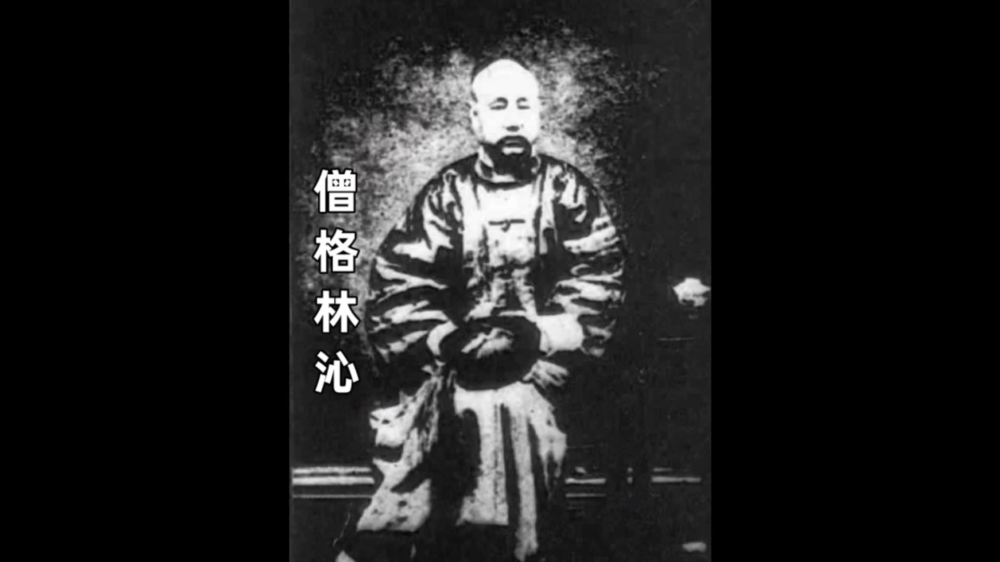
他說他多次剿捻成功，捻軍大批大批的來投降，他受降的捻軍就不下10萬人。僧格林沁剿捻沒有進展卻多次上報戰功，這樣就導致朝廷認為他剿捻很順利，朝廷為了加快剿捻的進度，分別給曾國藩和官文下發諭旨，讓他們都增援僧格林沁。
曾國藩當然不願意派兵，他回復朝廷說說區區四百里的戰場有僧格林沁就足夠了，而且官文也在，沒必要再派兵。不過朝廷的諭旨既然下了，曾國藩也不能完全沒反應，他就派了少量的幾個營去支援官文，官文跟湘軍的關係還比較近，曾國藩派兵也是去支持官文，不肯支持僧格林沁。清廷甚至下諭旨點將，讓湘軍的劉連捷部和淮軍的劉銘傳部協助剿捻，還沒等曾國藩和李鴻章回話，僧格林沁他居然自己都拒絕了，跟朝廷說不用，僧格林沁是又剛愎自負又狂妄，這就導致清軍的統帥都不願意跟他合作。
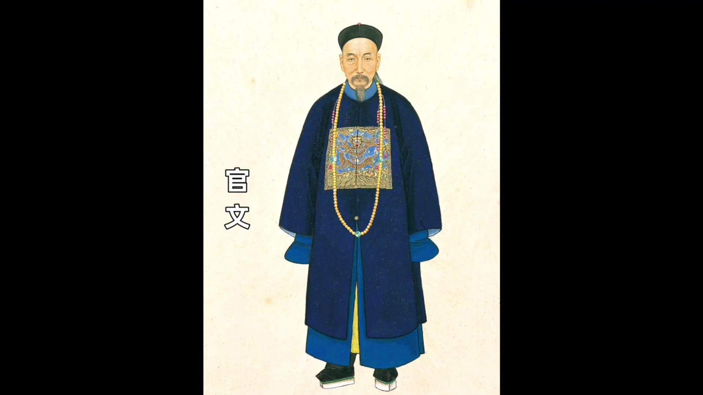
甚至連滿大臣官文都不願意跟他合作，官文不願意跟僧格林沁會師，導致朝廷下旨斥責官文，朝廷的諭旨裡面說說僧格林沁的部隊接連獲得大勝，未曾看到官文派部會剿，為何不進兵會剿，是不是有意拖延？官文不肯會剿就是朝廷上諭裡面說的第一句話就是僧格林沁的部隊「接連獲得大勝」，僧格林沁有沒有獲得大勝，官文難道不知道嗎？你都吹牛說自己獲得大勝了，我還來幹嘛來搶功嗎？不僅官文不肯派兵，其他各路的清軍都不肯派兵。僧格林沁在奏折裡面全是大勝，但是實際的情況是他一直都沒能追到捻軍，他想追捻軍跟捻軍打一場主力對決，但是就是追不到，捻軍跟僧軍打打停停，一路遛著，僧軍渡過黃河，從湖北麻城打到了河南鄧州，到鄧州之後捻軍向北撤退，這時候僧格林沁的軍隊已經疲憊不堪，僧格林沁打算在鄧州駐紮休整隊伍，捻軍根本不讓他們休整，捻軍留下一部分部隊當誘餌，在鄧州附近不斷的打圈引誘僧軍，然後又派一支部隊北上做出要打京城的姿態嚇唬清廷，清廷害怕捻軍北上，給僧格林沁下令必須出戰，僧格林沁沒辦法，部隊沒休息成，只能繼續追著捻軍跑。賴文光率領一支捻軍部隊把僧軍又引回到了湖北境內，兩軍在襄陽打了一場大戰，結果是僧軍戰敗，捻軍獲勝，不過僧軍的主力都還在，損失不是太大，在湖北打完之後，賴文光又把僧軍引回到了河北鄧州，張宗禹在鄧州休整多時，他以逸待勞，大規模的攻打僧軍，僧格林沁又被打敗，退回到了鄧州憑城堅守。捻軍的騎兵雖然厲害，但是他們也有缺點，他們不擅長攻城，所以每次僧軍戰敗只要退回到城池裡面，捻軍就得撤退，所以捻軍雖然打了好多次勝仗，但都沒辦法消滅僧軍的主力。
在連番戰鬥之後，僧格林沁認准了一個打捻軍的道理，就是只要騎兵窮追不捨，緊緊的咬住捻軍，以機動對機動，不給捻軍從容佈置的時間，清軍就不會被包圍，清軍就算一時戰敗，因為都是騎兵，很快就可以聚攏起來，然後重振旗鼓，清軍的兵員充足。
00:20:00
後勤充裕只要咬住捻軍一定能把捻軍給耗死，這是僧格林沁的戰術，就是緊緊的咬住捻軍不放。僧格林沁認准了這套戰術，捻軍也有新想法，張宗禹和任化邦決定要來一次數千里的大迂迴行動，通過大規模的機動行軍製造出一個徹底殲滅僧軍的機會。
捻軍從河南葉縣出發，經過襄城、禹城，最後轉入到豫東平原的鄢陵。因為是長途奔襲，僧格林沁的前鋒追到鄢陵的時候，主力大部隊都還沒有跟上。
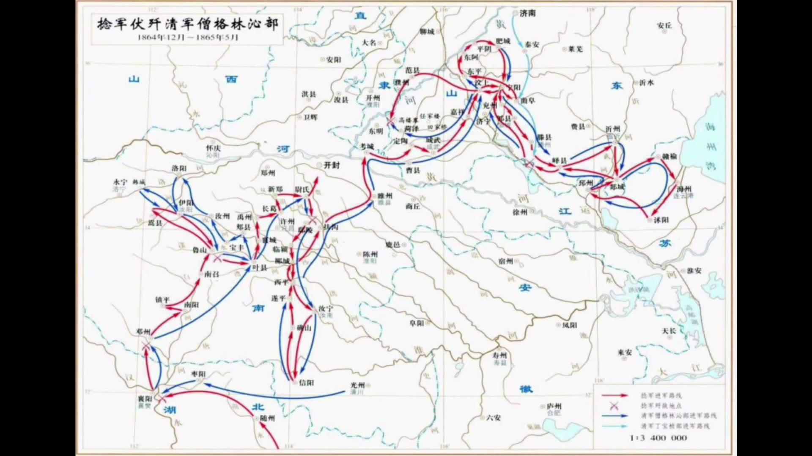
捻軍在鄢陵集中兵力擊敗了僧軍的前鋒，僧格林沁率須主力部隊趕過來的時候也被捻軍打了個措手不及，吃了敗仗。僧格林沁吃了敗仗之後，打算在鄢陵侏整，捻軍看到僧軍停止追擊，包圍汝陽，引誘僧軍來救援，目的是讓僧軍不能喘息。為了救汝陽，僧格林沁只能終止休整，率領騎兵增援汝陽。誰知道呢，在汝陽撤圍掉頭去攻信陽，等僧軍追到信陽，捻軍叉向郾城進發。捻軍就這麼溜著僧軍走，從河南西部跑到山東境內，來回奔馳了數千里。
僧格林沁堅持要窮追不捨，他認為雖然自己的軍隊已經很疲憊，但是捻軍一樣肯定也很疲憊，尤其是捻軍一路上狂奔，他們的糧草補給肯定快用完了。相對的，僧軍可以從沿途的城鎮得到補給，他認為追到底，捻軍就會出現糧草不足，他就能把捻軍給一舉殲滅。追到山東境內之後，僧格林沁為了加緊追擊，讓士兵只吃攜帶的乾糧，他們不分晝夜的又追了10多天，一直追到
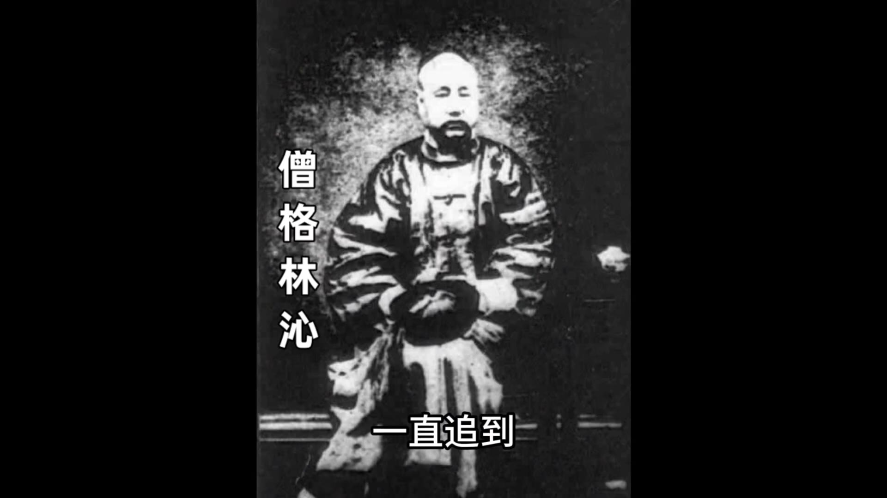
連僧格林沁自己都累的拉不住繮繩，他還在堅持追。由於連續追了這麼多天，僧軍的騎兵部隊和步兵部隊基本上已經分開了，騎兵也有很多都掉隊了。捻軍走到鄆城附近的時候，招撫了大量的流民，應該說是有大量的武裝流民來投奔捻軍。鄆城附近當時發生了大水災，很多士地都被河水淹沒，就都變成了流民，這些流民自己武裝起來找飯吃，聽說捻軍走到這，他們就都來投奔捻軍。捻軍意外的一下子增加了上萬人馬，本來從河南一路奔襲過來的捻軍已經很疲憊，這些新招撫的流民卻是體力完好，捻軍的士氣頓時高漲。
在招撫完流民之後，當時僧格林沁率領的清軍才3萬多人，捻軍的兵力已經達到了僧軍的三倍。任化邦、賴文光等捻軍首領在曹州聚齊，他們決定在高橋寨伏擊清軍，打一場主力決戰。高橋寨在曹州菏澤縣城西北方向，為了防堵洪水，當地修築了大量的河堰，河堰上面種植了密集的柳樹林，這些柳樹林是埋伏的好地方。捻軍把主力埋伏在村莊裡面和柳樹林裡面，然後派出幾股兵力去引誘敵人。
僧格林沁果然上當，他率領部隊來追。僧格林沁的3萬多軍隊因為一路狂奔，有一大半都掉隊了，跟著僧格林沁追在前面的是僧軍裡面最精銳的1萬人，正是這1萬多人進入到了捻軍的包圍圈。僧軍進入到包圍圈之後，10萬捻軍衝出來開始跟僧軍對決。這1萬清軍是既疲憊又被打了個措手不及，他們雖然都是精銳部隊。
戰鬥的過程打的是迅速而激烈，清軍主力很快就被捻軍衝散，小股的部隊直接被殲滅。僧格林沁率領一部分部隊撤退到一處河堰，依託河堰固守等待援軍救援。捻軍把僧格林沁給層層包圍之後，開始挖長壕、修工事。捻軍從來都是打完就跑，這次很反常，居然開始修起工事來了。僧格林沁知道捻軍這是下定決心要困死他，他只能趁著捻軍的工事還沒完成的時候，率領部隊突圍。僧格林沁突圍的過程中被一隊捻軍給追上，在戰鬥中身負重傷，最後被一個10多歲的捻軍童子軍給割掉首級。
這一戰捻軍大獲全勝，捻軍不僅殺掉了僧格林沁，還殲滅了僧格林沁最精銳的部隊1萬多人。捻軍的這一場大勝仗對清朝的影響非常大，可以說是改變了整個晚清的格局，因為僧格林沁是旗人將領裡面朝廷最後的依靠，當時幾個著名的旗人將領多隆阿1864年在西北戰死了，現在僧格林沁戰死，清廷就再沒有統帥級別的旗人將領了。
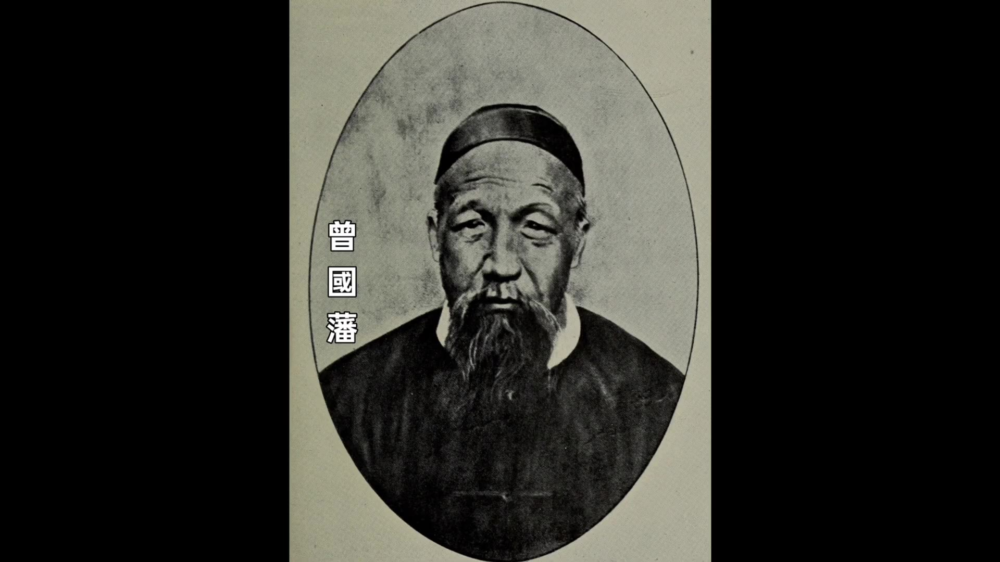
清廷只能下旨讓曾國藩負責剿捻。
00:25:01
讓湘軍和淮軍開進北方，朝廷一直不敢讓湘軍和淮軍進入北方，就是怕他們進入北方之後會威脅到京師的安全。在平定太平天國之後，朝廷是想方設法的裁撤湘軍。如果僧格林沁能夠鎮壓得住捻軍，朝廷就會繼續的裁撤湘軍，直到湘軍被完全裁掉，然後還會繼續裁掉李鴻章的淮軍和左宗棠的楚軍。現在僧格林沁被殺，大批精銳的旗軍軍隊戰死，朝廷再也沒有力量恢復八旗軍，朝廷在華北就只能依靠湘軍和淮軍來平定捻軍，在西北也只能依靠左宗棠的楚軍來鎮壓回亂。所以說捻軍打的這場勝仗徹底改變了清朝的格局。好了，今天的故事就講到這裡了，下期我們繼續講曾國藩剿捻「1921-1945年的專題歷史課程」我開通了，有興趣的朋友歡迎點擊影片下方鏈接瞭解，歡迎大家點贊關注。
大家好，今天我們繼續講捻軍。上期節目我們講到捻軍擊敗並且殺死了僧格林沁，僧格林沁是清廷最後的依靠。僧格林沁戰死之後，朝廷只能讓曾國藩掛帥剿捻。曾國藩剿捻很不順利，湘軍習慣的戰術是結硬寨打呆仗，捻軍的特點是靈活機動，捻軍的戰術剛好是湘軍最不擅長的，所以曾國藩在剿捻的過程中他三次大規模的調整戰術，都是被朝廷的言官各種彈劾。而且曾國藩他自己嫡系的湘軍已經幾乎都裁掉了，所以他率領剿捻的部隊大部分都不是自己的部隊，為了整合這些部隊，他更是費盡了心神，他到此刻可能對裁撤湘軍有一些後悔。曾國藩曾經寫信給自己的友人：
他在信中抱怨說：「撤湘軍一事合九州鐵不能鑄一錯。」最後曾國藩終於找到了適合的戰術，也成功整合了軍隊，但是剿捻還是功虧一簣。功虧一簣不是輸在了戰場，而是遭到了慈禧的陰謀暗算。曾國藩找到了什麼樣的戰術對付捻軍，到底什麼樣的戰術合適？曾國藩怎麼整合的軍隊？慈禧為什麼要陰謀暗算他？慈禧又是用了什麼樣的招數暗算的他？世人評價曾國藩的時候總會給他加上一個「剿捻無功」的標籤，曾國藩剿捻到底是有功還是無功？今天我們就來聊聊曾國藩剿捻。
朝廷下諭旨讓曾國藩剿捻，曾國藩是非常不情願的。曾國藩有平定太平天國的功績在手，他已經不需要任何事功了，何況他已經是功高震主，只會讓自己的處境越來越不利。他裁撤將軍裁的那麼主動、那麼痛快，幾乎全部都給裁掉，有一個原因就是他不想再帶兵上戰場。所以曾國藩給朝廷上奏折推辭，他說了兩個理由，他說自己手裡面沒有兵可用，他的嫡系湘軍經過多次裁撤只剩下9,000多人，而且這9,000多士兵都是南方人，不適合北方的天氣，這些士兵寧願被裁掉也不願意到北方作戰，這是他說的第一個理由——手裡沒兵。曾國藩說的第二個理由是捻軍和太平軍不一樣，太平軍以攻佔城池為目的，而捻軍不熱衷於攻佔城池，捻軍是以大隊的騎兵為主，速度很快，湘軍是以步兵為主力，節奏相對緩慢，所以他不適合當主帥。曾國藩說的都是事實也很有道理，但是朝廷找不到比曾國藩更合適的人選，所以朝廷還是下諭旨讓他不得推辭，必須當主帥。
關於曾國藩說的手裡沒有兵的問題，朝廷給他調兵遣將，朝廷調的兵源主要來自兩支部隊，一隻是淮軍，朝廷讓李鴻章把淮軍拿出來一部分派給曾國藩，另外一支是僧格林沁的殘部，僧格林沁戰死之後他留下來的軍隊也派給曾國藩，這樣曾國藩說的沒有兵的問題就解決了。我們來盤點一下曾國藩的兵源，曾國藩用於剿捻的兵力主要是三部分：第一部分是他自己裁撤剩下的湘軍，第二部分是李鴻章派來的淮軍，第三部分是僧格林沁的殘部。這三部分兵力都需要曾國藩花一番心思來調教才能使用。
我們先說湘軍，曾國藩北上剿捻帶走的湘軍有9,000人，這9,000人分別是劉松山和易開俊率領的老湘營各3,000人，還有張詩日統領的親兵3,000人。這9,000人是曾國藩裁軍裁下來的剩下來的嫡系湘軍，按理來說既然是嫡系湘軍應該如指臂使，但問題是這些湘軍士兵因為長期被拖欠軍餉，積極性都不高，劉松山的部隊因為鬧餉不肯渡過長江。
00:30:02
曾國藩在處理湘軍問題時，因欠餉導致部隊士氣低落，為穩定軍心，他先後撤換了易開俊的部隊，由劉松山接掌，並安排張詩日的親兵隊重新整編。為解決財政問題，曾國藩積極籌措軍餉，待湘軍穩定後再率領上前線剿捻。然而湘軍戰鬥力的下降，不僅影響了作戰協調，更讓與其共同作戰的淮軍產生輕視心理，間接損害曾國藩的權威。
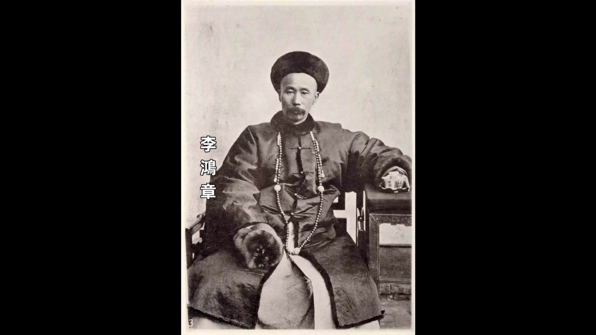
_淮軍是曾國藩剿捻的主力部隊_
關於兵力配置，李鴻章調派的淮軍分為兩批：第一批包括劉銘傳的銘軍、張樹聲的樹軍、周盛波的盛軍共約2萬多人；第二批則有潘鼎新的鼎軍、楊鼎勳的勳軍、郭松林的松軍、劉士奇的奇軍及劉秉章、王永勝等部隊，總計參戰人數近4萬人。儘管有觀點認為曾國藩難以指揮淮軍，實際上淮軍骨幹多源自湘軍，且曾國藩曾親自訓練過這些將領，因此指揮並無困難。真正擔憂的是李鴻章，因其擔心淮軍作為自己的嫡系部隊會被曾國藩「胡亂使用」。
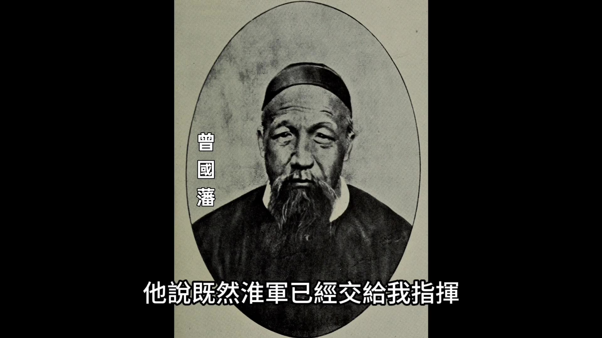
_曾國藩與李鴻章就剿捻戰術存在分歧_
為解決權力交錯問題，曾國藩致信李鴻章，明確表示：「既然淮軍已交我指揮，你就應該徹底放手。除裁撤營頭需與你商量外，其他事務均由我獨立主持。」他更以長者口吻說明對淮軍將領的責罵與激勵，皆出於「為人父為人師」的本心，意在提醒李鴻章勿干預前線軍務。此後李鴻章確實專注於籌集軍餉，不再插手作戰指揮。
曾國藩真正面臨困難的，是統領湘軍、淮軍以外的部隊，其中尤以僧格林沁殘部中最棘手的陳國瑞部為甚。陳國瑞原為湖北應城人，天性殘忍，幼年即以殺狗為樂，其部隊以紅衣紅纓為標誌。他先後效力太平軍、黃開榜、袁甲三與僧格林沁，雖戰功卓著，但行事囂張跋扈，甚至因飯菜不合口味便殺死十多名廚師。其戰術總結為「戰要戰的穩，追要追的狠」，曾在僧格林沁平定苗沛霖叛亂時以數百勇士突襲敵軍，功居第一。高橋寨之役中，他甚至冒死奪取僧格林沁遺體，成為唯一未受清廷處分的將領。
00:35:01
清廷讓他率領僧格林沁的殘部隨曾國藩繼續剿捻，曾國藩指揮這樣一個手下打仗並非易事。當時有一個契機是陳國瑞進駐濟寧，他與劉銘傳換防。陳國瑞看到劉銘傳部淮軍的槍炮精良，心生羨慕，趁淮軍不備，率領五百人偷襲淮軍營地，意圖殺人搶武器。
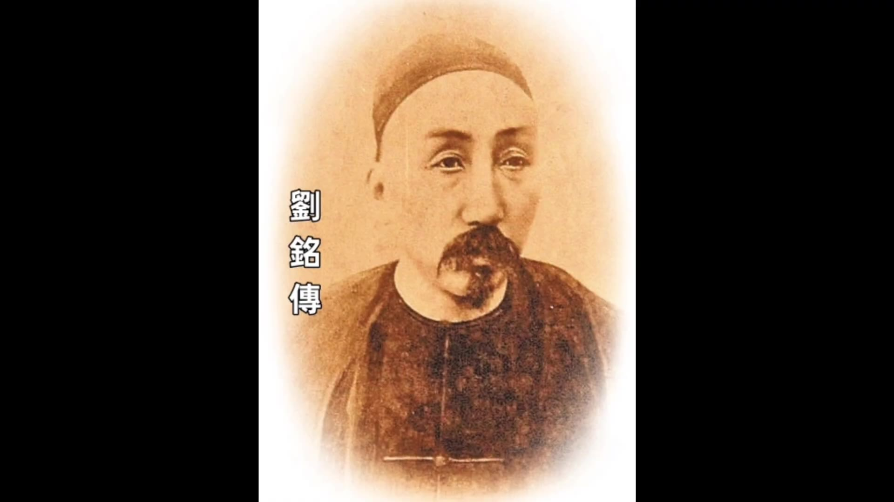
劉銘傳率大隊人馬來救援，他亦是個狠角色，將陳國瑞帶來的人全部殲滅，隨後將陳國瑞關押三日不給飯食。餓至極限的陳國瑞只得投降認輸。陳國瑞被釋放後，寫信向曾國藩投訴劉銘傳。當時曾國藩正欲將其收為己用，遂先以感化手段應對——他在陳國瑞狀告劉銘傳的稟帖上寫了兩千餘字的批語，詳細記載劉銘傳歷史上殘暴不法的行為，並督促其改過，同時與其約法三章，要求其不擾民、不私鬥、不抗拒長官命令。
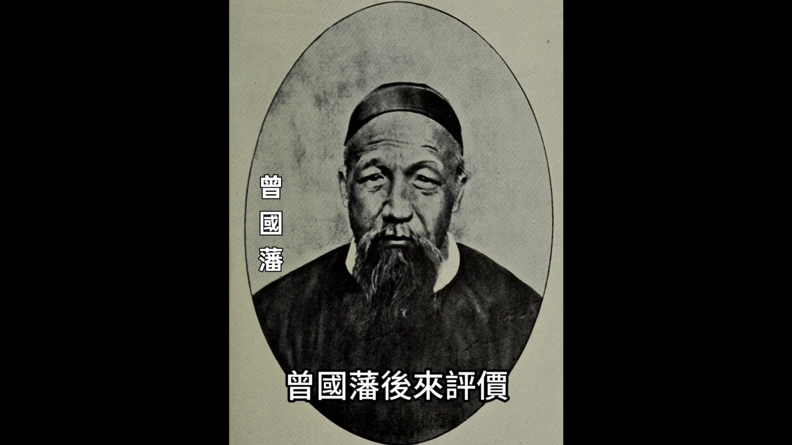
陳國瑞收到曾國藩的信後，既不承認自身罪責，亦不肯執行約法三章。他自恃朝廷會為其撐腰，未料曾國藩竟直接上奏參劾，朝廷隨即革去其軍職，剝奪黃馬褂，僅留總兵頭銜令其戴罪立功。陳國瑞至此才知曾國藩厲害，只得乖乖到徐州當面請罪。曾國藩軟硬兼施，終於收服陳國瑞，其後陳國瑞在曾國藩麾下奮戰，屢建戰功。
曾國藩後來評價，陳國瑞的軍隊雖無大量西洋軍械，但其敢深入作戰、耐苦，剿捻竟比湘軍、淮軍更得力。收服陳國瑞，等同於收服僧格林沁殘部。曾國藩擺平湘軍、搞定淮軍、收服僧格林沁殘部後，對手下官兵得以完全指揮，可依自身戰略戰術剿滅捻軍。
曾國藩帶兵打仗擅長歸納總結，透過僧格林沁剿捻過程發現：小範圍看，捻軍機動性高似無規律；但若將視野放大至數千里戰場，其行動仍有跡可循。雖捻軍在多省間奔走，
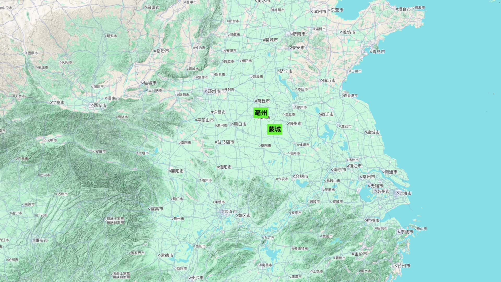
其仍無法捨棄老家蒙城與亳州。若將捻軍行動軌跡視為大圓圈，圓心即為蒙城與亳州。捻軍無論如何奔走，活動範圍始終未出此圓圈。造成此態勢的原因在於捻軍缺乏攻堅能力，無法佔領城池，即便攻下亦無治理能力，打完搶完便走。其奔走路途中雖可依搶劫補給，終需大後方休整，並由大後方提供兵員補充與輜重糧草，此大後方即為蒙城與亳州。除蒙城與亳州外，安徽鳳陽、潁州，河南歸德、陳州，江蘇徐州等地民間亦支持捻軍，捻軍亦可於此獲得補給。
掌握此規律後，曾國藩開始部署戰術。他採用與僧格林沁截然不同的策略——僧格林沁以騎兵對騎兵追著捻軍走，曾國藩則改為在固定地點攔截。
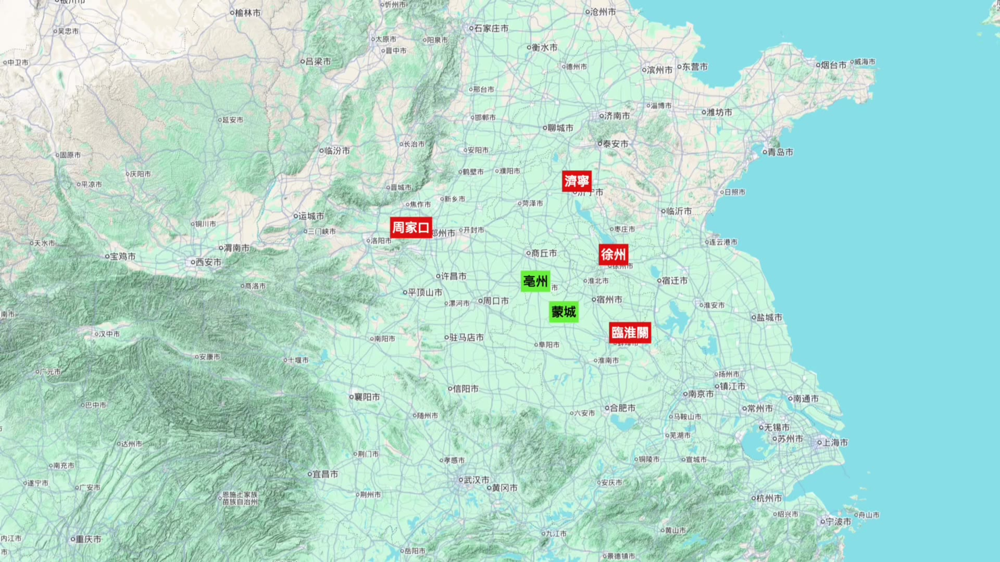
曾國藩將江蘇徐州、山東濟寧、河南周家口、安徽臨淮關設為防禦要地，派重兵把守。依其分析，此四處重鎮恰可扼製捻軍平時活躍地點。此戰術按曾國藩自述為「變追尾為攔頭」，亦稱「以有定之兵制無定之賊」。四處重鎮均設置大量偵察兵，總有一處能發現捻軍蹤跡。一旦發現捻軍主力，即刻出兵拖住，實現四鎮合圍。捻軍日常活動範圍應在四鎮搜索圈之內。為防捻軍跳出四鎮覆蓋範圍，曾國藩亦設立機動騎兵隊，專責尾追捻軍。此戰術主旨在揚長避短，不與捻軍玩追擊戰。戰術用上後，透過拉網偵察確實能找到捻軍蹤跡，但問題隨即暴露出來——
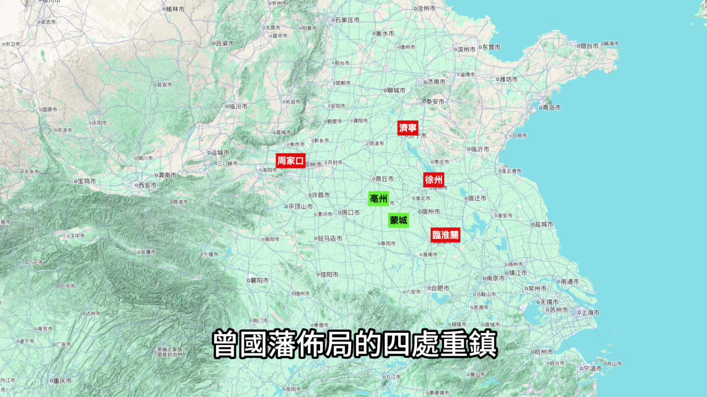
曾國藩佈局的四處重鎮之間存在明顯空隙，捻軍若不想交戰，完全可從四鎮間穿過。清軍機動性不如捻軍，即便發現捻軍痕跡亦難追上。依曾國藩原設想，應是某鎮發現捻軍後……
00:40:00
能夠拖住捻軍然後其他三鎮過來合圍的現實情況是，一鎮發現捻軍之後根本拖不住捻軍，捻軍跟清軍一碰就走。在200裡外的其他三鎮清軍完全來不及合圍，所以曾國藩的設想很美好，但是現實和設想差距很大。要是能實現曾國藩的戰術部署，四鎮是完全不夠的，得把每個鎮之間的距離縮小到100裡以內，這樣就至少得部署十幾個重鎮。部署十幾個重鎮，清軍兵力根本不夠，所以這個戰術宣告失敗。
曾國藩變換第二套戰術，第二套戰術他是擴大了遊擊隊，擴大的遊擊部隊，他把自己最得意的猛將鮑超調過來。
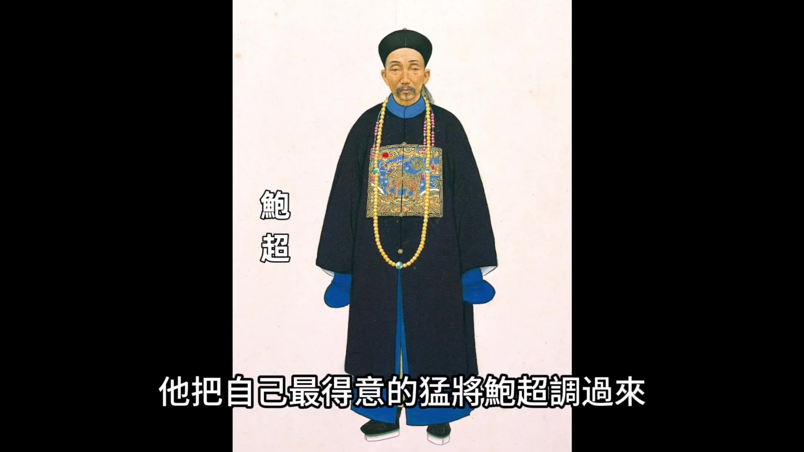
把鮑超的霆軍重新改編雙成騎兵3,000人，步兵12,000人。曾國藩還編練了一支馬隊，是李昭慶的馬隊，李昭慶的騎兵有9,000人，步兵也是9,000人。曾國藩這時候的總兵力已經增加到了7萬多人，接近捻軍總數。
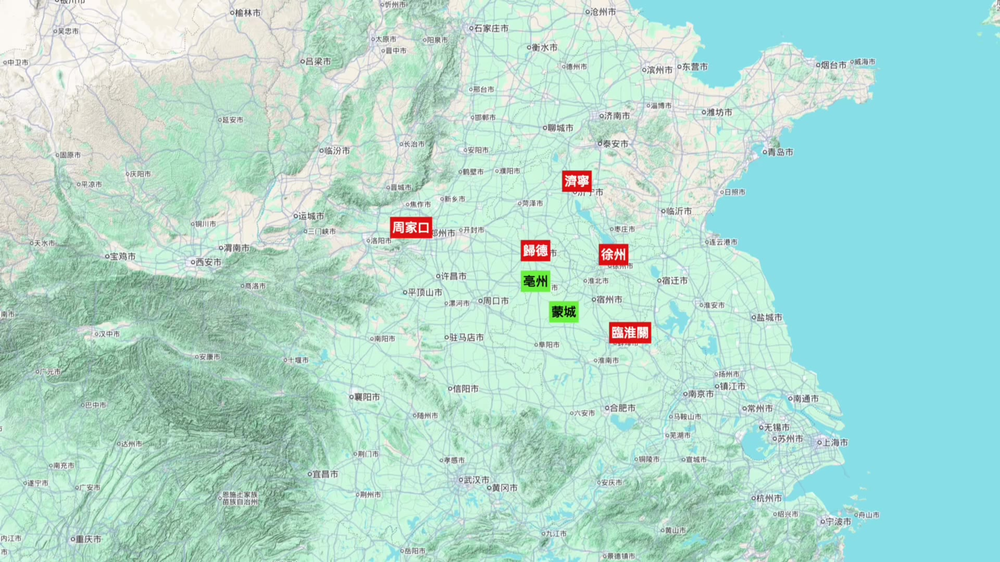
曾國藩把原來五處重鎮的兵力大部分都抽調出來，每鎮抽調出來的兵力變成一支遊擊部隊，這是五路遊擊再加上鮑超的遊擊部隊，共是六路遊擊部隊，這是曾國藩改編後的六路遊擊部隊。他用這六路分別追擊捻軍不同的部隊，然後原來的五處重鎮只保留了少量的兵力卡住交通要道。這時候曾國藩的遊擊部隊有超過5萬人，五處重鎮留守的兵力全部加到一起有2萬多人，所以遊擊部隊是主力，五處重鎮是輔助。這次曾國藩的戰術實際上跟僧格林沁的戰術就很像了，都是用遊擊部隊在捻軍後面追，只不過曾國藩跟僧格林沁遊擊部隊的差別是他組建了6支分散的部隊，他用6支遊擊部隊是為了能夠有效的追上捻軍，要不像僧格林沁近只有一支部隊只能追著敵人後面跑，很難有效的追上捻軍。不過這6支部隊的兵力分散沒法殲滅捻軍，所以曾國藩還是保留了五處重鎮，有這五處重鎮在。
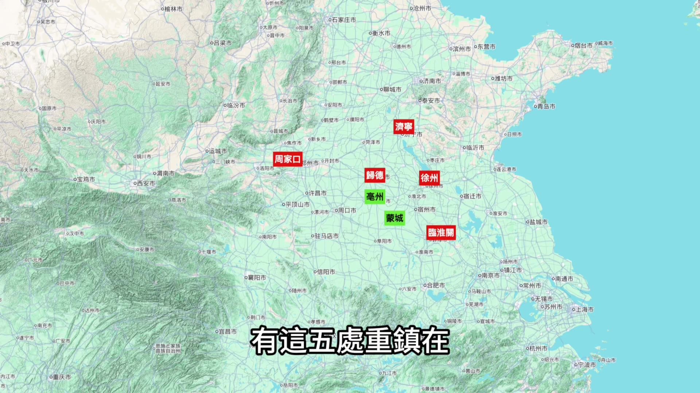
就能保證在捻軍出沒的區域，無論在什麼地方發生戰鬥，200裡內肯定有清軍的老營，捻軍只要在兩天內不能結束戰鬥，重鎮的兵力就能支援上來。重鎮留守的兵力雖然不夠強，但是可以看守遊擊隊的兩翼和後路，只要能拖住捻軍，就能等到其他幾路遊擊隊過來支援。這是曾國藩的新戰術。使用新戰術之後確實能夠有效的追到捻軍，但是新問題又來了，新問題是這6支遊擊部隊追上捻軍不敢打，因為他們追到的都是大隊捻軍，大隊捻軍的實力並不弱。
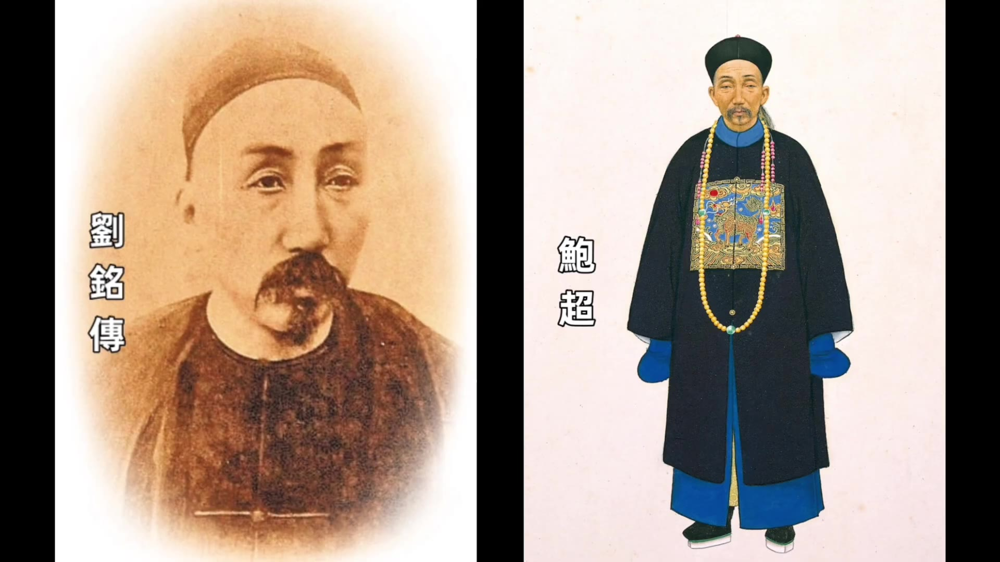
只有劉銘傳的部隊和鮑超的部隊遇到大隊捻軍的時候還敢開戰，開戰之後能不能打贏也是五五作數，其他幾路部隊都不敢打，這樣的情況就變得很尷尬，6路分散追捻軍追得上但是打不過，要是把6路集結到一起追又追不上，折騰了一圈之後這套戰術也宣告失敗。曾國藩再次變換戰術，這是曾國藩第三套戰術了。曾國藩這次的戰術跟前兩次的差異很大，這次他的戰術叫「畫河圈地」，也叫「河防」戰術，他是要利用河防鎖死捻軍，限制捻軍的活動空間，逐漸壓縮包圍圈，逼迫捻軍跟清軍主力對決。當時清軍跟捻軍縱橫的戰場跨越了好幾個省，這些省份貫穿著幾條主要河流，首先是大運河，在大運河以西的地界比如河南、皖北這些都是久經戰火殘破的地方，捻軍在這裡得不到補給，捻軍只有運動到大運河以東的地界才能獲得補給，這樣清軍就可以沿著大運河設防，阻擋捻軍渡河，把捻軍擋在大運河西面，就能斷了捻軍的補給。
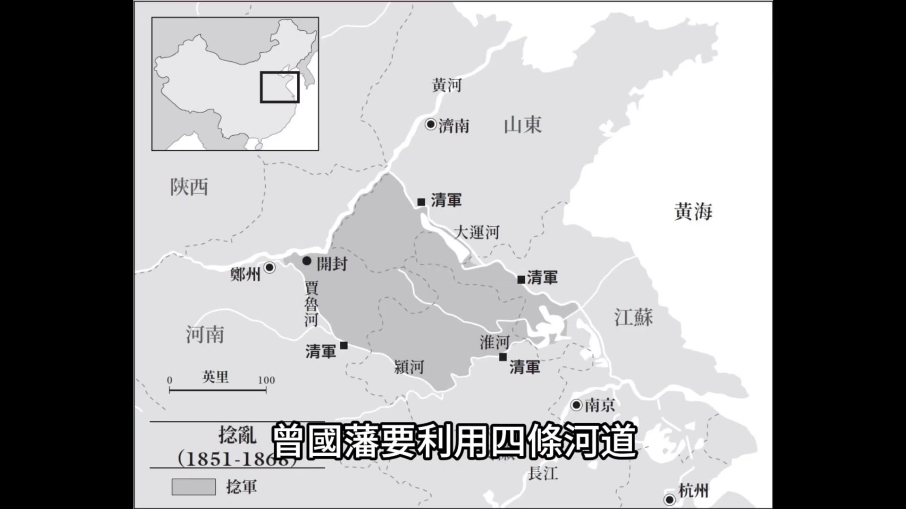
做成四道防線，它要以河流為天險，把他們困在貧瘠的河道之間失去補給。曾國藩的這個戰術徹底放棄了追擊戰，變成了他最擅長的防禦圍困戰。
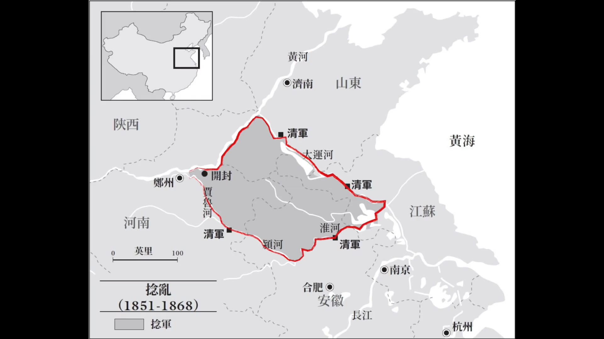
，是一個超級大工程，雖然有一些河道，但是很多地區都需要新建長牆和堡壘，「如說有些河道沿岸的土質是砂士缺乏粘性」
00:45:01
所以曾國藩的這套戰術是一個非常宏大的工程，朝廷上很多大臣都攻擊曾國藩，甚至李鴻章都看不好曾國藩的戰術。李鴻章在給劉秉章寫的信裡面譏諷曾國藩，他說「古有萬里長城，今有萬里長牆，想不到秦始皇在千年之後還能遇到知音」。李鴻章當時是還沒跟捻軍交過手，不知道捻軍的實際情況，他在後方嘲笑他老師迂腐，等到後來他自己掛帥上前線剿捻了，他就知道剿捻的難度有多大了。到最後他也只能繼續用他老師的戰術。
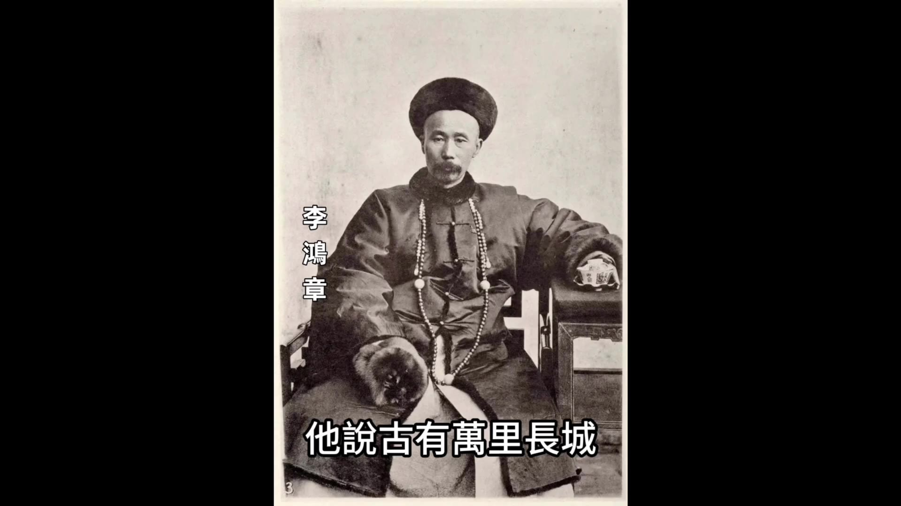
曾國藩建這麼長的河防工事，他用自己手裡面的7萬多人根本不夠，他跟朝廷請示都調動起來，讓這些綠營兵一起修工事和在重點的地段進行防禦。曾國藩手裡的6路游擊部隊還是負責圍追堵截捻軍。曾國藩的新戰術用上之後，捻軍再被追的壓力就大了。他們受限於河防，而具鶯國藩把他們困在了土地貧瘠的地區，他們很難得到補給。曾國藩還深入這些地區的民間，讓他們碰到捻軍來的時候必須關門閉戶，不能給捻軍提供補給，要是誰敢資助捻軍一定嚴懲不貸。這樣捻軍就成了困獸之鬥，他們後面有6路游擊窮追不捨，四周有河防工事限制機動。
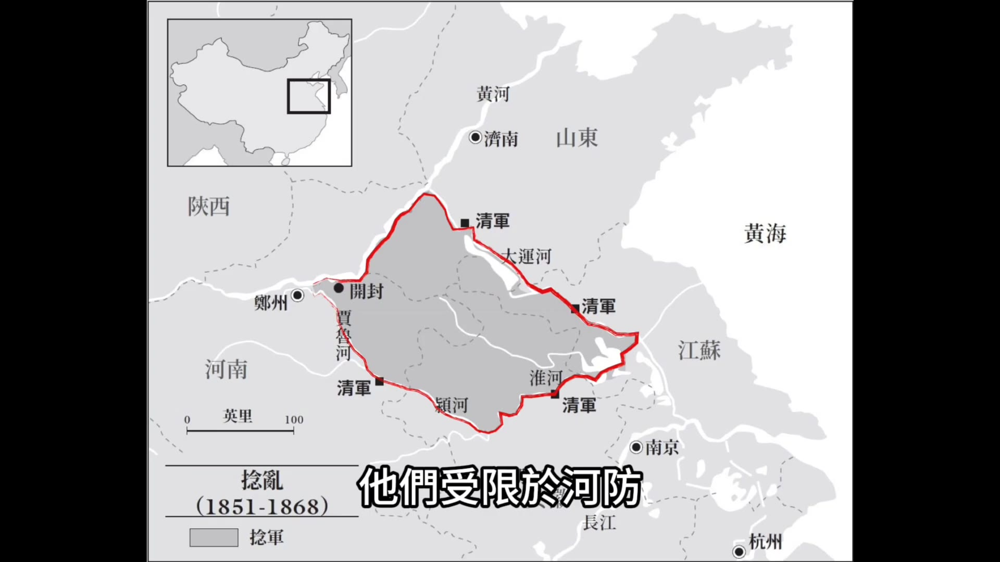
河防剛建好一個月，張宗禹率領的捻軍在河南周家口就被劉松山給追上，張宗禹跟劉松山打了一仗，損失5,000多人，這是開戰以來捻軍遭受到的最大損失。賴文光和任化邦率領一支捻軍部隊向東突圍，他們碰上潘鼎新率領的淮軍也是損兵折將。曾國藩的新戰術效果很明顯，捻軍的形勢開始變得被動又窘迫。
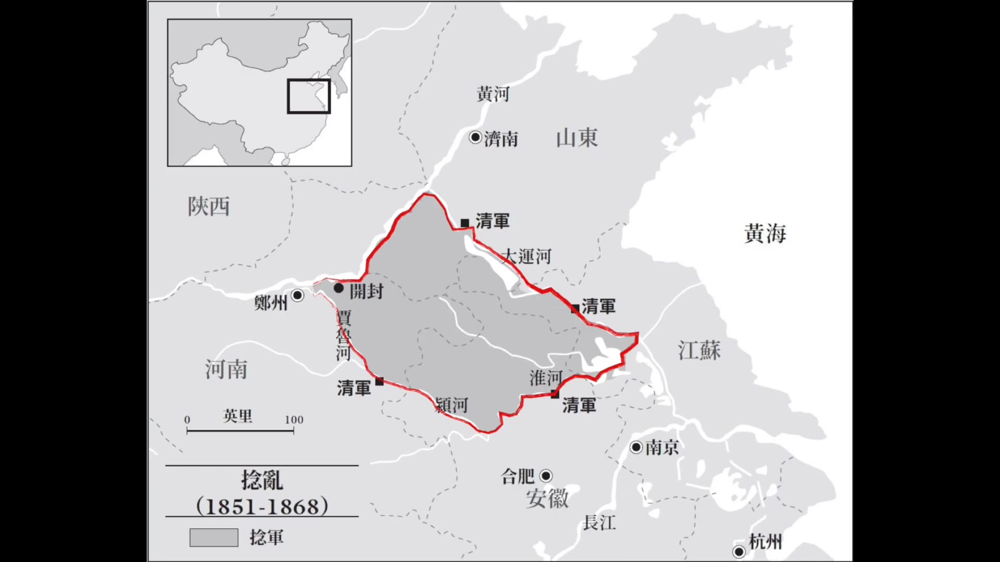
精銳的湘軍淮軍只能防守—部分據點，都是防線比較薄弱的地方（1851-15賈魯河的上游朱仙鎮以北到開封40里，開封往北到黃河30里（1851-1868沒法修築堤壩，只能派兵駐守）。這條防線是由河南當地的豫軍防守，豫軍的戰鬥力比湘軍淮軍要差很多（1851-186.張宗馬和任化邦在河南中牟會師，然後衝破河防衝出包圍圈。之後捻軍分成兩路部隊，張宗禹率領一路部隊進入到陝西，後來被稱作是西捻軍；任化邦和賴文光率領一路部隊繼續在中原活動，後來被稱作是東捻軍。捻軍從此之後就分裂成了東捻和西捻兩支部隊。捻軍雖然分成東捻和西捻兩支部隊，但是他們衝破了曾國藩的河防，看起來曾國藩的戰術又失敗了。清廷裡面的言官對曾國藩大肆彈劾，但是實際上曾國藩的河防戰術徹底打亂了捻軍的步調。捻軍最核心的區域他們不敢再回去。曾國藩按照這個戰略打下去，只要持續修築長牆，持續的增加馬隊，再過兩年肯定能夠剿捻成功，但是曾國藩卻不願意再堅持下去了，他受到朝中的攻訐，主動要求換帥。
在曾國藩剿捻期間他不斷受到朝廷言官的彈劾。
曾國藩一開始戰術失靈，剿捻不利，他但凡有一點問題，朝中總有言官在彈劾他，比如說彈劾他畏縮不前，不敢和捻軍接仗。最讓他生氣的還不是言官的彈劾，而是朝廷把這些彈劾他的奏章都寄給他看。如果朝廷足夠的信任他，收到這些奏章之後就應該留中不發。現在朝廷不僅拿到朝堂上討論，還寄給曾國藩看，這明顯是朝廷在敲打曾國藩。按理說朝廷不應該拖曾國藩的後腿，因為僧格林沁已經陣亡了，清廷的統治就危險了，而且曾國藩是朝廷選出來的主帥。朝廷讓曾國藩掛帥的時候，曾國藩多次推辭，他是實在推辭不掉，朝廷逼著他掛帥的時候，他才勉強當了剿捻的主帥。現在曾國藩剿捻還沒完成，朝廷為什麼沒卸磨先殺驢？原因就是朝廷既要用曾國藩的能力。朝廷下了一招非常高明的政治棋，在讓曾國藩剿捻之前，朝廷一直在裁撤曾國藩的湘軍，因為曾國藩的威望太高，影響力太大，所以裁掉湘軍，朝廷才能放心。曾國藩自己他也不用再擔心朝廷猜忌，但是他當時完全裁軍又不行，因為全國的動亂還沒徹底平定，太平軍還有很多殘部。
00:50:01
捻軍亦在作亂，其他地區亦有亂匪作亂，故必須有足夠兵力平定叛亂。當時朝廷正籌劃「以淮代湘」之策，即以淮軍替代湘軍。因李鴻章缺乏曾國藩之影響力，故朝廷認為讓李鴻章統領淮軍更易控制。然朝廷未直接讓李鴻章掛帥剿捻，因其需考量戰場形勢。僧格林沁戰死後，清廷原有軍事體系與戰術已顯不足，必須建立新體系與戰術。曾國藩與李鴻章之中，曾國藩軍事才能較為突出，湘軍體系亦由其創建。李鴻章雖亦具軍事才能，其淮軍初期全盤照搬湘軍體系，後方學習常勝軍之西洋戰法。故朝廷選擇曾國藩，欲使其研究出對付捻軍之新戰術。事實證明朝廷判斷正確，曾國藩確具創新能力，其在剿捻一年半內更迭三套戰術，最終摸索出「河防」戰術，此戰術已驗證有效，若持續執行必可剿滅捻軍。
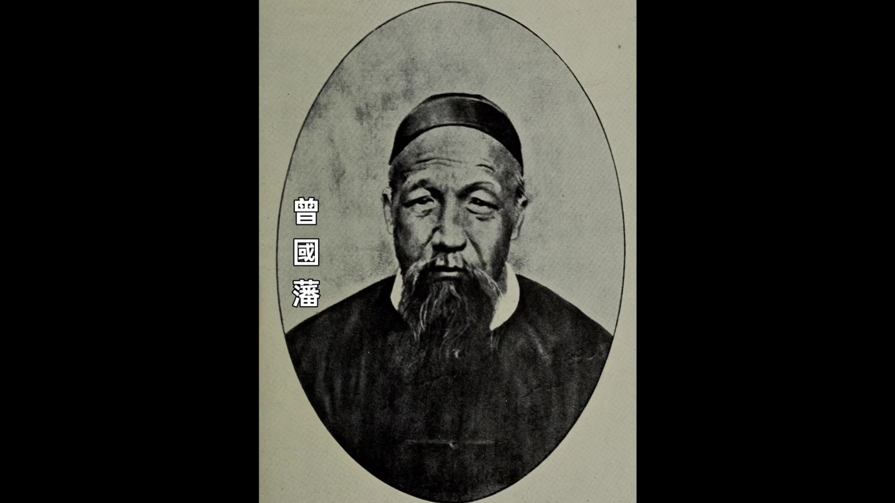
此後朝廷認為戰術已具備實施條件，遂讓曾國藩退下，推行「以淮代湘」策略。當時朝廷實質由慈禧掌權，其權力尚未完全鞏固，然關鍵決策皆由其主導。慈禧雖不擅大規模變革，卻精於操控官員。當時言官彈劾曾國藩之奏折，實為慈禧默許，言官僅為揣摩聖意而發言。慈禧可使兩派官員互相攻訟，自身則居於仲裁者之位。言官所上彈劾奏折，若揣摩正確則發下討論，若錯誤則留中不發，此即皇帝之權力體現。
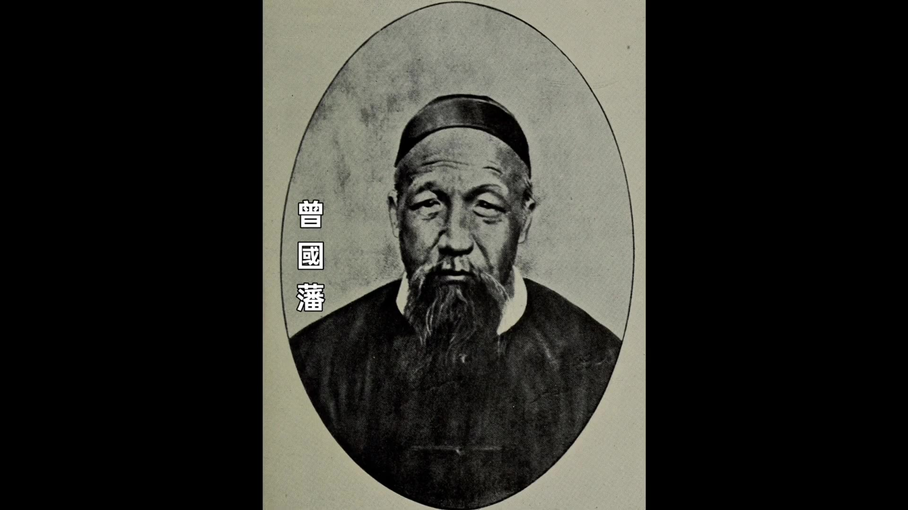
曾國藩深知朝廷權術，甘願退讓。其終日憂心朝廷猜忌，故自願讓位。即使李鴻章接掌剿捻，亦不破壞大局。曾國藩主動上奏請求辭職，自稱年老體衰，實難應付前線戰事。其辭職請求不僅針對剿捻統帥職位，更欲辭去兩江總督職務。朝廷初時婉拒，後因曾國藩堅持，遂批准辭職，惟未允其辭去兩江總督職務，僅予一月病假，命其安心療養，待病癒後返京面聖，官職問題另行商議。如此曾國藩卸下剿捻重任，由李鴻章接手。
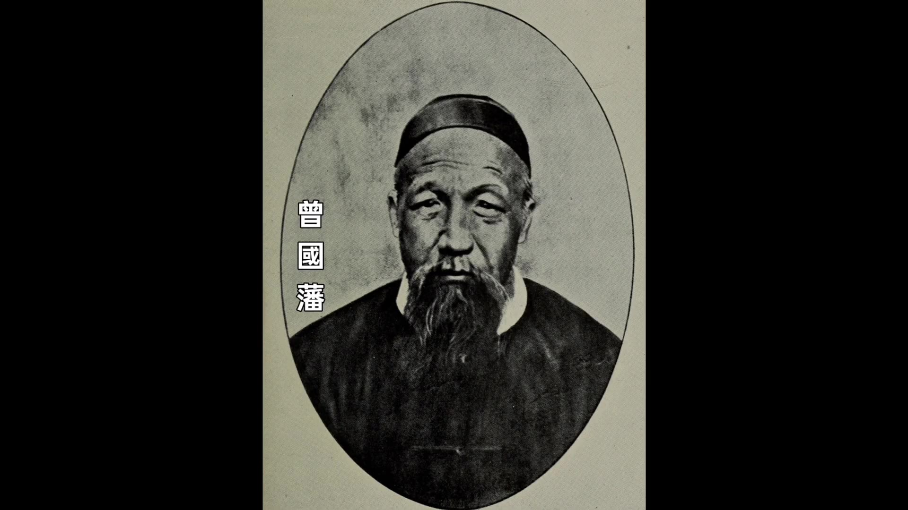
李鴻章剿捻之初即遭遇挫折，首年戰績遠不如曾國藩。其部將張樹珊部遭捻軍擊潰，差點被殲滅。張宗禹統帥之西捻軍一度進至京師門戶保定，朝廷震怒，李鴻章遭革去爵位、降兩級、戴罪立功。曾國藩主持剿捻時雖未滅捻，但從未遭大敗，損失亦遠不及李鴻章。曾國藩曾對幕僚趙烈文表示，李鴻章連戰連敗，情況危急，或需其再度出山收拾殘局。幸而李鴻章終究尋得有效對策。
00:55:01
得以成功殲滅捻軍，他找到了什麼方法？他是怎麼殲滅捻軍的？今天我們會說明。還有李鴻章剿捻雖然打的很窘迫，但是在剿捻的過程中，他徹底完成了「以淮代湘」的過程，他的淮軍徹底取代湘軍成為了天下第一軍。所以，捻軍既是李鴻章的對手。
李鴻章是怎麼徹底取代湘軍的？他是用了什麼樣的手段？下面我們就講李鴻章剿捻的過程。
李鴻章剿捻的時候，捻軍已經分成了東捻軍和西捻軍。東捻軍是由任化邦和賴文光率領，在中原活動，想要往四川發展；西捻軍是由張宗禹率領，往西北發展。關於捻軍分裂的原因，有兩種說法。第一種說法是捻軍內部領導人不和，張宗禹和任化邦有矛盾導致最後分裂，這種說法是來自於李鴻章給朝廷上的奏折。李鴻章給朝廷的奏折裡面的說法是「張宗禹和任化邦兩逆積怨已深，難以合作」。第二種說法是說捻軍是出於戰略配合，因為捻軍衝出曾國藩的包圍圈之後，感到獨立難支、孤立無援，所以張宗禹決定進入陝西聯絡西北的回民起義軍；任化邦和賴文光的目標是經過湖北進入四川，佔據四川的地利優勢。這樣捻軍可以開闢新的根據地，也可以有更廣闊的戰場，東西兩支捻軍還能相互呼應。這種說法是捻軍的首領賴文光在《自述》裡面寫的。這兩種說法呀，第一種說法唯一的依據就是李鴻章的奏折，不能夠驗證捻軍領導人是否真的有矛盾；第二種說法，捻軍的行動確實是按照這個戰略構想走的，只不過最後張宗禹並沒有跟回軍聯合，而任化邦、賴文光去四川的計劃也沒能成行。不管分裂的原因是什麼，捻軍分裂是事實。李鴻章掛帥的時候，捻軍已經完成了分裂。李鴻章首先圍剿的重點是中原地區的東捻軍。
李鴻章掛帥之後
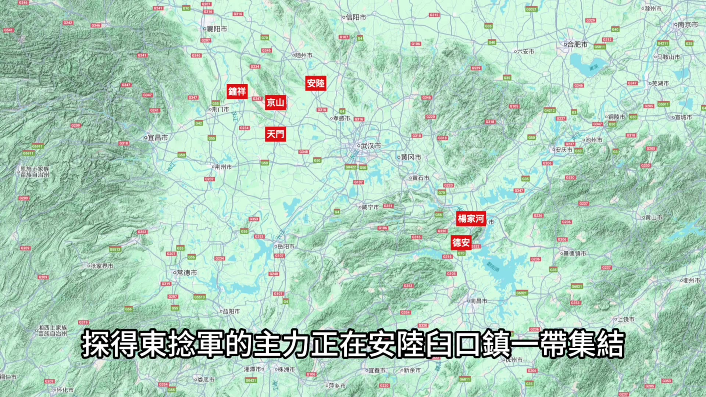
探得東捻軍的主力正在安陸自口鎮一帶集結，李鴻章就調集各路大軍，從湘潭市、株洲市開始向安陸進發。他調集的部隊包括劉銘傳部、張樹珊部、周盛波部、郭松林、鮑超等人的部隊，總兵力有七萬人。李鴻章用的戰術是圍追堵截，他並沒有用曾國藩發明的河防戰術。李鴻章喜歡浪戰，他喜歡採取積極主動的進攻，他不像是曾國藩打仗。這是李鴻章第一次組織大規模進攻，朝廷對他寄予厚望，下諭旨給他加以鼓勵，李鴻章也是信心滿滿。
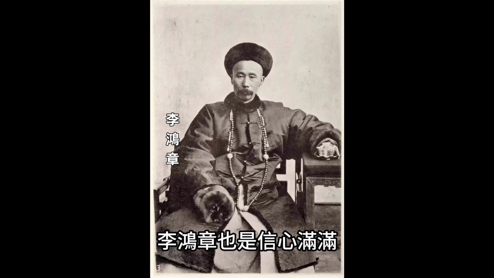
他給朝廷回奏折，他說現在大軍已經集結，網羅已經張開，一定可以痛剿捻軍。然而呢，李鴻章的話音未落，接二連三的失敗就來了。首先是郭松林率領的部隊在羅家集中了埋伏，損失慘重。郭松林以前是曾國荃手下的將領，因為他不守軍紀被曾國荃責罰，後來他加入到淮軍，加入淮軍之後作戰勇猛，很快就成為了淮軍的名將之一。這次郭松林跟捻軍打仗，是他在湖北境內追到捻軍，捻軍一路向天門、京山、鐘祥方向撤退。
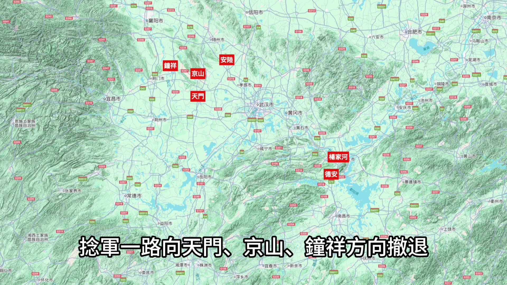
郭松林率領部隊窮追不捨，當他追到鐘祥附近羅家集的時候，進入到了捻軍的包圍圈，被捻軍打了個伏擊。這是捻軍慣用的戰術，誘敵深入，然後伏擊敵軍。郭松林的九個營被捻軍打掉一半，損失慘重，他自己身中七槍，勉強撿回一條命。這是李鴻章掛帥之後打的第一場大仗，就是一場大敗仗。緊接著，李鴻章手下的另外一名大將張樹珊敗的更慘。張樹珊是張樹聲的弟弟，張樹聲、張樹珊和張樹屏三兄弟率領的「樹字營」是淮軍的主力部隊之一。
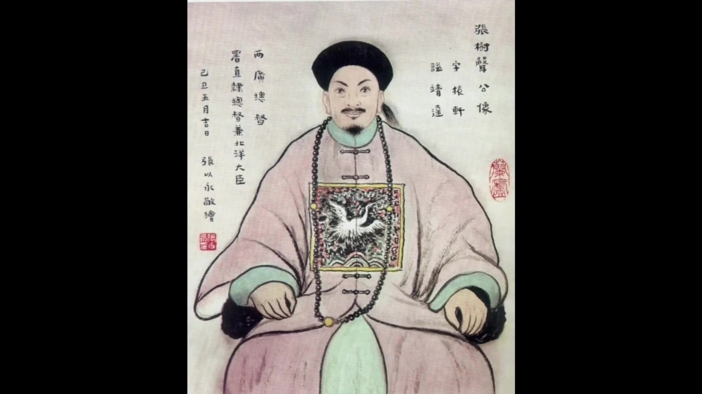
張樹聲後來先後出任過兩廣總督和直隸總督，在淮軍中的地位僅次於李鴻章。張樹珊雖然不像他哥哥做到那麼高的職位，但是他也做到了記名提督，並且賜號「悍勇巴圖魯」，是一品武職。在張家兄弟裡面，張樹珊是作戰最勇猛的一個。自從淮軍進入上海之後，他就打過無數硬仗。剿捻開始之後，樹軍被派到曾國藩的麾下作戰，張樹珊開始擔任游擊之師，游擊之師就是機動部隊，主要任務是負責追剿捻軍。追剿捻軍比防守部隊要辛苦的多，但是如果只是辛苦倒也沒什麼，關鍵是他們成天跟在捻軍後面東跑西顛，追又追不上，打也打不著，有勁沒地方使。李鴻章掛帥之後，指揮各路部隊向湖北臼口剿捻，張樹珊也率領部隊到達湖北，這時候東捻軍又開始帶著他們兜圈子。
01:00:01
一會從黃岡奔到棗陽，一會又從黃州奔向德安，張樹珊追的十分惱火，他也犯了僧格林沁同樣的錯誤。
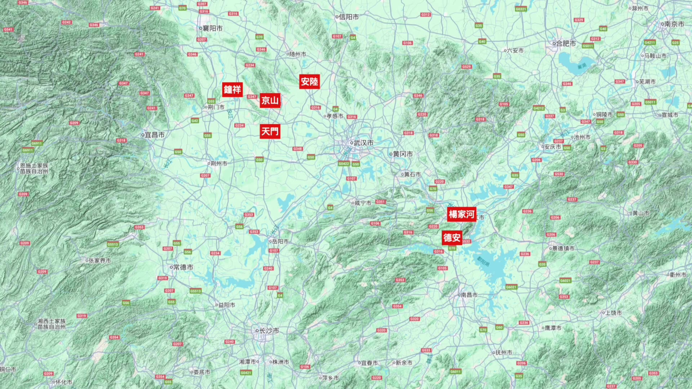
張樹珊在追擊的時候得到消息，說捻軍大部隊正在向德安進發，距離德安只有30多里。張樹珊趕緊率領部隊奔向德安。這時候淮軍的另外一支主力盛軍也得到消息，盛軍比樹軍還提前一步趕到德安。盛軍是周盛波的部隊，周盛波在胡家店一帶和捻軍相遇，他們跟捻軍打了一仗。捻軍騎兵發起猛烈衝鋒，但是盛軍的西式武器非常精良，盛軍的大炮小炮連環轟擊，捻軍直接被轟退了。捻軍往後退，盛軍追了八九里路，之後當天夜色已深，周盛波不敢貿然深入，他就讓部隊紮營休息。這時候張樹珊率領部隊趕到了，他和周盛波會合。第二天兩支部隊一起追擊捻軍。
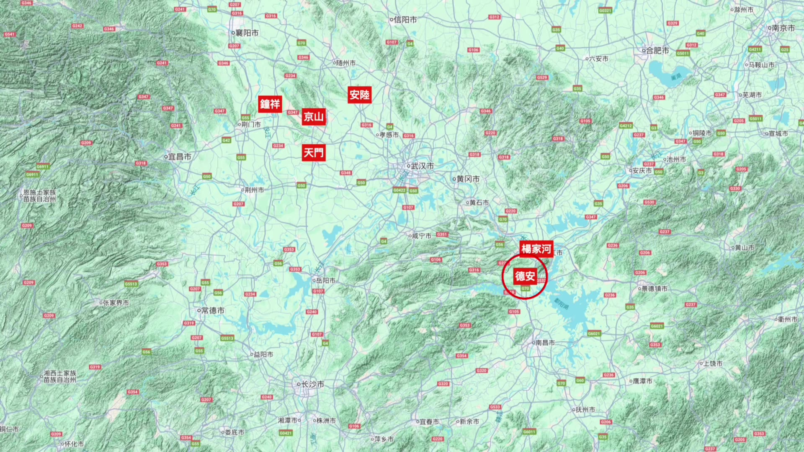
追到德安王家灣的時候，有探子來彙報說捻軍主力正在前方不遠處集結，東捻軍領袖賴文光和任化邦都在。張樹珊主張立即追剿，周盛波卻說不能冒進。周盛波說郭松林剛敗不久，敵軍非常狡詐，我軍的各部正在趕來的路上，我們不如等他們都到了再一起圍殲。但是張樹珊不聽，張樹珊認為兵貴神速，機不可失，他獨自率領部隊繼續往前追。
追了五六里路之後追到了新家閘（湘潭市、株洲市），他看到捻軍正駐紮在揚家河東岸，捻軍的人數非常多。捻軍這麼多兵力按常理來說張樹珊應該有所顧忌，但是張樹珊好不容易追到捻軍，他生怕捻軍一轉眼又跑沒了，他當即下命令讓他率領的6個營左右夾擊，他自己率領親兵營居中向敵軍發起衝擊。捻軍一開始看到樹軍來勢凶猛，第一反應是迅速逃跑，跑了一段之後呀，他們發現只有樹軍的6個營沒有更多的追兵，他們乾脆就不跑了，掉頭回來包抄，捻軍和樹軍展開一場殊死搏鬥，從下午一直打到半夜，樹軍被捻軍團團包圍，多次突圍沒能成功，在亂戰之中張樹珊的親兵營傷亡殆盡，張樹珊自己也戰死沙場。郭松林戰敗，張樹珊戰死，半個月之內李鴻章接連遭遇兩次大敗，可以說是出師不利。其實李鴻章的這種情況曾國藩早就經歷過，他沒像李鴻章敗的這麼慘，曾國藩當年就說過，他說人們都知道捻軍善於逃跑。
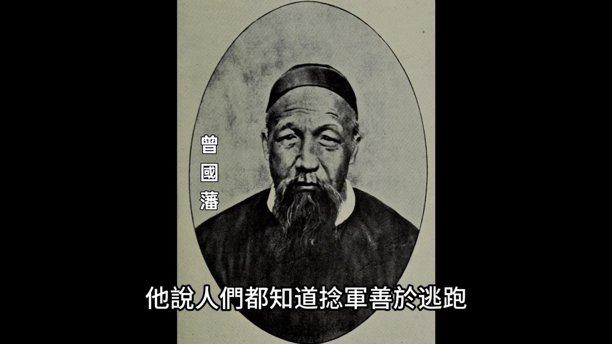
只怕打不著捻軍，要我說是不怕打不著，就怕打不贏，捻軍的戰鬥力很強。
通過曾國藩的評價，我們能看出來捻軍不僅善於逃跑，也能打硬仗，湘軍淮軍最厲害的將領碰上捻軍，他都認為能不能打贏還是未知數。接下來一仗印證了曾國藩的說法，鮑超和劉銘傳碰到捻軍跟捻軍打了一場著名的戰役尹隆河之戰。
李鴻章打了兩場敗仗之後，他繼續調集大軍追擊包圍捻軍一帶集結，當時捻軍在臼回，李鴻章讓鮑超率領霆軍從西向東進攻。兩支主力部隊從兩個方向夾擊捻軍，捻軍剛打了兩場勝仗，也是士氣大振，他們決定退守尹隆河跟清軍來一場決戰。鮑超和劉銘傳的合作當時有一些問題，倒不是說他倆有矛盾，就是兩個人都是悍將，當時很多人都把他們兩個並列比較，他們之間就有一種競爭的心態，互相瞧不起。
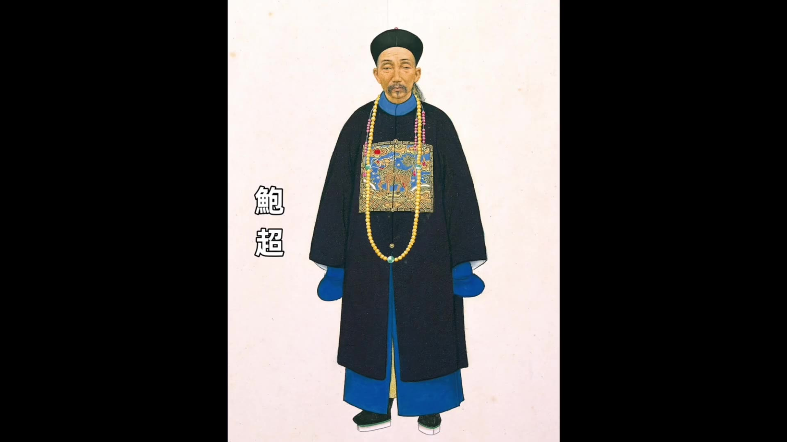
鮑超是太平天國戰爭以來戰功最多的悍將，他瞧不起鹽梟出身的劉銘傳，在他眼裡面劉銘傳就是個晚輩不配跟他並列，劉銘傳也看不起鮑超，劉銘傳認為鮑超就是一個有勇無謀的匹夫。劉銘傳的銘軍有上萬人，他們配置的西洋槍械達到四五千支。銘軍配置的西洋武器不僅是淮軍裡面規模最大的，也可以說是整個清軍裡面規模最大的，所以他認為鮑超已經是過去式了，所以劉銘傳和鮑超兩個人就有一種相互較勁的心理。鮑超和劉銘傳約定在第二天辰時（也就是上午7點到9點）兩軍同時發起攻擊，第二天清晨。
劉銘傳為了搶奪功勞，他擅自提前一個時辰在卯時發動進攻，他仗著自己兵強馬壯武器精良，想在鮑超到來之前擊敗捻軍，到時候鮑超來了剛好可以顯示自己的威風。沒想到劉銘傳剛一出擊就被捻軍給耍的團團轉，任化邦先分出騎兵1,000人向北渡河繞到銘軍後面襲擊銘軍的後路，劉銘傳害怕後面的輜重被襲擊，他分出1/3的兵馬立刻回援，還剩下2/3的兵力用於進攻。
01:05:01
捻軍三名主將分三路迎敵，牛宏升負責中路，賴文光負責右路，任化邦負責左路。銘軍雖配置大量西洋武器，但主要使用恩菲爾德1853式前膛槍及其仿製版。此槍使用米尼彈時威力巨大，卻因射速過慢，在面對捻軍騎兵時成為致命缺點。當捻軍散開兵力時，前膛槍的射速優勢無法發揮，銘軍陣型被擊潰。
劉銘傳部將唐殿魁、李錫增、田履安、吳維章等人先後陣亡，劉銘傳本人亦遭重創，最終丟失衣物帽子，被迫原地待援。此時鮑超趁捻軍收縮包圍圈之際突襲右翼，任化邦高喊「斬劉捉鮑」，欲全殲淮軍。鮑超率13,000人張開兩翼包圍捻軍，與劉銘傳倚仗西洋武器不同，鮑超擅長白刃戰。霆軍逼近至近距離，迫使捻軍馬隊無法衝擊，雙方短兵相接，戰鬥激烈。最終霆軍逐漸佔優，捻軍遭重創。
尹隆河戰役結束後，捻軍損失近8,000人，被俘8,000餘人及5,000多匹騾馬，東捻軍元氣大傷。若非鮑超及時救援，劉銘傳銘軍將遭全殲，郭松林、張樹珊部隊亦已覆滅，李鴻章政治前途堪憂。
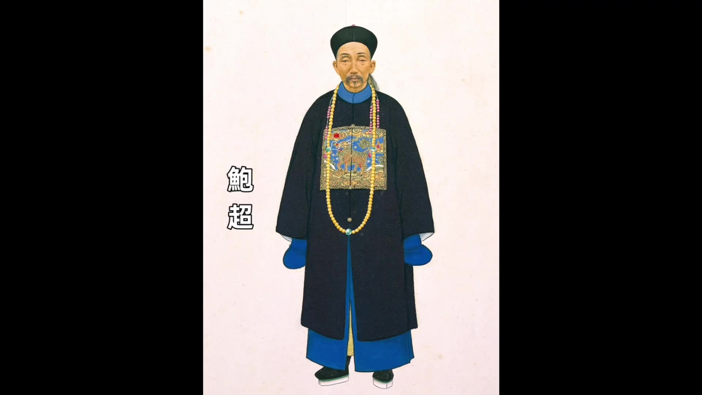
鮑超救出銘軍2,000餘人，奪回洋槍400餘支，並找回劉銘傳遺失的頂戴花翎。為羞辱劉銘傳，鮑超命士兵敲鑼打鼓將頂戴花翎送回淮軍大營。
劉銘傳心生怨恨，向李鴻章誣陷鮑超，聲稱鮑超未按時進攻致銘軍孤軍奮戰。李鴻章未查證即上奏參劾鮑超。鮑超在戰後追擊捻軍，俘虜任化邦、賴文光妻室等，戰績卓著。
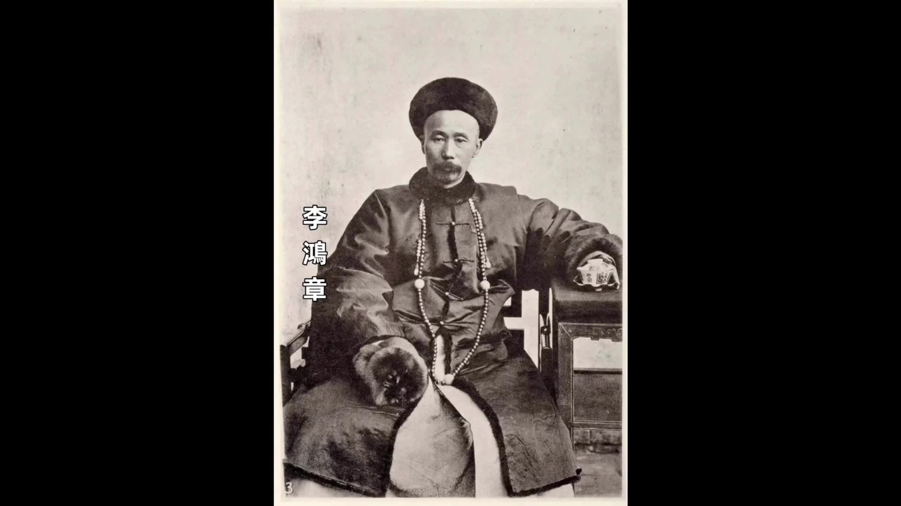
鮑超原期待朝廷嘉獎，卻遭嚴厲斥責，舊傷復發後請病假。李鴻章為節制鮑超，請求解散霆軍30營。朝廷順勢解散霆軍，湘軍最後主力至此消亡，淮軍成為清廷最強軍隊。
1867年春，東捻軍從湖北突圍，經河南南陽北上，進入膠萊富庶地區。
01:10:00
李鴻章在遭到接二連三的失敗之後，終於體會到了曾國藩的高明。當時曾國藩用「河防」戰術的時候，李鴻章嘲笑老師迂腐，譏諷老師學習秦始皇造長城。到現在他才明白老師的高明，看起來笨的方法往往就是最有效的方法。李鴻章開始學習老師的「河防」戰術，他也開始沿著河道築長牆圍困敵人。李鴻章發現捻軍進入膠萊一帶之後，他決定實施「倒守運河」策略。
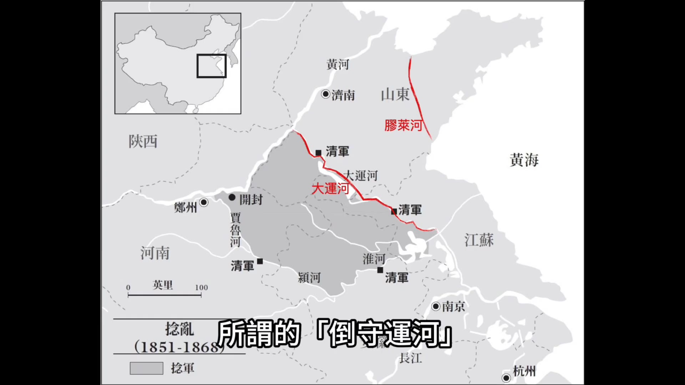
所謂的『倒守運河』（1851-1868），他設下了兩道防線（1851-1868），他要利用這道防線把捻軍困在膠萊地區加以殲滅，第二道是運河防線。供豇以運用運河防線繼續圍殲，李鴻烹親鳥巡查運河沿途勘察監督修築艮牆。李鴻章把全部淮軍都調過來，兵力還是不夠，他只能給朝廷請示讓山東本地駐守的魯軍一起協防。朝廷同意之後，李鴻章和山東巡撫丁寶楨會晤。
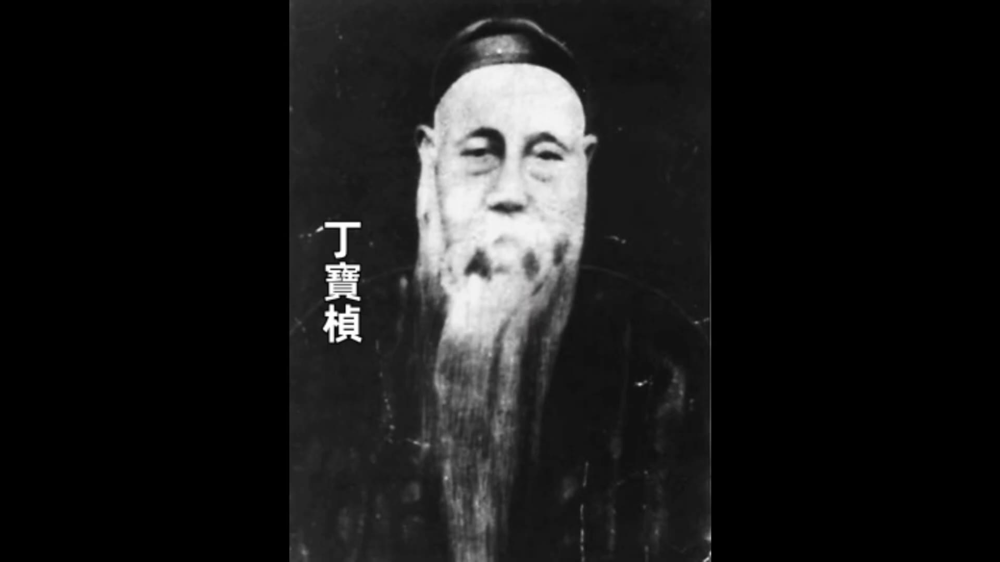
李鴻章跟丁寶楨劃定好了需要他防守的區域，丁寶楨答應的是很好，當場應允。沒想到沒過多長時間，李鴻章就收到消息。
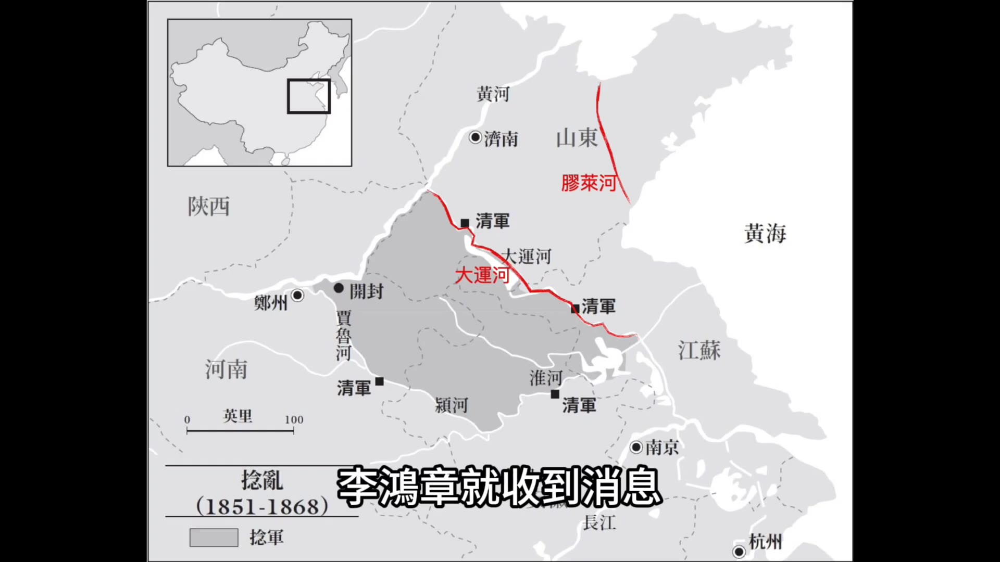
捻熏在膠萊防線北端突破防線成功渡河，這段防線正好是丁寶楨防守的範圍。李鴻章幾個月的精心籌劃化為泡影，他非常生氣，很明顯問題是出在丁寶楨身上。
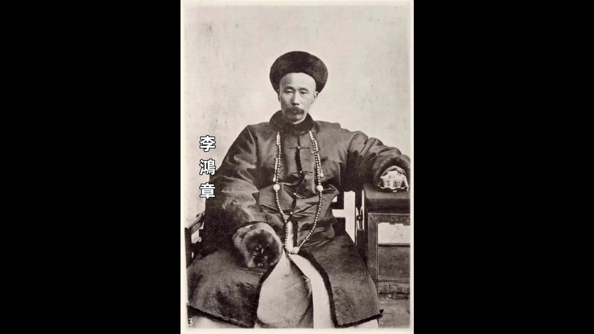
李鴻章在跟丁寶楨會談的時候一再提醒他要加強膠萊北端的防線，丁寶楨卻應付了事。丁寶楨倒確實是派出了14個營的魯軍防守膠萊北端，但是首先14個營不夠，第三這些魯軍也沒做認真抵抗，倒是在捻軍突破防線之後他們反倒是來勁了，大張旗鼓的追趕，唯恐捻軍跑的不快。對於魯軍的做法，李鴻章很快就看明白了。丁寶楨作為地方官，他不希望自己的轄區成為戰場，所以他陽奉陰違，表面上看起來是在圍堵捻軍，實際上他是在驅逐捻軍，他的用意只有一個，就是把捻軍驅逐出他的山東地盤，這是防線被突破的根本原因。
李鴻章非常惱火，他上奏拆參劾丁寶楨說丁寶楨慢師輕敵玩忽職守。可丁寶楨也不是好對付的角色，丁寶楨以牙還牙參劾李鴻章說李鴻章調度不利，他還把責任推在淮軍身上，說潘鼎新部行動遲緩救援不利。李鴻章雖然是欽差大臣剿捻統帥，但是他管不了丁寶楨，丁寶楨作為地方大員根本不買他的賬。丁寶楨不僅強勢而且精明，李鴻章為了加強膠萊防線，他跟朝廷提出來要求把山東的地方軍交給他統一調遣，丁寶楨立刻反對，丁寶楨說正確的做法應該是把進入到山東境內的淮軍由他統一指揮，這樣更有利於剿匪。兩個人你來我往，一封又一封奏折相互指責攻詰，最後吵的朝廷不耐煩，朝廷各打五十大板，下令把李鴻章「交部議處」，把丁寶楨摘去頂戴革職留任。
丁寶楨我們多說一句。
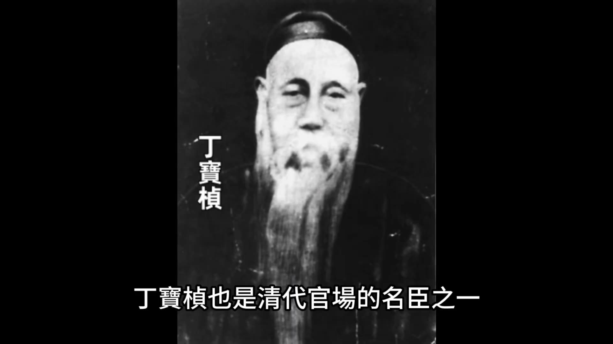
丁寶楨也是清代官場的名臣之一，他幹過幾件震動朝野的大事，其中有一件是殺安德海，安德海是慈禧的貼身太監，有一次安德海奉慈禧的命令南下採辦，一路上他作威作福惹得民間怨聲載道，但是他這一路沿途所有的官員都知道安德海是慈禧身邊的紅人，誰也不敢說什麼，連他路過直隸的時候曾國藩都沒說什麼，但是就當他到達泰安的時候，丁寶楨出乎所有人的意料直接殺了安德海，他殺的理由是太監出行有違祖制。安德海被殺之後慈禧大怒，但是最終慈禧還是忍住了沒懲罰丁寶楨。丁寶楨就是這麼個人，強硬的連慈禧身邊的紅人都敢動，雖然這是後來發生的事，跟李鴻章發生衝突的時候還沒發生，但是丁寶楨的強硬，李鴻章算是領教到了。李鴻章為了剿捻大計他也不認死理，他開始主動的緩和跟丁寶楨的關係，李鴻章主動緩和之後，丁寶楨也是一個吃軟不吃硬的主，他也以和解的姿態做出回應。兩人和解之後，丁寶楨開始認真合作。
剛解決了丁寶楨的問題，朝廷中又有很多人對「河防」戰術提出質疑，他們認為這個方法曾國藩曾經用過，當時就沒成功，現在李鴻章又用，浪費了大量的勞力也沒看到取得什麼效果，是不是方法不對。李鴻章趕緊上奏折解釋。
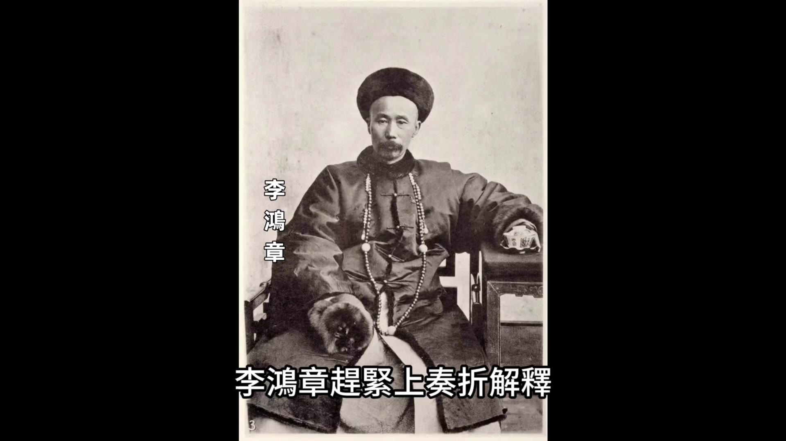
他說要剿滅捻軍「河防」是最好的方法，請朝廷相信他現在最需要的是耐心，千萬不能更改策略，否則將前功盡棄，軍心也會動搖。在幾個月之前，李鴻章還是「河防」戰術的嘲諷者。
01:15:01
現在他已經變成了河防戰術的堅定捍衛者，慈禧也下旨支持李鴻章，因為要是再把李鴻章換下來，朝廷實在是沒有人可以用了。搞定朝廷的非議之後，李鴻章一邊加強「河防」建設，另外一邊對捻軍展開猛烈的攻勢。但是還是被困在李鴻章的第二道防線以內，也就是運河防線以內（1851-1868在這麼小的地界，捻軍無論怎麽騰挪總會被淮軍追到）。李鴻章麾下以劉銘傳為首的4支游擊部隊以騎兵對騎兵猛烈攻擊，捻軍損失慘重。捻軍在山東境內頻頻遭受重創，被迫向江蘇北部移動，劉銘傳緊追不捨。在兩軍交戰過程中，銘軍擊中了任化邦的右耳，儘管任化邦的傷勢不嚴重，但是首領受傷，捻軍的士氣低落。任化邦受傷之後率領捻軍迅速退到蘇北贛榆，銘軍一路追到贛榆。當天大霧瀰漫，他們追著追著發現好像失去了捻軍的蹤跡，突然間殺聲震天，捻軍騎兵從四面八方殺過來，這是任化邦慣用的戰術，無論是高橋寨還是尹隆河，他都是靠這招頻頻得手，這次他也是使用這招來對付劉銘傳。劉銘傳趕緊布陣跟捻軍對決，銘軍被打個措手不及，本來落在下風，突然間捻軍內部一陣混亂然後向後潰退。劉銘傳看到捻軍潰退，他雖然不知道什麼原因，但是也下令追擊，結果是銘軍打了一場大勝仗，剿滅了大量的捻軍。捻軍為什麼會潰退？根據事後得知是捻軍的領袖任化邦中彈身亡，任化邦不是被清軍打死的，而是被自己內部的叛徒打死的。劉銘傳收買了捻軍內部一個叫潘貴升的人，答應事成之後給他三品頂戴和2萬兩自銀，於是潘貴升在亂戰中暗殺了任化邦。暗殺成功之後他大喊「魯王死了」，魯王就是任化邦，捻軍士兵聽到魯王死了，陣腳大亂開始潰退，導致銘軍大勝。任化邦的死是捻軍的重大損失，在東捻軍裡面，任化邦和賴文光可以說是最佳搭檔，任化邦善戰，賴文光善謀。任化邦死了，東捻軍開始一蹶不振。1867年12月淮軍主力在壽光追到捻軍，給捻軍來了一場致命打擊，這一仗東捻軍幾乎被打光，剩下的殘部只剩數百騎，他們跟隨賴文光衝破六塘河沿著運河南下奔跑，最後他們在揚州瓦窯鋪一帶被圍。到此為止，東捻軍全軍覆沒。
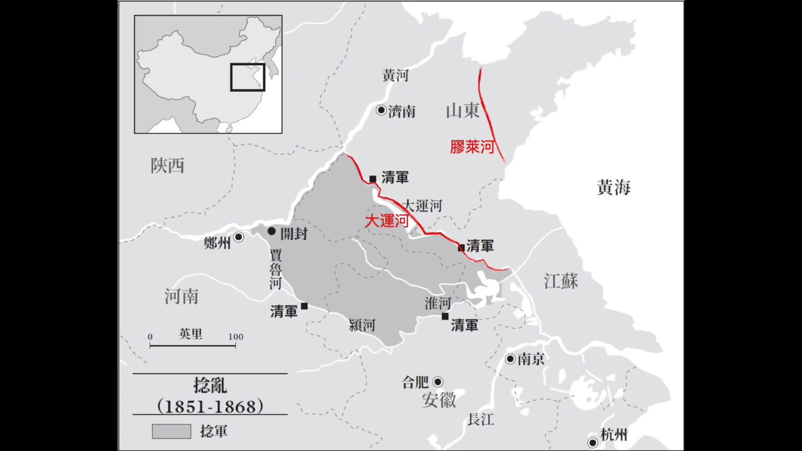
大家好，今天我們講左宗棠和西捻軍的故事。西捻軍的首領是張宗禹，張宗禹率領西捻軍進入到陝西境內，他到陝西境內是想跟陝西的回民軍相聯合，聯合之後壯大力量對付清廷。陝西的回亂當時已經很嚴重，張宗禹到陝西境內之後碰上的是什麼處境？他跟回民軍的聯合有沒有成功？還有朝廷派左宗棠到陝甘平定叛亂，左宗棠碰上張宗禹，兩個人鬥智鬥勇，到底誰能勝出？這是今天我們要講的內容。
在講西捻軍進入陝西之前，我們先說一下陝西當時的局勢。陝西的回民造反是在1862年開始的，1862年正是清廷和太平天國打的最火熱的時候，清廷把陝西、甘肅、青海等地區的大量的清軍抽調到跟太平天國打仗的前線，這樣西北的兵力就很空虛，這就導致回民造反之後情況變得一發不可收拾。清廷一開始的策略是招撫，讓團練大臣張芾去招撫回民，結果是張芾被殺，情況變得更加嚴重。招撫既然不成功，清廷只能鎮壓，鎮壓的話陝西當地的清軍肯定不夠用，清廷任命勝保為欽差大臣，讓勝保到西北鎮壓叛亂。勝保打仗很一般，他並不擅長打仗，他擅長的是招撫一部分敵人，然後利用敵人之間的矛盾分化敵人。他到陝西之後發現當地的回民和漢人之間的互殺已經相當慘烈了，他根本沒有分化敵人的餘地，只能武力鎮壓。勝保跟回軍打了幾場仗都以失敗告終，然後他用盡全部力氣打開一條通路進入到西安城。
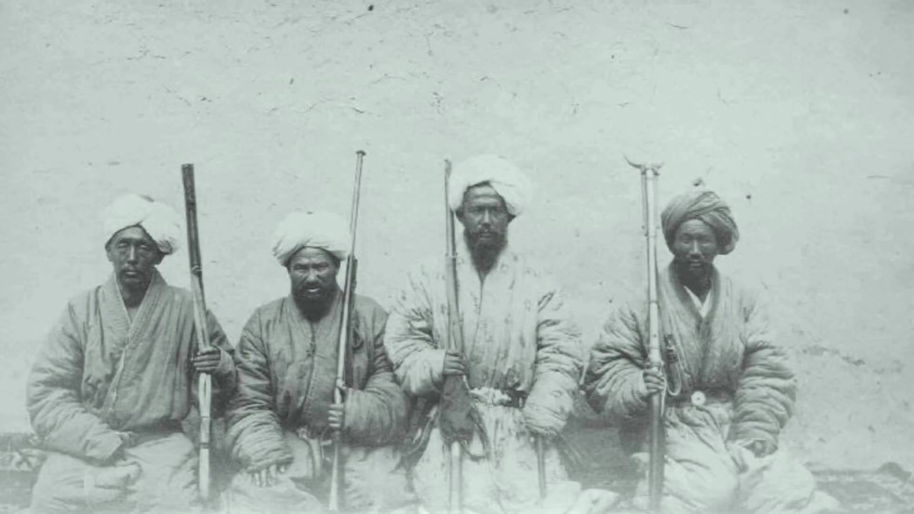
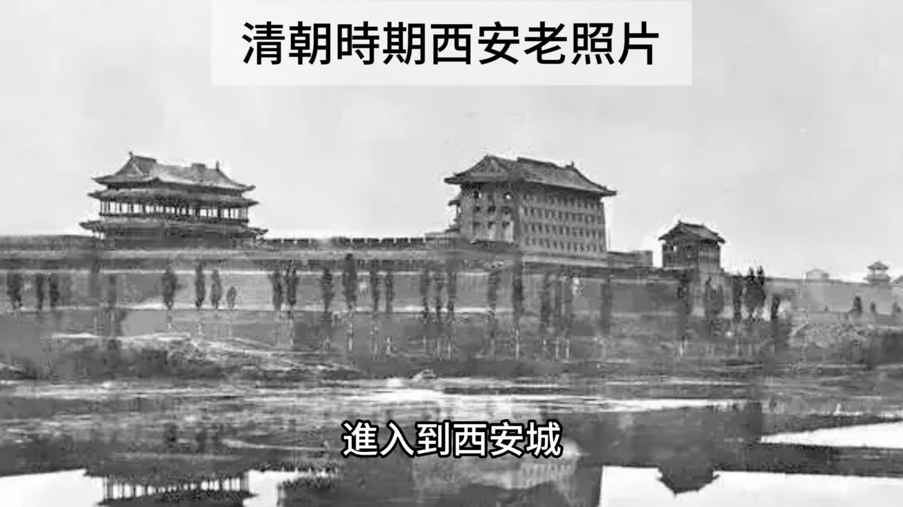
01:20:00
他們分頭圍攻西安周邊縣城，各縣官民將求援信一封封送至西安。勝保卻閉門不出，堅決不派兵增援。自從回民叛亂後，陝西官民皆期盼清廷救援，卻未料清廷派來的竟是勝保，令官員們大失所望。陝西各級官員聯名上奏彈劾勝保，請求朝廷再派救兵。慈禧收到奏折後，深知勝保難以解決問題，遂決定換將。
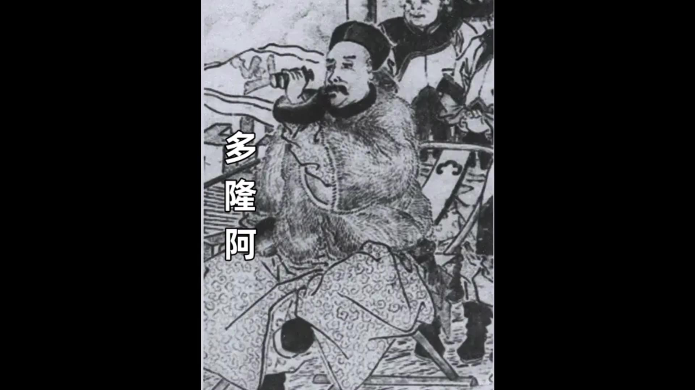
改任多隆阿為欽差大臣，督辦陝西軍務，並命劉蓉擔任陜西巡撫。多隆阿與劉蓉皆為湘軍名將，曾在太平天國系列中提及多隆阿的事蹟。
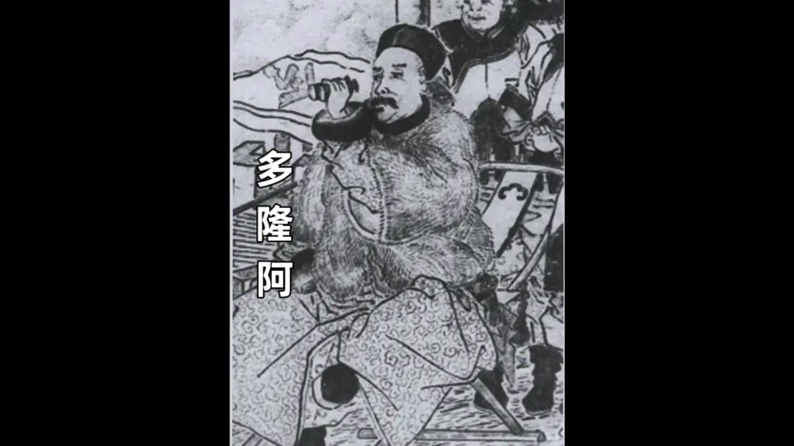
多隆阿善戰，與鮑超齊名，被稱為「多龍鮑虎」，是湘軍中戰鬥力最強的將領之一。劉蓉則為文人，為當時著名理學家，曾在曾國藩創辦湘軍初期擔任幕僚，協助處理錢糧事務。湘軍出征後，劉蓉亦開始帶兵，率領左翼多次擊退敵軍。後因「樊燮案」，左宗棠從湖南巡撫駱秉章幕府中推薦劉蓉接任，邀請其進入幕府。劉蓉能力強，駱秉章甚為倚重。
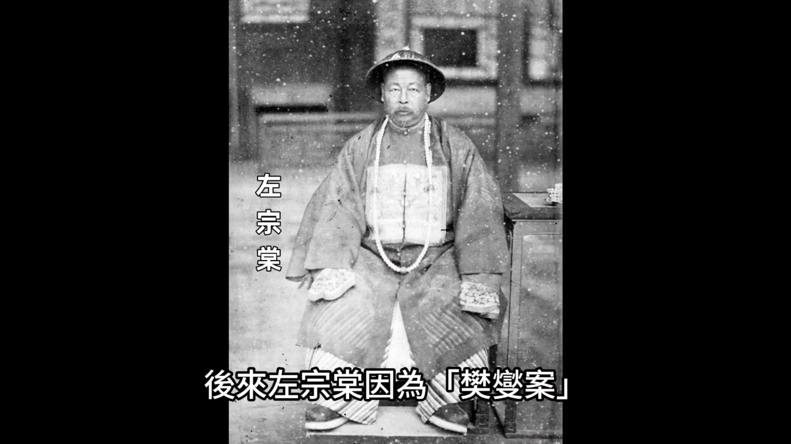
後朝廷調駱秉章至四川，亦將劉蓉帶走，保薦其出任四川布政使。在四川任內，劉蓉負責扼守大渡河，成功擊退太平天國翼王石達開率領的10萬大軍，迫使石達開投降，劉蓉因此聲名大噪，軍事能力獲朝廷認可，遂被派往陝西擔任巡撫，協助多隆阿。
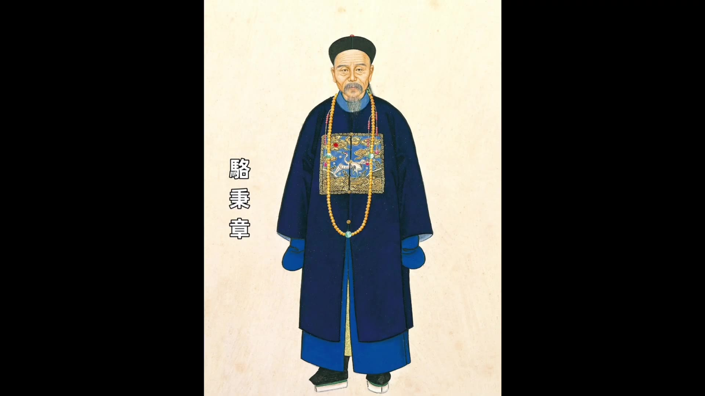
朝廷此次派往陝西的多隆阿與劉蓉皆為擅長打仗的大將。多隆阿行動迅速，接任後即率部將穆圖善、雷正綰、陶茂林、曹克忠等人帶往陝西，僅用半個月便穿越河南抵達陝西。其部隊雖僅一萬多人，但面對已達20多萬的回軍，仍具優勢。回軍雖人數眾多，但缺乏專業訓練與實戰經驗，僅靠人數與信仰作戰，戰術不成熟。相比之下，湘軍已與太平天國交戰十餘年，戰鬥力大為提升，武器亦從冷兵器轉為熱兵器。多隆阿部隊配置新式西洋武器，如雷正綰部裝備毛瑟槍，多隆阿更擁有阿姆斯特朗前膛炮，發射開花彈，能有效摧毀堡壘與土牆。
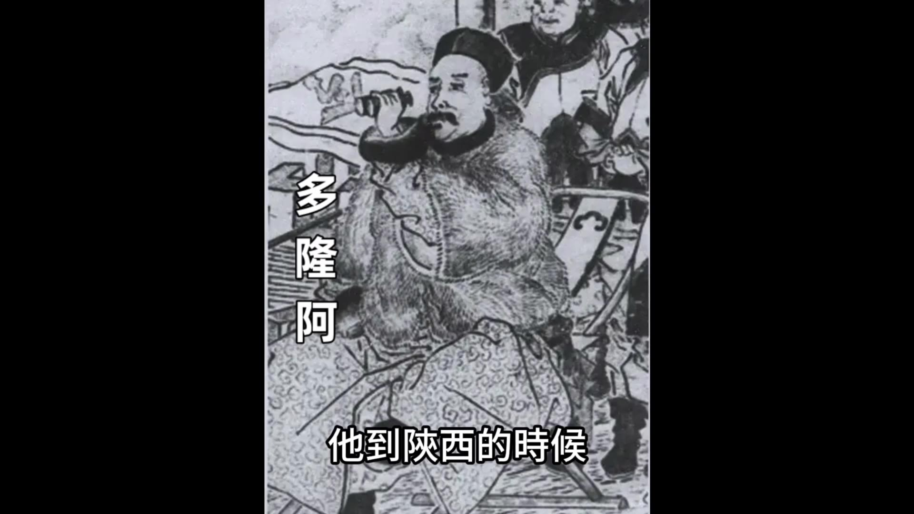
多隆阿的戰術亦隨武器升級調整，採用熱武器開路、步兵衝鋒、騎兵包抄的模式，此等武器為剛起義的回軍所未見，使其雖人數眾多，亦難敵湘軍。
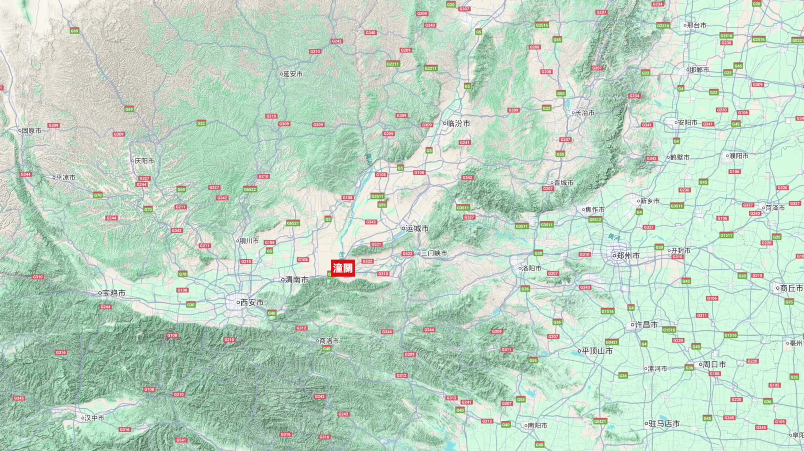
多隆阿於1862年11月進入陝西潼關，正式投入陝西戰場。不到一年時間內，他多次重創回軍，使其損失慘重。至1863年10月，回軍已不敢待在陝西，退往寧夏與甘肅地區。回軍逃出陝西後，多隆阿計畫進軍甘肅，徹底解決回亂。若按此進度推算，估計不需一年即可平定回亂。然而此時突發意外。
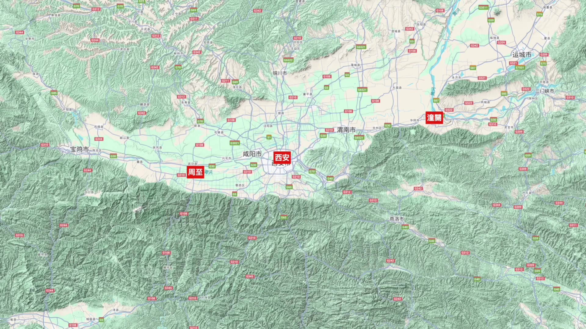
當時在陝西周至縣，有支由藍大順領導的叛軍。多隆阿原擬先解決此支叛軍，再進軍甘肅。以多隆阿軍隊的實力，解決此支叛軍本不困難。
然而多隆阿在城下觀戰時，被流彈擊中面頰，傷勢嚴重，最終不治身亡。其部隊隨即陷入混亂。
01:25:00
進軍甘肅的計劃也被迫暫停。多隆阿的死是滿清朝廷的重大損失，因為多隆阿是旗人，他是旗人裡面除了僧格林沁以外唯一有戰鬥力的大將。多隆阿死了之後，陝西的局面還是要處理，還是要有人接替多隆阿的位置繼續平亂。要是朝廷讓劉蓉或者讓多隆阿手下的頭號大將穆圖善接任他的位置繼續剿滅叛亂，但是朝廷呢，偏偏派了都興阿過來接替多隆阿。都興阿是滿清貴族出身，他是看到多隆阿已經把回民軍打得差不多了，他是來摘桃子的。為了這個機會，他上下打點，讓一些守舊派的滿人大臣給慈禧施加壓力，說現在漢人已經掌握了大部分軍權，多隆阿這支部隊千萬不能再落到漢人手裡，還得咱們滿人掌握比較好。
慈禧本來不相讓都興阿去陝甘，但是架不住滿大臣的壓力。為了平衡各方利益，她只能妥協同意讓都興阿去，但是她還是留了個後手。慈禧給都興阿的任命是「署理陝甘總督」，「署理」的意思就是代理或者是任職考察期，這說明慈禧對都興阿很不放心。都興阿到了陝甘之後果然是搞得一團糟，都興阿不僅打仗不行，他連後勤補給都搞不定。其實作為一個軍隊的主帥，最重要的任務還不是打仗，最重要的任務是搞定錢糧，就是軍餉和糧食。解決錢糧問題甚至比打仗還要重要。我們看曾國藩在統帥湘軍的時候，他無時無刻不在為錢糧的問題發愁，前方將士只管打好仗就行，但是作為統帥必須保障後勤。這點多隆阿深有體會，多隆阿就是以前他是在曾國藩的麾下作戰，他只管打好仗就行，他要能打好仗就能風光無限。但是到了陝西之後，他自己作為統帥必須獨自解決錢糧問題。陝甘是糧食困難區，別說在戰亂時期陝甘的糧食都得靠外省補給，現在回漢互殺，大面積土地荒廢，陝甘的糧食根本就不夠吃。多隆阿在的時候他為了軍隊的後勤補給都是操碎了心，還好他是湘軍出身，他往回求助總能要來點補給，這才勉強讓軍隊能吃飽飯。現在都興阿來了，都興阿完全解決不了錢糧問題，他一弄不到錢，二弄不到糧，三沒有全盤的作戰計劃。短短幾個月他就把多隆阿打下來的優勢全盤搞砸，他打了好幾個敗仗不說，因為沒飯吃搞得好幾支部隊都嘩變。
多隆阿留下來的幾支主力軍基本上都被消耗沒了，他又寫信給朝廷裡面的關係，讓他們運作幫他調離陝甘。朝中的滿人大臣運作之後，都興阿果然被調離，他被調到東北當了個盛京將軍。陝甘被都興阿耽誤了大半年，局面已經完全逆轉，多隆阿留下來的幾支主力部隊都崩潰了，而且從陝西跑到寧夏甘肅的回民軍也站穩了腳跟。
朝廷下一個派來的是楊岳斌，楊岳斌原名叫楊載福，楊載福也是湘軍名將。楊載福改名字是因為他名字裡面有個「載」，同治皇帝登基之後，同治叫載淳，曾國藩上奏折給楊載福改名叫楊岳斌。楊岳斌是湘軍的水師統帥，是有真本事的大將。朝廷也是咨詢了曾國藩的意見，最後決定把楊岳斌調過來讓他出任陝甘總督。楊岳斌到了陝甘之後，他發現這裡的情況已經完全失控，不僅陝西生產秩序完全崩潰，連甘肅的秩序也崩潰了。因為陝西回民幾十萬大軍被多隆阿打到甘肅，吃飯是個大問題，甘肅產的糧食都不夠本地人吃的。這些從陝西過來的回民軍和流民為了吃飽飯，他們只能繼續屠殺當地甘肅的漢人，甘肅的回民也被裹挾著造反，跟漢人形成完全對立的狀態，所以陝西甘肅的局面都已經慘不忍睹。
楊岳斌發現自己沒有錢、沒有糧，他甚至連兵都沒有，他並沒有帶軍隊，他只帶了自己的親兵。他以為陝甘會有多隆阿留下的部隊，還有本地的駐軍，沒想到多隆阿的軍隊已經被都興阿給霍霍沒了，陝西本地也沒有什麼軍隊，只有1,000多駐軍，根本就不夠用。楊岳斌一開始還努力的挽回局面，他跟劉蓉一起向湘軍的大佬們求助，想讓東南省份直接提供糧食給西北地區，但是情況非常不妙，需要經過安徽、湖北或者河南一帶，這一帶是捻軍活躍的地區，當時僧格林沁正在中原剿捻，所有的糧草都得先供給僧格林沁，再加上送到甘肅的道路也是時斷時續，最終能運到的糧食實在是杯水車薪。
楊岳斌是巧婦難為無米之炊，他實在是解決不了這個困局，只能向朝廷遞交辭呈，辭職不幹了。
01:30:00
兩年之內朝廷接連派了勝保、多隆阿、都興阿、楊岳斌四位欽差大臣到西北，都解決不了陝甘的問題。朝廷認為必須派出一位更重量級更厲害的人物到西北，這樣才能解決問題。這次慈禧親自選將，她選的是左宗棠。慈禧選左宗棠有多方面考慮：首先，通過前面派去的幾個欽差大臣，一般人根本搞不定，連楊岳斌都辭職了；她必須派一個更有本事的人去。當時符合這個條件的人並不多，旗人裡面找不到，漢人大臣裡面也只有曾國藩、李鴻章和左宗棠可以。曾國藩和李鴻章還要留在中原剿捻，所以能派去的人只有左宗棠。另外，慈禧也不想讓李鴻章淮軍一支獨大，李鴻章和左宗棠一直有矛盾，慈禧也是要重用左宗棠，讓漢人的軍隊之間有個相互制衡。所以朝廷最終決定任命左宗棠當陝甘總督，派他去西北鎮壓回亂。
左宗棠到西北後，他接到上諭之後並沒有立刻出發，他先是仔細研究了西北的局勢，然後四處找錢。他找錢是為了買糧買軍火。左宗棠跟多隆阿跟楊岳斌不一樣，多隆阿和楊岳斌都是能領兵打仗的大將，但是他們並沒有當過真正的統帥。左宗棠是真正的統帥，他知道後勤補給的重要性。左宗棠先是準備了足夠的糧草，然後打通了後勤的補給通路，然後他還要再找錢。再找錢是為了買洋槍洋炮，錢不夠他甚至讓胡雪岩跟英國洋行借了120萬兩。做好充分的準備之後，左宗棠才率領著自己的楚軍向西北進發。左宗棠率軍朝西北進發的時候，也正是張宗禹率領西捻軍進入到陝西的時候。
張宗禹比左宗棠提前進入陝西，當時陝西境內是劉蓉在苦苦支撐。楊岳斌辭職之後，劉蓉率領僅剩的1萬多人駐紮在隴州。
他駐紮在隴州是為了防止陝西跑到甘肅的回民軍再打回來。陝西回民軍在甘肅吃不飽飯，確實有打回來的想法，但是他們被多隆阿給打怕了，怕回來又吃敗仗。劉蓉也是不好對付的，讓陝西回民也是很顧忌。現在張宗禹率領捻軍進到陝西了。
捻軍從束面過來，回民軍從西面過來，兩軍遙相呼應。劉蓉一下子處在被夾擊的形勢。面對張宗禹帶來的5萬多騎兵，劉蓉不敢怠慢，他集中能調動的一切部隊開始圍堵追擊。劉蓉的兵力本來就不多，他不敢分兵，他把所有的兵力都集中在一起追擊捻軍，他從陝南一路追到關中，但總是比捻軍慢半拍。
終於在西安城外的灞橋附近，劉蓉手下的大將感覺快追到捻軍了。那天天氣寒冷，雪下的很大，士兵的身上都披著雪花。劉蓉部隊士兵的槍管和炮管裡面都結冰了，這些新式武器一旦結冰就會變成燒火棍，完全不能用了。就在這時候，在灞橋兩邊的樹林里衝出來幾萬名捻軍，捻軍揮舞著馬刀衝向劉蓉的湘軍。30個營的湘軍1萬多人陷入到敵軍的埋伏手裡面，熱武器又不能用，完全變成了待宰的羔羊。這一仗捻軍大勝，劉蓉的湘軍被殲滅了1萬多人，包括他手下的大將楊得勝、蕭集山、蕭長青等人。這些大將都是曾經打敗過石達開的名將，在這一戰中全部陣亡。這是捻軍進入陝西之後打的第一場仗，就是一場大勝仗。捻軍用的還是他們的老戰術，就是先帶著敵人跑，他們再找一個合適伏擊的地方誘敵深入，然後衝出來一舉殲滅敵軍。只不過這次他們還有天氣的幫助，突然天降大雪，劉蓉湘軍的武器都被凍住了。捻軍擊敗劉蓉之後，跟陝西的回民軍會合，兩軍開始聯合作戰。回民軍對陝西的地形熟悉，給捻軍充當嚮導，捻軍戰鬥力強大，兩邊優勢互補，進入合作的蜜月期。
劉蓉的戰敗讓朝廷非常震驚，朝廷對劉蓉嚴加斥責，並且把他革職。朝廷把劉蓉革職之後，催促左宗棠讓他盡快到陜甘上任。左宗棠這時候正在前往陜甘的路上，他還沒走到陝西就收到了劉蓉戰敗的消息。
左宗棠收到消息之後，他第一反應跟所有人都不一樣，他認為捻匪一定要跑，他說我們要盡全力把捻匪堵在陝西，不能讓他們跑了。其他人都認為捻軍既然剛打了個大勝仗，現在還跟回民軍聯合到一起了，他們一定會攻打省城西安，為什麼會跑呢？
01:35:00
左宗棠會這麼判斷當然有他的道理。左宗棠接到任命之後，無論朝廷怎麼催促他都不動身，他推遲了半年多沒動身，一方面是做好充足的後勤準備，還有一方面是他對陝西的情況進行了充分的調研。他知道陝西正在面臨一場前所未有的大飢荒。陝西本地生產出來的糧食本來就不多，在回亂發生之後，先是回民大量的屠殺漢人，然後是多隆阿打赢了回軍之後，漢人又大量的屠殺回民。雙方相互屠殺之後，一下死了幾十萬人，剩下沒死的也都逃跑了。陝西農村一下子減少了上百萬人口，造成整個關中地區的農業生產停頓。現在還留在陝西的本地人的狀態都是吃了上頓沒下頓。張宗禹一下子率領5萬多大軍進入到陝西，他5萬多人肯定搶不到足夠的東西吃。左宗棠的判斷是對的，張宗禹從河南進入陝西，他沒敢走潼關。
因為潼關有清軍的重兵把守，他是翻過秦嶺進入到華陰縣，走入到陝西境內。從河南這一路走過來，張宗禹就感覺到能搶到的糧食越來越少。一開始他還以為是因為他們走的是山路，在山區裡面的村民困難，沒想到等他們翻山越嶺進入到關中平原之後，他發現情況一點都沒改變。即使他們打下一個村寨，能找到的糧食也不多。捻軍打村寨其實並不容易，他們並不擅長攻城，因為他們沒有大炮。即使是最普通的村寨的寨牆，通過架雲梯，所以每攻打一個村寨，他們都得死傷幾百個人。陝西這邊還民風彪悍，抵抗特別強烈，尤其是現在人人都吃不飽飯，為了保護自己的糧食，村民更是拼了命的守衛村寨。所以捻軍打村寨並不容易。好不容易打下來一個村寨之後，在村子裡面挖地三尺也找不到多少糧食。這時候張宗禹就有點慌了。他們在申原打仗的時候呀，無論是走在哪，找到足夠吃的肯定還不是問題，他還從來沒為吃不飽飯發這麼大愁。捻軍跟清軍不一樣，清軍有大後方，左宗棠打通了運糧通路之後，他的後勤補給可以源源不斷的運過來。捻軍沒有大後方，捻軍只能靠沿途搶劫。所以張宗禹進入到關中之後，他就下定決心，此地不能久留，必須要盡快離開。所以打不打西安對張宗禹來說價值不大，即使費勁打下來了，他們也沒辦法把陝西作為根據地發展。所以左宗棠的判斷完全正確，張宗禹並不想在陝西久留。
左宗棠進陝西他率領的部隊除了他的楚軍之外，還有一支湘軍是劉松山率領的老湘營。東西捻軍分裂之後，得知西捻軍朝陝西方向走了，曾國藩想讓他手下的湘軍去陝西支援。一聽說要去西北，大部分湘軍的將領都不願意去，只有劉松山同意去。劉松山率領他的17個老湘營在1867年2月4號到達西安，他比左宗棠到的都快。
左宗棠還沒見到劉松山，他就給劉松山下達了第一個作戰命令，他讓劉松山無論如何都要守住潼關，不能讓張宗禹給跑了。
劉松山守住潼關之後，果然他在潼關附近發現了張宗禹捻軍的痕跡。張宗禹是故意吸引劉松山，張宗禹以前跟劉松山交過手，他知道劉松山厲害。劉松山部隊配備有大量的新式武器，而且劉松山這次帶來的有17個營，17個營數量將近1萬人。張宗禹想先甩掉劉松山，然後他再考慮往哪個方向跑，他還是採用誘敵深入的戰術。
張宗禹擺出一副全力進攻大荔的架勢，大荔距離潼關不遠，他是故意吸引劉松山來追。劉松山來追他就可以溜著劉松山跑，像對付劉蓉一樣，等劉松山的部隊疲的時候，他再誘敵深入，然後進行圍殲。劉松山看到捻軍的痕跡之後，果然來追。劉松山留了一部分的兵力守衛潼關，然後他親自率領主力部隊追擊張宗禹。
張宗禹帶著劉松山往渭南方向跑，他故意經常留下一點部隊讓劉松山給迫上，然後打就潰退，裝作打不過的樣子繼續往前跑。劉松山就這麼追著張宗禹跑，一路上打了好幾場小勝仗，每次都是把敵人打跑，但是並沒有殲滅。劉松山把自己的戰況實時彙報給左宗棠，左宗棠知道之後，他命令劉松山說追擊可以，但是不要越過渭南，一旦越過渭南，在西安周圍的平原地區就有被敵軍包圍的危險。
左宗棠告訴劉松山一定要等他入到陝西之後再做打算。劉松山收到左宗棠的命令之後，雖然他不太情願，因為這一路他們打的都是勝仗，但最終他還是決定執行命令，讓部隊停止追擊。
01:40:00
劉松山一停，張宗禹就著急了。張宗禹策劃一路就等著最後圍殲劉松山，但他又不能回去跟他們打，一回去就露餡了。張宗禹看劉松山不上當，他就又想了個方法，他去圍攻西安。
他圍攻西安，劉松山一定要救。劉松山收到西安的告急文書，他就率領部隊趕到西安城下。張宗禹已經撤退到了西安東北方向的富平縣。到富平縣現在他既可以直撲潼關從潼關回到河南，也可以渡過黃河進入山西，或者他也可以考慮繞路南下進入四川。不管是走哪條路，劉松山都追不上他們了。只是張宗禹還沒來得及高興，他的探馬給他送來情報，情報說左宗棠的先鋒部隊劉典已經進入潼關。
潼關這條路被徹底堵死了，陝西到山西的黃河渡口也出現問題，船都被收到了山西一側。而且左宗棠在山西河岸邊還臨時修建了一道長牆，並且從大同調過來重兵協防。現在從黃河渡河到山西也走不了了。還有他發現劉松山並不是中計去解救西安，劉松山是故意往西安方向走，把張宗禹南下的路全部堵死。這樣張宗禹想南下去西安或者去湖北都已經走不通了。這時候張宗禹才發現，並不是他帶著劉松山繞圈跑，而是他自己掉入到了左宗棠的包圍圈。左宗棠大軍還沒到，他就已經部署包圍捻軍，他的計劃是一定要把捻軍留在陝西，不能讓他們給跑了。
張宗禹現在是被左宗棠圍困在了泾水和洛水中間，他只有兩個選擇。還有一個是向西走，向西是甘肅，無論是陝北還是甘肅都是比關中還困難的地兒，不用打仗餓都得把他餓死。張宗禹面臨這麼一個怎麼都不好解決的局面，他應該怎麼辦？而且他碰到的還不止這一個問題。這時候捻軍和回軍的合作也出現問題，捻軍和回軍的合作一開始還算順利，但是問題慢慢就出來了。問題有很多，比如說有宗教問題，但最大的問題還是生存問題。捻軍是以打劫為生，他們無論跑到哪解決吃飯問題都只能靠打劫靠搶當地老百姓。捻軍沒有固定的根據地，他們也不想打城池也不想佔領城池。但是回民軍不一樣，他們是想在西北建立自己的伊斯蘭國，他們是想攻打城池佔據城池並且治理城池的。所以捻軍跟回軍的合作很快就有矛盾衝突，甚至彼此之間還出現過武力衝突。鑒於這樣的情況，張宗禹更想盡快離開陝西，但是他現在又被左宗棠給困住了。他應該怎麼樣逃脫困局？接下來的故事我們下期繼續講。今天的故事就講到這裡了。「1921-1945年的專題歷史課程」我開通了，有興趣的朋友歡迎點擊影片下方鏈接瞭解，歡迎大家點贊關注。
大家好，今天我們繼續講西捻軍的故事。上期節目我們講到張宗禹被左宗棠圍困在了洛河和泾河中間。
張宗禹現在是被左宗棠圍困在了泾河和渭河中間。左宗棠他人還沒到陝西就已經部署把張宗禹給圍困住了。左宗棠進入陝西之後，他第一件事就是親自到渭河一線進行部署防禦，防止張宗禹南下。因為左宗棠打聽到了張宗禹有南下四川的想法，所以他一定要堵住張宗禹南下去四川的路。對於西北的局面，左宗棠有一整套整體的戰略計劃。他說關於用兵要分次第，定要「先捻後回」，就是說要先剿滅捻軍再進攻回軍，這個順序不能亂。關於地形要「先陝後甘」，就是要先平定陝西然後再掃蕩甘肅。關於對付捻軍的戰術，左宗棠總結出來的捻軍的特點，他說捻軍的特長是馬隊，所以在平原作戰比在山谷作戰對捻軍有利。我們就要設法攔截，把捻軍驅趕到叉貧瘠叉崎嶇的山區，不能任憑他們的騎兵縱橫。第二要限制捻軍的流動，逐步的縮小捻軍能活動的區域。第三要改變對陣的方式，以前清軍對陣捻軍的時候經常被捻軍的騎兵給衝散然後戰敗。左宗棠要以車營部隊抵抗捻軍善戰的馬隊。車營部隊是什麼？就是左宗棠根據法國顧問的建議造了很多大篷車，這種大篷車既可以用來拉物資又可以拉士兵，更重要的是遇到敵軍騎兵的時候他們可以利用這些大篷車作為防守陣地。對了，順便說一句，左宗棠帶到西北的部隊裡面有大量的法國軍事顧問。
這些法國人本來是常捷軍的軍官，打完太平天國之後常捷軍被解散，常捷軍解散很多跟左宗棠關係很好的人就選擇繼續追隨左宗棠。
01:45:01
左宗棠在訓練楚軍時，曾得到德克碑等法國軍官的協助。這些軍官一方面將歐洲先進的軍事技術與戰術傳授給楚軍，另一方面也擔任左宗棠的軍事顧問。楚軍在戰鬥中能獲取大量有效情報，與法國軍事顧問教授的偵察技術有密切關係。
左宗棠透過將捻軍限制於渭河以北、洛河以西的地區，使捻軍活動空間縮小，同時也將捻軍與回軍分隔開來，使兩軍難以聯合。然而左宗棠亦面臨兵力不足的困境，他帶往陝西的總兵力僅約4萬人，其中需抽調1萬多人控制回軍，實際可用於防守渭河的兵力不足3萬人。如此龐大的防線難以定點設防，其部將每日需率部與捻軍進行長距離運動，左宗棠更對將領下令，若防區內捻軍突破即以軍法處置。
張宗禹被圍困後，為脫離陝西這個貧瘠之地，刻意在渭河沿岸徘徊，做出南下四川的假象。直到10月下旬，清軍突然發現捻軍蹤跡消失，經查證潼關與黃河渡口亦無敵軍，左宗棠旋即接獲陝北告急文書，指稱捻軍已攻陷綏德。
左宗棠得知捻軍轉往陝北後稍感放心，因該地更為貧瘠。然而張宗禹此舉實為精心策劃，他刻意延遲至10月才北上，目的在於耗盡清軍兵力。捻軍沿山路行進可發揮騎兵優勢，避免被清軍武器克制。其部隊分為兩路，一路攻富縣北上綏德，另一路則與甘肅東南部回民軍會合。
11月23日，捻軍與回軍聯合攻陷綏德。左宗棠的探子報告稱敵軍未逃離，反而在綏德建立防禦工事。此舉出乎左宗棠意料，他立即派劉松山率軍包圍綏德。劉松山以火炮猛攻，使敵軍開城門潰逃，其部隊以步槍陣列迎擊，最終僅100餘騎兵倖存，城內敵軍亦投降。戰後發現城內敵軍全是回軍，捻軍早已撤離。
劉松山發現捻軍已轉往宜川，準備在冬季黃河結冰時強渡。左宗棠原先認為捻軍會在綏德渡河，因此安排劉松山攻綏德同時，其他將領負責河防。然而張宗禹利用回軍偽裝主力，使左宗棠誤判形勢，導致捻軍成功在宜川渡河。
1967年12月17日，捻軍開始渡河，當時黃河尚未完全結冰。張宗禹之所以冒險行動，是因接獲東捻軍首領任化邦戰死的訊息，東捻軍形勢危急，亟需西捻軍支援。
01:50:01
他挑選已經結成冰橋的位置強行渡河，捻軍的部隊大部分都渡河成功，但是也有一小部分在渡河的過程中冰面裂開，淹死了很多人。張宗禹渡河成功，算是跳出了左宗棠的包圍圈。兩個人鬥智鬥勇這麼長時間，到底是左宗棠棋差一招，讓捻軍給跑了。朝廷知道左宗棠放跑了捻軍之後，立刻下發諭旨對左宗棠嚴加批評，革去左宗棠一切的官銜和爵位，只保留職務，讓他戴罪立功。
捻軍過了黃河之後，張宗禹並沒有直接去救東捻軍，他知道清廷的重兵現在都在山東圍剿東捻軍，既然清廷的重兵都在山東，那麼直隸和京城一定會兵力空虚，所以張宗禹用了個圍魏救趙的策略。這樣呢，清廷一定會讓山東的兵力回來救援，山東的兵力一回來，東捻軍的危局自然就解了。所以張宗禹率領西捻軍一路往北走，左宗棠放走張宗禹之後，他率領部隊在後面緊追不捨。左宗棠的戰略是「先捻後回」，所以在剿滅捻軍之前，率領主力部隊緊追捻軍。捻軍要到京城，他們會經過山西、河南和直隸。左宗棠給朝廷上奏折，要求這幾個省份一起出兵設法圍住捻軍。朝廷下發諭旨讓這幾個省份的官兵聽從左宗棠的統一指揮，而且朝廷也給李鴻章下旨讓他從山東調兵回山西圍剿這邊的西捻軍。但是朝廷的諭旨沒起到多大作用，這些地方官員出兵只是做做樣子，他們想的都是盡快的把捻軍給送走，別在自己的境內停留就行。李鴻章也是冷眼旁觀，遲遲不動。李鴻章和左宗棠本來就有矛盾，現在朝廷讓左宗棠統一指揮，李鴻章更是不會行動。
捻軍渡河之後先進入的是山西，山西境內防守非常空虚。
捻軍在疲河當天的夜裡就攻下了吉州，吉州知州連夜逃跑，根本沒有抵抗。山西巡撫趙長嶺聽說捻軍入境了，他在太原勉強調集了300名士兵要南下阻擋捻軍，可是他往南走到介休就找個藉口不走。一個巡撫只調動了300名士兵，可見兩點：第一點是山西確實是兵力空虚，第二是巡撫來圍剿也確實是在裝模作樣。真正讓捻軍感到壓力的不是山西境內的守軍，還是一直在後面緊追不捨的左宗棠的軍隊。
捻軍在山西境內轉戰了半個月時間，然後攻下了運城，最東邊的垣曲縣從垣曲縣進入到河南境內。到河南境內之後，河南有宋慶的豫軍，河南還有張曜的嵩武軍，不過他們也不是真心圍堵，讓他們協同作戰，但是他們還是各種理由，反正就是既追不上也堵不著。由於左宗棠在後面緊追不捨，捻軍在河南境內也沒做過多停留，他們在懷慶、衛輝、彰德轉了20多天，曾經進攻過這些城鎮，但是沒打下來，沒打下來他們也不硬打，因為後面還有追兵，他們在這些地區跟清軍周旋，主要是為了搶糧草和做休整。過了彰德之後，捻軍就直接進入到了直隸境內，在直隸境內他們快速推進。在1868年2月初攻佔了保定，然後捻軍的前鋒繼續北進，一直打到了北京西南方向的房山。捻軍進入京畿，朝廷大震，當年太平天國北伐軍都沒打到過房山。比太平軍還要大，朝廷先是下旨把所有的地方大員都臭罵一頓，給他們挨個撤職，然後再讓他們趕緊北上來勤王。直隸總督官文作為京畿地區的最高軍政長官，圍剿捻軍不利，革去官職，革職留任。欽差大臣李鴻章圍剿捻軍不利，革職留任。欽差大臣左宗棠防線被突破，革職留任。河南巡撫李鶴年未能有效攔截，革去頂戴降級處分。革職、革職、革職、降職，朝廷一天革職降職的詔書就下發了十幾份，從督撫大員到知府知縣到總兵提督全部都撤了個遍。這下誰也不敢裝傻了，誰也不敢怠慢了，丁寶楨、崇厚、宋慶、劉秉璋這些之前消失不見的大臣。這些人估計心裡面把左宗棠給罵了個遍，要不是左宗棠把西捻軍給放出來，他們也不至於被朝廷處分。這裡邊對左宗棠最不滿的估計是李鴻章，李鴻章根本就不想幫左宗棠，但是現在這形勢呢，他只能調兵。但這時候他突然發現他自己的兵調不動了，淮軍的各個將領對北上剿捻都很抵觸。
01:55:01
李鴻章的愛將劉銘傳率先以生病為由請假三個月，隨後郭松林、潘鼎新亦要求休假，劉秉璋、李昭慶更進一步要求解甲歸田。李鴻章面對此情此景，既感氣惱又焦急。此時朝廷正下詔要求北上勤王，若將領們抗旨不遵，罪名將極為嚴重；反之若勤王立功，則功勞亦將極大。淮軍將領對朝廷「功大賞輕」的現象產生強烈抵觸情緒，李鴻章對此實為心知肚明。
劉銘傳作為平定東捻軍的頭號功臣，僅獲三等輕車都尉的賞賜，甚至曾國藩亦為其不平。曾國藩在致李鴻章的信中指出，劉銘傳苦戰三年，實屬非常之功，而賞賜卻與英中丞相同，二者勞逸懸殊萬倍。儘管曾國藩勸勉李鴻章務必勸說劉銘傳忍耐，但劉銘傳認為憑自身功勞，即使不封侯，也應獲地方之長或封疆大吏的職位，內心極為不滿。其他淮軍將領的待遇更不如劉銘傳，因此紛紛鬧情緒、消極應戰。
此問題的核心實為李鴻章的處境所致。作為淮軍統帥，他雖曾努力為部下爭取功勞，但其當時地位與影響力遠不及曾國藩。在平定太平天國後，曾國藩因資歷與威望足夠，得以保舉大批地方大員與封疆大吏。當時湘軍實力龐大，曾國藩手握數十萬湘軍，無可取代。反觀李鴻章，其時僅有五萬淮軍，剿捻統帥職位亦為朝廷賞賜，話語權自然遠不如曾國藩。
清朝保舉地方大員或封疆大吏並非易事，除保舉人需具足夠名位外，被保舉者亦需具資格。此資格不僅依賴軍功，更重視功名（即進士出身）。李鴻章之所以能獨立成軍，正是因曾國藩推薦其建立淮軍，而當時湘軍將領如李續宜、劉長佑、曾國荃等人軍功皆在李鴻章之上，惟因李鴻章具功名，方能晉升更快。淮軍將領中最早出任地方高官者，如劉秉璋（進士出身）與張樹聲（廩生出身），皆因具功名而得升遷。
劉銘傳則要等到1884年中法戰爭後，始得擔任封疆大吏。朝廷對李鴻章的催促日益嚴厲，自正月初一至正月初十二，上諭內容一道比一道強硬，甚至威脅要剝奪其黃馬褂與雙眼花翎，並嚴查劉銘傳、善慶等將領的責任。此等壓力使淮軍將領情緒更加激動，局面逐漸失控，甚至出現兵變跡象。就在李鴻章一籌莫展之際，劉秉璋與潘鼎新二人率先站出，協助其穩定局勢。劉秉璋雖對朝廷有不滿，但因具進士功名，更識大體，且為李鴻章學生，在關鍵時刻仍選擇維護老師，並建議說服潘鼎新協助處理局勢。
02:00:00
只要潘鼎新一動，其他的將領肯定也會跟著動。第二天李鴻章去說服潘鼎新，潘鼎新果然被李鴻章說動。潘鼎新被李鴻章說服之後，說動就動，他立刻就整軍北上。潘鼎新一動，其他的各部將領也都坐不住了，紛紛開拔北上勤王，一場淮軍內部的危機順利化解。
張宗禹率領西捻軍到達保定之後，就收到了賴文光被抓、東捻軍覆滅的消息。他這招圍魏救趙到底是晚了一步，沒能救下東捻軍覆滅的命運。東捻軍沒了，張宗禹率領的西捻軍只有五萬人，勢單力孤。現在朝廷一發勤王的上諭，張宗禹肯定是不能再繼續待在直隸了，他發揮速度優勢衝破包圍圈，跳出直隸，又回到了山東地區。張宗禹跑到山東地區了，山東地區是李鴻章負責的範圍，朝廷就下發諭旨讓李鴻章統一指揮調度所有的部隊。
這時候李鴻章和左宗棠開始合作，李鴻章和左宗棠在德州桑園開會，一起商討剿捻計劃，這就是著名的桑園會議。「先堵後剿」的方針，他們決定還是用河防和要隘圍堵捻軍，縮小捻軍的活動範圍，然後讓將領率領機動部隊進行圍追堵截。左宗棠和李鴻章兩個巨頭合作之後，西捻軍的形勢迅速變差。
從五月至七月，湘軍、淮軍利用運河、黃河的長牆工程對西捻軍實施全面的圍剿。捻軍一路狂奔到七月份之後，他們被清軍圍堵的能活動的範圍越來越小，只能被迫迎戰。從七月中旬開始，捻軍接連戰敗，每次戰敗他們少則損失一兩千人，多則損失兩三千人。到這時候，西捻軍內部也發生動搖，張九林、張正邦等將領陸續投敵。西捻軍的力量越來越弱，張宗禹率領剩下的部隊在山東境內騰挪，他們在商河、濟陽一帶跟清軍激戰。這一戰西捻軍敗的很慘，張宗禹本人也中彈負傷。張宗禹中彈負傷之後，他只率領數十騎突出重圍，然後不知所蹤。清軍派出軍隊四處搜查，搜查了十幾天，無論如何也找不到張宗禹的下落。最後李鴻章上報說張宗禹中彈傷勢嚴重，在我軍的追殺之下走投無路，投河自盡。張宗禹到底死沒死，到底有沒有投河，一直都是個謎，民間流傳各種說法，各種民間故事到現在也沒有一個定論。但是不管他的下落如何，東西兩支捻軍都覆滅，捻軍的故事也就到此為止了。
「1921-1945年的專題歷史課程」我開通了。有興趣的朋友歡迎點擊影片下方鏈接瞭解，歡迎大家點贊關注。
00:00:01
大家好今天我們講捻軍太平天國被消滅之後捻軍成為了清廷的心腹大患捻軍對清廷的威懾力甚至比太平天國要更強因為太平天國在南方捻軍在北方在北方就直接威脅到京師的安全清廷保衛京師在北方唯一能依靠的將領就是僧格林沁僧格林沁曾經打敗過太平天國的北伐軍立下過赫赫戰功他被稱為是「國之柱石」沒根到他會被捻軍擊敗殺死甚至全殲了他的蒙古騎兵僧格林沁戰死之後朝廷派曾國藩上陣曾國藩剿捻一年半的時間最後也是無功而返『剿捻無功」也被曾國藩視為是人生污點僧格林沁和曾國藩是當時清朝公認的最強的兩個軍事統帥並稱為是「南曾北僧」『南僧北僧」居然都被捻軍打敗捻軍究竟是一支什麼樣的軍隊為什麼有這麼強大的戰鬥力今天我們就來聊聊捻軍
捻軍原來叫捻黨或者叫捻子這個「捻」字的含義是指人用手指把麻線搓成一股把麻線搓成一股就代表把人搓成一股就是聚合聯合的意思把窮苦的老百姓吃不上飯的老百姓捻到一起變成一根繩上的螞蚱一起想辦法活下去這些人就是最初的最早的捻黨最初的捻黨沒有統一的目標也沒有遠大的抱負也沒想過要推翻清朝他們就是為了生存為了活下去捻在一起的暴力組織遇到災荒時期當地的農民幾十人上百人一股組成捻黨叫做「結捻」結捻之後外出「吃大戶』吃大戶是他們的術語就是搶劫富人
捻黨最開始是出現在皖北地區
後來遍布豫東南、魯西南蘇北和鄂北筹地區皖北是清政府划定的鹽區鹽就是吃的食鹽清朝的時候食鹽是官府壟斷的民間不可以買賣淮北的一些吃不上飯的農民他們鋌而走險的走私食鹽他們走私鹽既要防範官府的追查又要抵御盗匪的搶劫所以走私鹽的農民也會結捻他們在結捻之後自己準備兵器和騾馬一捻一捻的外出走私每一捻他們都會推舉一個首領「趟主」或者叫做「捻首』這些『趟主」或者「捻首』什麼出身都有有的讀過書有的是大家族的子弟但更多的是既沒讀過書又沒有大家族的背景就是好勇鬥狠憑借武力在當地取得威望清朝自從道光以來地方局勢開始混亂戰爭中的逃兵也騷擾地方捻黨又成為了保衛鄉村的力量在這方面他們跟團練就很像都是在自家的村落裡面修建碉卡和圩寨所以這些結捻的捻黨外出就是走私或者打劫回鄉就是保衛家鄉當地的民間有一叫一莊有捻一莊幸一族有捻一族幸捻黨出則為捻歸則為民他們少則數十人多則幾百人沒有統一的組織也沒有凌駕於所有捻黨之上的統帥但是捻黨組織在越來越多之後他們為了能跟官軍抗衡開始不斷的合作在合作的過程中出現了一些公認的大首領把各地分散的組織整合起來捻黨就慢慢的變成了「捻軍」太平天國起事之後尤其是太平天國的北伐軍打到北方之後捻軍的大首領也受到鼓舞
開始籌劃攻打官府當時清軍的主力都在跟太平軍交戰沒精力管捻軍捻軍就得到了很大的發展這些捻軍的大首領裡面最大的一個首領四張洛行張洛行也叫張樂行是安徽毫州人他是大家族出身他自己是當地有名的行俠仗義的好漢張洛行糾集了十八名槍手十八張』個個武藝高強槍法精湛張洛行自己不販賣私鹽他專門為鹽販子提供保鏢業務整個淮河流域的鹽販子連官府都不敢動他保的私鹽咸豐二年河南永城的地方官逮捕了張洛行的幾名手下張洛行和另外一位捻軍的首領叫龔德樹兩個人糾集了幾千人攻打永城劫獄最後劫獄成功救出來被捕的人這次是他們第一次公開跟官府對抗既然已經開始公開對抗張洛行就把事情搞大他邀請十幾股捻黨一起結盟正式把捻黨變成捻軍
00:05:00
張洛行被推舉為「總捻首J到咸豐五年捻軍已經聚集了數萬人張洛行把捻軍重組改編設為五路軍隊五色旗分別是黃黑白紅藍張洛行統領黃旗蘇天福統領黑旗龔德樹統領白旗侯士偉統領紅旗韓老萬統領藍旗捻軍在壯大之後清廷多次派兵圍剿但是都沒有成功
1856年 太平天國發生天京變亂天京變亂之後太平天國的兵力大為削弱他們開始跟捻軍談合作在太平天國看來他們也不是合作他們是在招撫捻軍太平軍裡面主要做招撫工作的是李秀成李秀成招撫了捻軍的一個將領叫李昭壽然後他通過李昭壽聯繫上了張洛行1857年3月4號太平軍和捻軍在安徽霍邱結盟兩軍正式聯合作戰清朝把他們的結盟稱作是「發捻交乘」兩軍結盟之後捻軍擺脫了孤立無援的困境太平天國獲得了十幾萬的生力軍算是一個雙方互相補充雙贏的局面不過需要說明的是捻軍雖然是奉太平天國為正朔張洛行本人也接受了太平天國的封號和官爵但是捻軍仍然保留了自己獨立的地位他們聽封不聽調只能算是太平天國的友軍太平軍和捻軍共同作戰的過程並不協調太平軍的領袖大多數都看不起捻軍包括李秀成捻軍是李秀成招來的李秀成自己也不太看得起捻軍李秀成被俘虞之後他說捻軍的紀律不好敗壞了太平天國的聲譽他還說張洛行不聽調動是太平天國的宣大害之陳玉成跟捻軍的合作還不錯張洛行一直跟陳玉成配合打仗不過說配合也不準確準確來說是陳玉成調動捻軍打仗或者說是陳玉成利用自己的實力利用自己的武力驅使捻軍打仗湘軍當時打的最大的敗仗是三河之戰這場三河之戰陳玉成就是調動了大量的捻軍參戰在湘軍圍困安慶的時候
捻軍的老家也在被清軍圍困捻軍想要回鄉救援但是陳玉成不讓陳玉成逼迫張洛行讓他率領捻軍跟自己一起打湖北捻軍裡面藍旗首領不聽軍令被陳玉成直接殺死所以從這就能看出來捻軍是在陳玉成的威脅逼迫之下才跟他一起作戰在作戰的過程中由於捻軍不是陳玉成的嫡系陳玉成對他們也不尊重經常把他們當炮灰使用捻軍重要的首領包括孫葵心包括龔德樹都是在陳玉成的麾下戰死捻軍的白旗也為太平軍戰鬥到了幾乎全軍覆沒所以在太平軍看起來捻軍是聽封不聽調太平軍對他們並不好而且捻軍也對得起太平軍為了保衛安慶捻軍損失了大量的將領和人馬陳玉成後來被清軍俘虜之後張洛行就轉戰淮南清廷派出僧格林沁去剿滅捻軍僧格林沁出馬之後捻軍打不過僧格林沁的蒙古騎兵捻軍被僧軍打的大敗張洛行、韓老萬蘇天福等多位捻軍的首領都被俘虜張洛行被僧格林沁凌遲處死大批的捻軍投降第一代捻軍首領基本凋零僧格材沁殺掉這些捻軍首領之後他繼續在捻軍的老家蒙城毫州等地方進行屠殺捻軍老家遭到屠殺之後百姓被迫集結起來擁戴張洛行的侄子張宗禹任乾的侄子任化邦為首領任化邦是第二代的捻軍首領在他們的帶領之下戰鬥力居然還大幅提升捻軍的戰鬥力為什麼會提升是這些第二代的將領他們年少的時候就跟隨父兄指揮打仗他們的父輩也就是張洛行那一輩
第一代的捻軍的將領他們是押運私鹽的綠林好漢出身他們的經驗是領導幾百個人進行械鬥還行他們並沒有指揮幾萬十幾萬的兵馬進行軍事作戰的能力而這些捻二代他們從小就跟著父兄一起打仗他們觀察陳玉成觀察李秀成的用兵方略跟著太平軍學習總結最後形成了自己的打法尤其是任化邦任化邦最擅長指揮大規模的騎兵作戰李鴻章對他都很佩服李鴻章說任化邦是漢人中百年一見的騎兵天才捻軍起事的初衷跟太平軍不一樣捻軍最開始就是和「販私鹽」的武裝集團他們沒有太平天國那樣的宗教信仰也沒有洪秀全那樣的能力能發明理論所以他們沒想過要改朝換代也沒想過要建立自己的政權
00:10:01
所以他們跟太平天國合作之後戰鬥的意志也不堅決但是在僧格林沁處決了張洛行之後僧軍在捻軍的老家大肆屠殺捻軍家家戶戶都有親人死在清軍的手裡捻軍算是跟清軍有了血海深仇他們的戰鬥意志也大為提高也有了想要推翻清朝的想法在天京被湘軍攻破之後太平天國覆滅太平天國還有很多的殘部這些殘部有很大一部分都投靠了捻軍比如賴文光率領著陳玉成的殘部加入了捻軍比如範汝增也率領自己的部隊渡過長江來投靠捻軍捻軍這算是接過了太平天國反清的旗幟在第二代領導人的帶領下捻軍的聲勢越來越壯大
安徽是南方少數能組織騎兵的地區因為安徽出戰馬從元朝開始元朝就在安徽開闢馬場後來朱元璋的軍隊的骨幹大多數也是出自淮河流域陳玉成的騎兵部隊也是在安徽招募捻軍的根據地就是在淮河流域所以捻軍的騎兵非常厲害捻軍和清軍作戰的戰場是在山東、河南安徽和江蘇北部整個戰場都很適合騎兵縱橫所以在跟清軍的作戰過程中捻軍的騎兵發揮了主要作用捻軍騎兵有一種特殊的戰術叫「打圈J打圈是指捻軍借助著速度的優勢引誘清軍追趕他們利用對地形的熟悉忽左忽右的調動清軍轉圈等清軍追到精疲力盡的時候捻軍騎兵、步兵一起殺出來快速的把清軍給殲滅這種打圈的戰術把捻軍騎兵的優勢發揮的淋灕盡致但是打圈也有一個弱點就是捻軍顧忌自己的家人的安危他們不敢離開老家太遠只能在老家附近運動作戰張洛行被僧格林沁殺死之後捻軍的老家遭到清軍的屠戮這樣張宗禹和任化邦反而甩掉包袱他們可以擴大運動範圍開始在數千里的廣袤的戰場上大兵團機動作戰捻軍原來是騎兵和步兵協同作戰為了讓步兵也能加快運動速度他們讓步兵也騎馬跟隨軍隊運動馬不夠用步兵就騎騾子騾子跑的速度慢所以騾子不能上戰場只能負責運輸人和運輸物資騾子也有優點就是騾子的耐力足經得起折騰捻軍給步兵配騾子之後就變成了一支完全「騾馬化」的軍隊
運動速度得到了極大的提高捻軍在跟清軍打仗的時候慣用的策略是選擇兵力空虛的城池進行攻擊速戰速決搶在清軍的主力到達之前拿下城池然後他們並不佔領城池進城搶劫一番之後然後就出城逃跑甩下身後的追兵因為捻軍行軍速度很快他們就掌握了戰場的主動權捻軍有時候分出來好幾股兵力分別襲擊不同的地方讓清軍顧此失彼有時候他們又聚合起來聚成上萬人的騎兵部隊打清軍一個猝不及防清軍要是有小股部隊讓捻軍碰上了他們就會全殲這支部隊要是清軍做好了要打一場大戰的準備捻軍就騎馬奔跑數百里清軍根本找不到捻軍的行蹤即使清軍偶爾能追到捻軍清軍打了勝仗之後捻軍撤退的速度也很快沒法重創捻軍捻軍的這種戰術其實並不是他們獨創的戰術是自古以來遊牧民族慣用的戰術清朝是靠騎射起家的他們對這種戰術當然不陌生而且他們知道對付這種騎兵戰術最有效的手段就是「以騎兵制騎兵」所以清朝派出最負盛名的騎兵將領僧格林沁來對付捻軍
僧格林沁是久負盛名的旗人將領他和曾國藩並稱是「北僧南曾」但是他非常自負他看不起曾國藩也看不起湘軍僧格林沁是朝廷裡面帶頭要扳倒湘軍的頭號人物太平天國還沒平定的時候僧格林沁就想方設法的排擠湘軍在安徽境內僧格林沁縱容投降清廷的苗沛霖排擠湘軍他讓苗沛霖尋找對湘軍開戰的藉口曾國藩不想內鬥曾國藩就把湘軍的大部隊都撤離了皖北湘軍撤離皖北之後沒想到苗沛霖兩面三刃又脫離清廷再次叛亂對待苗沛霖的再次叛亂僧格林沁居然還主張招撫曾國藩不同意曾國藩讓唐訓方率領湘軍攻打苗沛霖湘軍在打苗沛霖的時候不小心把炮子打到了僧格林沁的軍中僧格林沁居然發炮還擊湘軍對僧格林沁已經忍了很久這次也不忍了宜接跟僧軍展開大規模炮戰僧格林沁就借著這個機會
00:15:00
上奏彈劾湘軍罷兔了唐訓方安徽巡撫的職位唐訓方被罷免之後湘軍也完全退出了跟捻軍的戰鬥湘軍退出跟捻軍的戰鬥朝廷本來不讓朝廷還鵚讓湘軍繼續協助僧格林沁一起剿捻但是僧格林沁給朝廷上奏折僧格林沁說湘軍戰鬥力低下只能防守不能進攻還不如安徽和河南的綠營兵能打僧格林沁堅持自己剿捻朝廷也只能同意朝廷任命僧格林沁為主帥統領北方的滿蒙騎兵平定捻軍僧格林沁確實是有一定的實力他雖然在八里橋跟英法聯軍打的時候被打的不堪一擊但是他成功的鎮壓過太平軍的北伐軍平定過張洛行的捻軍也平定過苗沛霖僧格林沁麾下的蒙古騎兵很厲害湘軍裡面戰鬥力強大的多隆阿早年都是在這支軍隊裡面服役過僧格林沁也有步兵就是一支非常精良的步兵部隊
僧格林沁追繳捻軍追到湖北他還取得過一些勝利但是他也付出了很大代價湖北的天氣炎熱蒙古騎兵都是北方人受不了這種熱士兵大面積生病病倒的士兵超過了百分之六十還有捻軍繞著跑的地方道路崎嶇蒙古騎兵沒法展開衝鋒捻軍也熟悉蒙古騎兵的戰術所以僧格林沁剿捻剿了很長時間並沒有任何進展但是他給朝廷上奏折可不是這麼寫的僧格林沁給朝廷上的奏折裡面
他說他多次剿捻成功捻軍大批大批的來投降他受降的捻軍就不下10萬人僧格林沁剿捻沒有進展卻多次上報戰功這樣就導致朝廷認為他剿捻很順利朝廷為了加快剿捻的進度分別給曾國藩和官文下發諭旨讓他們都增援僧格林沁
曾國藩當然不願意派兵他回復朝廷說說區區四百里的戰場有僧格林沁就足夠了而且官文也在沒必要再派兵不過朝廷的諭旨既然下了曾國藩也不能完全沒反應他就派了少量的幾個營去支援官文官文跟湘軍的關係還比較近曾國藩派兵也是去支持官文不肯支持僧格林沁清廷甚至下諭旨點將讓湘軍的劉連捷部和淮軍的劉銘傳部協助剿捻還沒等曾國藩和李鴻章回話僧格林沁他居然自己都拒絕了跟朝廷說不用僧格林沁是又剛愎自負又狂妄這就導致清軍的統帥都不願意跟他合作
甚至連滿大臣官文都不願意跟他合作官文不願意跟僧格林沁會師導致朝廷下旨斥責官文朝廷的諭旨裡面說說僧格林沁的部隊接連獲得大勝未曾看到官文派部會剿為何不進兵會剿是不是有意拖延官文不肯會剿就是 朝廷上諭裡面說的第一句話就是僧格林沁的部隊「接連獲得大勝」僧格林沁有沒有獲得大勝官文難道不知道嗎你都吹牛說自己獲得大勝了我還來幹嘛來搶功嗎不僅官文不肯派兵其他各路的清軍都不肯派兵僧格林沁在奏折裡面全是大勝但是實際的情況是他一直都沒能追到捻軍他想追捻軍跟捻軍打一場主力對決但是就是追不到捻軍跟僧軍打打停停-路遛著僧軍渡過黃河從湖北麻城打到了河南鄧州到鄧州之後捻軍向北撤退這時候僧格林沁的軍隊已經疲憊不堪僧格林沁打算在鄧州駐紮休整隊伍捻軍根本不讓他們休整捻軍留下一部分部隊當誘餌在鄧州附近不斷的打圈引誘僧軍然後又派一支部隊北上做出要打京城的姿態嚇唬清廷清廷害怕捻軍北上給僧格林沁下令必須出戰僧格林沁沒辦法部隊沒休息成只能繼續追著捻軍跑賴文光率領一支捻軍部隊把僧軍又引回到了湖北境內兩軍在襄陽打了一場大戰結果是僧軍戰敗捻軍獲勝不過僧軍的主力都還在損失不是太大在湖北打完之後賴文光又把僧軍引回到了河北鄧州張宗禹在鄧州休整多時
他以逸待勞大規模的攻打僧軍僧格林沁又被打敗退回到了鄧州憑城堅守捻軍的騎兵雖然厲害但是他們也有缺點他們不擅長攻城所以每次僧軍戰敗只要退回到城池裡面捻軍就得撤退所以捻軍雖然打了好多次勝仗但都沒辦法消滅僧軍的主力
在連番戰鬥之後僧格林沁認准了一個打捻軍的道理就是只要騎兵窮追不捨緊緊的咬住捻軍以機動對機動不給捻軍從容佈置的時間清軍就不會被包圍清軍就算一時戰敗因為都是騎兵很快就可以聚攏起來然後重振旗鼓清軍的兵員充足
00:20:00
後勤充裕只要咬住捻軍一定能把捻軍給耗死這是僧格林沁的戰術就是緊緊的咬住捻軍不放僧格林沁認准了戰術捻軍也有新想法張宗禹和任化邦決定要來一次數千里的大迂迴行動通過大規模的機動行軍製造出一個徹底殲滅僧軍的機會
捻軍從河南葉縣出發經過襄城、禹城最後轉入到豫東平原的鄢陵因為是長途奔襲僧格林沁的前鋒追到鄢陵的時候主力大部隊都還沒有跟上
捻軍在鄢陵集中兵力擊敗了僧軍的前鋒僧格林沁率須主力部隊趕過來的時候也被捻軍打了個措手不及吃了敗仗僧格林沁吃了敗仗之後打算在鄢陵侏整捻軍看到僧軍停止追擊包圍汝陽引誘僧軍來救援目的是讓僧軍不能喘息為了救汝陽僧格林沁只能終止休整率領騎兵增援汝陽誰知道呢在汝陽撤圍掉頭去攻信陽等僧軍追到信陽捻軍叉向郾城進發捻軍就這麼溜著僧軍走從河南西部跑到山東境內來回奔馳了數千里僧格林沁堅持要窮追不捨他認為雖然自己的軍隊已經很疲憊但是捻軍一樣肯定也很疲憊尤其是捻軍一路上狂奔他們的糧草補給肯定快用完了相對的僧軍可以從沿途的城鎮得到補給他認為追到底捻軍就會出現糧草不足他就能把捻軍給一舉殲滅追到山東境內之後僧格林沁為了加緊追擊讓士兵只吃攜帶的乾糧他們不分晝夜的又追了10多天一直追到
連僧格林沁自己都累的拉不住繮繩他還在堅持追由於連續追了這麼多天僧軍的騎兵部隊和步兵部隊基本上已經分開了騎兵也有很多都掉隊了捻軍走到鄆城附近的時候招撫了大量的流民應該說是有大量的武裝流民來投奔捻軍鄆城附近當時發生了大水災很多士地都被河水淹沒就都變成了流民這些流民自己武裝起來找飯吃聽說捻軍走到這他們就都來投奔捻軍捻軍意外的一下子增加了上萬人馬本來從河南一路奔襲過來的捻軍已經很疲憊這些新招撫的流民卻是體力完好捻軍的士氣頓時高漲在招撫完流民之後當時僧格林沁率領的清軍才3萬多人捻軍的兵力已經達到了僧軍的三倍任化邦、賴文光等捻軍首領在曹州聚齊他們決定在高橋寨伏擊清軍打一場主力決戰高橋寨在曹州菏澤縣城西北方向為了防堵洪水當地修築了大量的河堰河堰上面種植了密集的柳樹林這些柳樹林是埋伏的好地方捻軍把主力埋伏在村莊裡面和柳樹林裡面然後派出幾股兵力去引誘敵人僧格林沁果然上當他率領部隊來追僧格林沁的3萬多軍隊因為一路狂奔有一大半都掉隊了跟著僧格林沁追在前面的是僧軍裡面最精銳的1萬人正是這1萬多人進入到了捻軍的包圍圈僧軍進入到包圍圈之後10萬捻軍衝出來開始跟僧軍對決這1萬清軍是既疲憊又被打了個措手不及他們雖然都是精銳部隊
戰鬥的過程打的是迅速而激烈清軍主力很快就被捻軍衝散小股的部隊直接被殲滅僧格林沁率領一部分部隊撤退到一處河堰依託河堰固守等待援軍救援捻軍把僧格林沁給層層包圍之後開始挖長壕、修工事捻軍從來都是打完就跑這次很反常居然開始修起工事來了僧格林沁知道捻軍這是下定決心要困死他他只能趁著捻軍的工事還沒完成的時候率領部隊突圍僧格林沁突圍的過程中被一隊捻軍給追上他在戰鬥中身負重傷最後被一個10多歲的捻軍童子軍給割掉首級這一戰捻軍大獲全勝捻軍不僅殺掉了僧格林沁還殲滅了僧格林沁最精銳的部隊1萬多人
捻軍的這一場大勝仗對清朝的影響非常大可以說是改變了整個晚清的格局因為僧格林沁是旗人將領裡面朝廷最後的依靠當時幾個著名的旗人將領
多隆阿1864年在西北戰死了現在僧格林沁戰死清廷就再沒有統帥級別的旗人將領了
清廷只能下旨讓曾國藩負責剿捻
00:25:01
讓湘軍和淮軍開進北方朝廷一直不敢讓湘軍和淮軍進入北方就是怕他們進入北方之後會威脅到京師的安全在平定太平天國之後朝廷是想方設法的裁撤湘軍如果僧格林沁能夠鎮壓得住捻軍朝廷就會繼續的裁撤湘軍直到湘軍被完全裁掉然後還會繼續裁掉李鴻章的淮軍和左宗棠的楚軍現在僧格林沁被殺大批精銳的旗軍軍隊戰死朝廷再也沒有力量恢復八旗軍朝廷在華北就只能依靠湘軍和淮軍來平定捻軍在西北也只能依靠左宗棠的楚軍來鎮壓回亂所以說捻軍打的這場勝仗徹底改變了清朝的格局好了今天的故事就講到這裡了下期我們繼續講曾國藩剿捻「1921-1945年的專題歷史課程」我開通了有興趣的朋友歡迎點擊影片下方鏈接瞭解歡迎大家點贊關注
大家好今天我們繼續講捻軍上期節目我們講到捻軍擊敗並且殺死了僧格林沁僧格林沁是清廷最後的依靠僧格林沁戰死之後朝廷只能讓曾國藩掛帥剿捻曾國藩剿捻很不順利湘軍習慣的戰術是結硬寨打呆仗捻軍的特點是靈活機動捻軍的戰術剛好是湘軍最不擅長的所以曾國藩在剿捻的過程中他三次大規模的調整戰術都是被朝廷的言官各種彈劾而且曾國藩他自己嫡系的湘軍已經幾乎都裁掉了所以他率領剿捻的部隊大部分都不是自己的部隊為了整合這些部隊他更是費盡了心神他到此刻可能對裁撤湘軍有一些後悔曾國藩曾經寫信給自己的友人
他在信中抱怨說撤湘軍一事合九州鐵不能鑄一錯最後曾國藩終於找到了適合的戰術也成功整合了軍隊但是剿捻還是功虧一簣功虧一簣不是輸在了戰場而是遭到了慈禧的陰謀暗算曾國藩找到了什麼樣的戰術對付捻軍到底什麼樣的戰術合適曾國藩怎麼整合的軍隊慈禧為什麼要陰謀暗算他慈禧又是用了什麼樣的招數暗算的他世人評價曾國藩的時候總會給他加上一個「剿捻無功』的標籤曾國藩剿捻到底是有功還是無功今天我們就來聊聊曾國藩剿捻
朝廷下諭旨讓曾國藩剿捻曾國藩是非常不情願的曾國藩有平定太平天國的功績在手他已經不需要任何事功了何況他已經是功高震主只會讓自己的處境越來越不利他裁撤將軍裁的那麼主動裁的那麼痛快幾乎全部都給裁掉有一個原因就是他不想再帶兵上戰場
所以曾國藩給朝廷上奏折推辭他說了兩個理由他說自己手裡面沒有兵可用他的嫡系湘軍經過多次裁撤只剩下9,000多人而且這9,000多士兵都是南方人不適合北方的天氣這些士兵寧願被裁掉也不願意到北方作戰這是他說的第一個理由手裡沒兵曾國藩說的第二個理由是捻軍和太平軍不一樣太平軍以攻佔城池為目的而捻軍不熱衷於攻佔城池捻軍是以大隊的騎兵為主速度很快湘軍是以步兵為主力節奏相對緩慢所以他不適合當主帥曾國藩說的都是事實也很有道理但是朝廷找不到比曾國藩更合適的人選所以朝廷還是下諭旨讓他不得推辭必須當主帥關於曾國藩說的手裡沒有兵的問題朝廷給他調兵遣將朝廷調的兵源主要來自兩支部隊一隻是淮軍朝廷讓李鴻章把淮軍拿出來一部分派給曾國藩另外一支是僧格林沁的殘部僧格林沁戰死之後他留下來的軍隊也派給曾國藩這樣曾國藩說的沒有兵的問題就解決了我們來盤點一下曾國藩的兵源曾國藩用於剿捻的兵力主要是三部分第一部分是他自己裁撤剩下的湘軍第二部分是李鴻章派來的淮軍第三部分是僧格林沁的殘部這三部分兵力都需要曾國藩花一番心思來調教才能使用我們先說湘軍曾國藩北上剿捻帶走的湘軍有9,000人這9,000人分別是劉松山和易開俊率領的老湘營各3,000人
還有張詩日統領的親兵3,000人這9,000人是曾國藩裁軍裁下來的剩下來的嫡系湘軍按理來說既然是嫡系湘軍應該如指臂使但問題是這些湘軍士兵因為長期被拖欠軍餉積極性都不高劉松山的部隊因為鬧餉不肯渡過長江
00:30:02
曾國藩只能把他給撤職讓劉松山接手易開俊的部隊張詩日的親兵隊也是士氣低落曾國藩只能想辦法把欠餉的問題給解決安撫好湘軍再帶他們上前線剿捻湘軍這樣的表現不僅影響了戰鬥力還讓協同作戰的淮軍輕視影響到了曾國藩的權威第二部分兵力是淮軍李鴻章派給曾國藩的淮軍全部都是淮軍主力第一批調過來的部隊有劉銘傳的銘軍張樹聲的樹軍周盛波的盛軍2萬多人第二批增援的部隊有潘鼎新的鼎軍楊鼎勳的勳軍郭松林的松軍劉士奇的奇軍還有劉秉章、王永勝等部隊淮軍參戰的總人數有將近4萬人所以淮軍是曾國藩剿捻的主力部隊關於曾國藩指揮淮軍有很多人分析說說曾國藩指揮不動淮軍因為湘軍淮軍都是兵隨將有淮軍只聽李鴻章的所以曾國藩指揮不動正是因為曾國藩指揮不動淮軍才導致他一年半剿捻無功其實這個說法很有問題淮軍雖然是以安徽人為主體但是淮軍是出自湘軍淮軍起家的骨幹都是從湘軍划撥過去的而且他們都是老湘軍他們是真正的曾國藩帶過的老兵曾國藩是他們的老帥這些從湘軍划到淮軍的骨幹在淮軍擴軍之後都變成了淮軍的中高層領導所以曾國藩指揮他們沒有什麼困難真正有擔心的人是李鴻章
淮軍是李鴻章的嫡系部隊李鴻章擔心這些兵不是曾國藩的嫡系被老師胡亂使用還有關於如何剿捻在戰術上李鴻章和曾國藩也存在分歧所以李鴻章在一開始總是對淮軍指手畫腳對於李鴻章的行為曾國藩給李鴻章寫信他說既然淮軍已經交給我指揮
你就應該徹底放手指揮怎能靈變為了加強指揮除了裁撤營頭我會和你商量之外其他一切事務都由我獨立主持曾國藩還給李鴻章寫了一段很重的話他說我自問年老氣衰只恐對下屬過於寬縱斷不會對下屬過於嚴厲我是一番為人父為人師的好心腸對淮軍將領或責罵或激勵無非都是希望子弟們能夠成名能做一個好人曾國藩寫這封信是在告誠李鴻章讓他不要隨意插手前線軍務以免造成兩個主帥下面不知道聽誰的曾國藩和李鴻章當時是打配合曾國藩在前線統兵打仗李鴻章暫時替老師署理兩江總督的職務負責給曾國藩籌集軍餉在曾國藩告誡李鴻章之後李鴻章不再插手前線的軍務專注於籌集軍餉所以曾國藩指揮淮軍打仗不存在指揮不動的問題真正讓曾國藩頭疼的是指揮湘軍淮軍之外的部隊尤其是僧格林沁留下來的殘部僧軍殘部裡面最棘手的要數陳國瑞陳國瑞的部隊是僧軍裡面最能打仗的部隊也是最難調教的部隊我們來介紹一下陳國瑞陳國瑞是湖北應城人他天性就殘忍暴虐他小時候不敢殺人就以殺狗為樂趣他家方圓數百裡面的狗都被他給殺絕了太于軍打到湖北的時候他加入太平軍跟著太平軍打了三年仗然後他又投奔清軍跟了清軍的一個總兵四黃開榜陳國瑞認黃開榜當義父從此他的人生開始走上坡路陳國瑞跟著黃開榜打捻軍他統帶的壬兵都穿著紅衣服
戴著紅纓小帽陳國瑞後來跟了袁甲三在袁用宣的手下他也立了不少戰功然後經過袁甲二的推薦他投在僧格林沁門下
陳國瑞說話粗鄙他見人說話無論老幼都自稱為老子甚至在文書信件裡面都自稱老子他對他自己的部下都稱為孩兒們他為人還囂張跋扈殘暴好殺給陳國瑞做飯的主廚因為飯菜不可回居然被他殺了十幾個不過他雖然有這麼多問題殘暴好殺但是他很擅長打仗他把他的戰法總結成三句話就是戰要戰的穩追要追的狠僧格林沁鎮壓苗沛霖叛亂的時候苗沛霖率領的軍隊號稱有十幾萬人陳國瑞竟然親自率領幾百人的勇士突襲衝入到苗沛霖的軍中引發敵軍崩潰僧格林沁平定苗沛霖這場大戰陳國瑞功勞第一僧格林沁的最後時刻他被捻軍包圍戰死在高橋寨陳國瑞拼盡全力殺入重圍奪了僧格材沁的屍體高橋寨的戰敗清廷處分了所有參戰的將領也包括山東布政使丁寶楨這些將領都被處分了唯獨陳國瑞沒被處分
00:35:01
清廷讓他率領僧格林沁的殘部踉隨曾國藩繼續剿捻曾國藩根指揮這樣一個手下打仗不是一件容易的事兒當時有一個契機是陳國瑞進駐濟寧他跟劉銘傳換防陳國瑞看到劉銘傳部淮軍的槍炮精良他就很羨慕他趁著淮軍不注意率領500人偷襲了淮軍的營地想要殺人搶武器
劉銘傳帶著大隊人馬來救援劉銘傳也是個狠人他把陳國瑞帶來的人全部殲滅然後把陳國瑞關起來三天不給他飯吃餓的陳國瑞只能投降認輸陳國瑞被放回去之後他寫信給曾國藩投訴劉銘傳曾國藩當時正想把他收為己用曾國藩首先是使出感化的手段他在陳國瑞狀告劉銘傳的稟帖上寫了2,000多字的批語裡面寫了大量他歷史上殘暴不法的行為然後督促他改過並且要和他約法三章讓他以後不擾民不私鬥不抗拒長官命令陳國瑞收到曾國藩的信之後他給曾國藩回信回信裡面既不承認他的罪責也不肯執行約法三章陳國瑞敢頂撞曾國藩是他自認為朝廷用得到他肯定會為他撐腰沒想到曾國藩給朝廷上奏折參了他一本朝廷直接把陳國瑞給革去軍職脫了黃馬褂就留了一個總兵的頭銜讓他戴罪立功陳國瑞一看朝廷都護不住他這才知道曾國藩的厲害他只能乖乖的到徐州當面向曾國藩請罪曾國藩軟硬兼施終於收服了陳國瑞陳國瑞在曾國藩麾下努力作戰也立了很多戰功
曾國藩後來評價說陳國瑞的軍隊雖然沒有大量的西洋軍械但是他敢深入作戰作戰耐苦打捻軍竟然比湘軍淮軍還要得力曾國藩收服了陳國瑞就等於是收服了僧格林沁的殘部曾國藩擺平了湘軍搞定了淮軍收服了僧格林沁的殘部這樣他對手下的官兵就能夠完全的指揮可以完全按照他自己的戰略戰術去剿滅捻軍
曾國藩帶兵打仗非常善于歸納總結他通過僧格林沁剿捻的過程發現在小範圍來看捻軍機動性高好像沒什麼規律但是要把視野放大了來看放大到數千里的戰場就會發現捻軍的行動還是有跡可循捻軍雖然是在好幾個省之間來回奔走
但他們還是不能捨棄他們的老家就是蒙城和亳州要是把捻軍的行動軌跡看作是一個大圓圈這個圓圈的圓心就是蒙城和毫州捻軍無論如何奔走活動範圍都走不出這個圓圈造成這種態勢的原因是捻軍缺乏攻堅能力他們不能攻佔城池即便能打下來城池他們也沒有治理城池的能力都是打完搶完就走所以在捻軍奔走的路途中他們可以靠搶劫來補給但是終歸需要一個大後方來休整並且由大後方來提供兵員補充和輜重糧草這個大後方就是他們的老家蒙城和毫州除了蒙城和毫州之外還有幾個地點的民間是支持捻軍的分別是安徽的鳳陽、潁州河南的歸德、陳州江蘇的徐州捻軍也能得到補紿掌握了捻軍的這些規律之後曾國藩開始部署戰術曾國藩採用了跟僧格林沁完全不同的戰術僧格林沁是以騎兵對騎兵追著捻軍走曾國藩不是曾國藩不追捻軍走他變成了在固定的地點攔截
曾國藩把江蘇徐州山東濟寧河南周家口安徽臨淮關設為防禦要地都派重兵把守按照他的分析這四處重鎮剛好能夠扼制住捻軍乎時活躍的地點這個戰術按照曾國藩自己的話說四做「變追尾為攔頭」也叫『以有定之兵制無定之賊」曾國藩在這四處重鎮都設置了很多偵察兵總有一處能發現捻軍的蹤跡一旦發現捻軍主力本鎮立刻出兵拖住捻軍實現四鎮合圍捻軍日常的行動範圍應該是在四鎮的搜索圈之內為了防止捻軍跳出四鎮覆蓋的範圍曾國藩也設立了機動騎兵隊騎兵隊負責尾追捻軍曾國藩的這個戰術主要是恕揚長避短不跟捻軍玩追擊戰這個戰術用上之後通過拉網偵察確實能找到捻軍的蹤跡但是找到捻軍之後問題很快就暴露出來了
曾國藩佈局的四處重鎮四處重鎮中間有很大的空隙捻軍要是不想交戰完全可以從四鎮之閒穿過去清軍的機動性不如捻軍所以就算清軍發現了捻軍的痕跡也追不上捻軍按照曾國藩的設想他是想一鎮發現捻軍之後
00:40:00
能夠拖住捻軍然後其他三鎮過來合圍現實的情況是一鎮發現捻軍之後根本拖不住捻軍捻軍跟清軍一碰就走遠在200裡外的其他三鎮清軍完全來不及合圍所以曾國藩的設想很美好但是現實和設想差距很大要是根實現曾國藩的戰術部署四鎮是完全不夠的得把每個鎮之間的距離縮小到100里以內這樣就至少得部署十幾個重鎮部署十幾個重鎮清軍兵力根本不夠所以這個戰術宣告失敗曾國藩變換第二套戰術第二套戰術他是擴大了游擊隊擴大的游擊部隊他把自己最得意的猛將鮑超調過來
把鮑超的霆軍重新改編雙成騎兵3,000人步兵12,000人曾國藩還編練了一支馬隊是李昭慶的馬隊李昭慶的騎兵有9,000人步兵也是9,000人曾國藩這時候的總兵力已經增加到了7萬多人接近捻軍總數
曾國藩把原來五處重鎮的兵力大部分都抽調出來每鎮抽調出來的兵力變成一支游擊部隊這是五路游擊再加上鮑超的游擊部隊共是六路游擊部隊這是曾國藩改編後的六路游擊部隊他用這六路分別追擊捻軍不同的部隊然後原來的五處重鎮只保留了少量的兵力卡住交通要道這時候曾國藩的游擊部隊有超過5萬人五處重鎮留守的兵力全部加到一起有2萬多人所以游擊部隊是主力五處重鎮是輔助這次曾國藩的戰術實際上跟僧格林沁的戰術就很像了都是用游擊部隊在捻軍後面追只不過曾國藩跟僧格林沁游擊部隊的差別是他組建了6支分散的部隊他用6支游擊部隊是為了能夠有效的追上捻軍要不像僧格林沁近只有一支部隊只能追著敵人後面跑很難有效的追上捻軍不過這6支部隊的兵力分散沒法殲滅捻軍所以曾國藩還是保留了五處重鎮有這五處重鎮在
就能保證在捻軍出沒的區域無論在什麼地方發生戰鬥200里內肯定有清軍的老營捻軍只要在兩天內不能結束戰鬥重鎮的兵力就能支援上來重鎮留守的兵力雖然不夠強但是可以看守游擊隊的兩翼和後路只要能拖佳捻軍就能等到其他幾路游擊隊過來支援這是曾國藩的新戰術使用新戰術之後確實能夠有效的追到捻軍但是新問題又來了新問題是這6支游擊部隊追上捻軍不敢打因為他們追到的都是大隊捻軍大隊捻軍的實力並不弱
只有劉銘傳的部隊和鮑超的部隊遇到大隊捻軍的時候還敢開戰開戰之後能不能打贏也是五 五作數其他幾路部隊都不敢打這樣的情況就變得很尷尬6路分散追捻軍追得上但是打不過要是把6路集結到一起追又追不上折騰了一圈之後這套戰術也宣告失敗曾國藩再次變換戰術這是曾國藩第三套戰術了曾國藩這次的戰術跟前兩次的差異很大這次他的戰術叫「畫河圈地」也叫「河防」戰術他是要利用河防鎖死捻軍限制捻軍的活動空間逐漸壓縮包圍圈逼迫捻軍跟清軍主力對決當時清軍跟捻軍縱橫的戰場跨越了好幾個省這些省份貫穿著幾條主要河流首先是大運河在大運河以西的地界比如河南、皖北這些都是久經戰火殘破的地方捻軍在這裡得不到補給捻軍只有運動到大運河以東的地界才能獲得補給這樣清軍就可以沿著大運河設防阻擋捻軍渡河把捻軍擋在大運河西面就能斷了捻軍的補給
做成四道防線
，它要以河流為天險
把他們困在貧瘠的河道之間失去補給
曾國藩的這個戰術徹底放棄了追擊戰變成了他最擅長的防禦圍困戰
，是一個超級大工程雖然有一些河道但是很多地區都需要新建長牆和堡壘
「如說有些河道沿岸的土質是砂士缺乏粘性
00:45:01
所以曾國藩的這套戰術是一個非常宏大的工程朝廷上很多大臣都攻擊曾國藩甚至李鴻章都看不好曾國藩的戰術李鴻章在給劉秉章寫的信裡面譏諷曾國藩他說古有萬里長城
今有萬里長牆想不到秦始皇在千年之後還能遇到知音李鴻章當時是還沒跟捻軍交過手不知道捻軍的實際情況他在後方嘲笑他老師迂腐等到後來他自己掛帥上前線剿捻了他就知道剿捻的難度有多大了到最後他也只能繼續用他老師的戰術曾國藩建這麼長的河防工事他用自己手裡面的7萬多人根本不夠他跟朝廷請示都調動起來讓這些綠營兵一起修工事和在重點的地段進行防禦曾國藩手裡的6路游擊部隊還是負責圍追堵截捻軍曾國藩的新戰術用上之後捻軍再被追的壓力就大了
他們受限於河防
而具鶯國藩把他們困在了土地貧瘠的地區他們很難得到補給曾國藩還深入這些地區的民間
讓他們碰到捻軍來的時候必須關門閉戶不能給捻軍提供補給要是誰敢資助捻軍一定嚴懲不貸這樣捻軍就成了困獸之鬥他們後面有6路游擊窮追不捨四周有河防工事限制機動
河防剛建好一個月張宗禹率領的捻軍在河南周家口就被劉松山給追上張宗禹跟劉松山打了一仗損失5,000多人這是開戰以來捻軍遭受到的最大損失賴文光和任化邦率領一支捻軍部隊向東突圍他們碰上潘鼎新率領的淮軍也是損兵折將曾國藩的新戰術效果很明顯捻軍的形勢開始變得被動又窘迫
精銳的湘軍淮軍只能防守—部分據點t《都是防線比較薄弱的地方（1851-15賈魯河的上游朱仙鎮以北到開封40里開封往北到黃河30里（1851-1868沒法修築堤壩只能派兵駐守這條防線是由河南當地的豫軍防守豫更的戰鬥力比湘軍淮軍要差很多（1851-186.張宗馬和任化邦在河南中牟會師然後衝破河防衝出包圍圈之後捻軍分成兩路部隊張宗禹率領一路部隊進入到陝西後來被稱作是西捻軍任化邦和賴文光率領一路部隊繼續在中原活動後來被稱作是東捻軍捻軍從此之後就分裂成了東捻和西捻兩支部隊捻軍雖然分成東捻和西捻兩支部隊但是他們衝破了曾國藩的河防看起來曾國藩的戰術又失敗了清廷裡面的言官對曾國藩大肆彈劾但是實際上曾國藩的河防戰術徹底打亂了捻軍的步調捻軍最核心的區域他們不敢再回去曾國藩按照這個戰略打下去只要持續修築長牆持續的增加馬隊再過兩年肯定能夠剿捻成功但是曾國藩卻不願意再堅持下去了他受到朝中的攻訐主動要求換帥
在曾國藩剿捻期間他不斷受到朝廷言官的彈劾
曾國藩一開始戰術失靈剿捻不利他但凡有一點問題朝中總有言官在彈劾他比如說彈劾他畏縮不前不敢和捻軍接仗最讓他生氣的還不是言官的彈劾而是朝廷把這些彈劾他的奏章都寄給他看如果朝廷足夠的信任他收到這些奏章之後就應該留中不發現在朝廷不僅拿到朝堂上討論還寄給曾國藩看這明顯是朝廷在敲打曾國藩按理說朝廷不應該拖曾國藩的後腿因為僧格林沁已經陣亡了清廷的統治就危險了而且曾國藩是朝廷選出來的主帥朝廷讓曾國藩掛帥的時候曾國藩多次推辭他是實在推辭不掉朝廷逼著他掛帥他才勉強當了剿捻的主帥現在曾國藩剿捻還沒完成朝廷為什麼沒卸磨先殺驢原因就是朝廷既要用曾國藩的能力
朝廷下了一招非常高明的政治棋在讓曾國藩剿捻之前朝廷一直在裁撤曾國藩的湘軍因為曾國藩的威望太高影響力太大所以裁掉湘軍朝廷才能放心曾國藩自己他也不用再擔心朝廷猜忌他但是當時完全裁軍又不行因為全國的動亂還沒徹底平定太平軍還有很多殘部
00:50:01
捻軍也在作亂還有其他地區也有亂匪作亂所以必須有足夠的兵力平定叛亂當時朝廷一直在籌劃一件事情就是在籌劃「以淮代湘』『以淮代湘」就是讓淮軍替代湘軍
因為李鴻章沒有曾國藩那麼大的影響力讓李鴻章的淮軍替代湘軍朝廷更好控制朝廷既然是這個思路為什麼不直接讓李鴻章掛帥剿捻呢因為朝廷還要考慮具體戰場的形勢僧格林沁戰死了說明用清廷原有的軍事體系和原有的戰術打捻軍是不行的必須開創新的軍事體系和新的作戰戰術曾國藩和李鴻章這兩個統帥很明顯是曾國藩更有軍事才能曾國藩是一個開 之才湘軍的體系就是曾國藩創建的李鴻章雖然也是一個優秀的軍事統帥但是他統領淮軍最開始是完全照搬湘軍的體系後來是跟著常勝軍學了西洋的戰法所以李鴻章跟曾國藩比所以朝廷用曾國藩是想讓他研究出來打捻軍的新戰術事實證明朝廷的眼光很好曾國藩確實有開創的能力他能夠不斷的總結經驗教訓從中尋找規律變換戰術
曾國藩在剿捻的一年半時間里變換了三套戰術最後終於摸索出「河防』戰術「河防』戰術已經證明了可以奏效只要執行下去肯定能剿滅捻軍既然戰術已經成型對於朝廷來說就可以讓曾國藩退下來了朝廷就要開始實施「以淮代湘」的策略我們說朝廷實際上就是慈禧當時朝廷已經是慈禧在掌權了慈禧的權力雖然還沒有後來那麼穩固但是關鍵事情上的決策權都是她在做主慈禧在大的變革中的能力不行但是玩人她是最擅長的那些言官彈劾曾國藩的奏折都是慈禧默許的官官在朝廷上是什麼地位官官在朝廷上是邊緣人他們本身不是實力派也沒有實力派支持就是揣摩皇帝的心思來彈劾大臣既然慈禧當時已經掌權這些言官全部的精力就都在揣摩慈禧的心思他們那些彈劾大臣的奏折揣摩對的慈禧就會發下來討論揣摩不對的慈禧就留中不發這就是皇帝的權力慈禧可以讓下面的兩派去相互攻詰自己永遠當仲裁者所以那些言官彈劾曾國藩的奏折都是慈禧的想法盲官只不過是用他們的嘴替慈禧說出了慈禧想說的話
曾國藩在官場這麼多年他對於朝廷的伎倆心知肚明他甘願自己退出曾國藩一直都擔心朝廷對他猜忌所以他一開始就不願意掛這個帥即使換李鴻章接手也不會破壞剿捻大局所以他主動給朝廷上奏折請求退出他說自己年老體衰體力不支實在是不能應付前線的戰事請求辭去差事好好養病曾國藩上奏折請求辭職不只是辭掉他剿捻統帥這個職位還要辭去自己的所有職務包括兩江總督的職務朝廷收到曾國藩的辭職信之後一開始還推辭一下說不同意後來曾國藩堅持要辭職朝廷就批准但是他說要辭去兩江總督的職務朝廷並沒有批准朝廷賞了他一個月病假讓他安心養病病好之後到京城來面聖官職的事情到時候再說就這樣曾國藩終於卸下了剿捻的重任由李鴻章來接手李鴻章掛帥繼續剿捻好了今天的故事就講到這裡了下期我們繼續講李鴻章剿捻「1921-1945年的專題歷史課程」我開通了有興趣的朋友歡迎點擊影片下方鏈接瞭解歡迎大家點贊關注
大家好今天我們講李鴻章剿捻上期節目我們講到朝廷實施「以淮代湘」讓李鴻章代替曾國藩掛帥剿捻李鴻章剿捻並不輕鬆他掛帥的第一年打的遠比曾國藩要難看李鴻章手下的幾名大將然後是張樹珊部全軍覆沒都被捻軍擊敗差點被殲滅張宗禹統帥的西捻軍一度打到了京師的門戶保定朝廷震怒李鴻章被朝廷拔去了雙眼花翎脫去黃馬褂革去爵位朝廷給他連降兩級讓他戴罪立功曾國藩主持剿捻的時候他雖然沒有剿滅捻軍但是從來沒打過大敗仗從來沒有像李鴻章一樣損失的這麼嚴重李鴻章最窘迫的時候曾國藩都被嚇到了
曾國藩跟他的幕僚趙烈文說說李鴻章連吃敗仗搞不好我還得再次出山收拾殘局還好李鴻章最後找到了有效的方法
00:55:01
得以成功殲滅捻軍他找到了什麼方法他是怎麼殲滅捻軍的今天我們會說明還有李鴻章剿捻雖然打的很窘迫但是在剿捻的過程中他徹底完成了「以淮代湘」的過程他的淮軍徹底取代湘軍成為了天下第一軍所以捻軍既是李鴻章的對手
李鴻章是怎麼徹底取代湘軍的他是用了什麼樣的手段下面我們就講李鴻章剿捻的過程
李鴻章剿捻的時候捻軍已經分成了東捻軍和西捻軍東捻軍是由任化邦和賴文光率領在中原活動想要往四川發展西捻軍是由張宗禹率領往西北發展關於捻軍分裂的原因有兩種說法捻軍內部領導人不和張宗禹和任化邦有矛盾導致最後分裂這種說法是來自於李鴻章給朝廷上的奏折李鴻章給朝廷的奏折裡面的說法是張宗禹和任化邦兩逆積怨已深難以合作第二種說法是說捻軍是出於戰略配合因為捻軍衝出曾國藩的包圍圈之後感到獨立難支孤立無援所以張宗禹決定進入陝西聯絡西北的回民起義軍任化邦和賴文光的目標是經過湖北進入四川佔據四川的地利優勢這樣捻軍可以開闢新的根據地也可以有更廣闊的戰場東西兩支捻軍還能相互呼應這種說法是捻軍的首領賴文光在《自述》裡面寫的這兩種說法呀第一種說法唯一的依據就是李鴻章的奏折不能夠驗證捻軍領導人是否真的有矛盾第二種說法捻軍的行動確實是按照這個戰略構想走的只不過最後張宗禹並沒有跟回軍聯合而任化邦、賴文光去四川的計劃也沒能成行不管分裂的原因是什麼捻軍分裂是事實李鴻章掛帥的時候捻軍已經完成了分裂李鴻章首先圍剿的重點是中原地區的東捻軍
李鴻章掛帥之後
探得東捻軍的主力正在安陸自口鎮一帶集結李鴻章就調集各路大軍湘潭市。。株洲市開姶向安陸進發他調集的部隊包括劉銘傳部包括張樹珊部包括周盛波部包括郭松林、鮑超等人的部隊總兵力有7萬人李鴻章用的戰術是圍追堵截他並沒有用曾國藩發明的河防戰術李鴻章喜歡浪戰他喜歡採取積極主動的進攻他不像曾國藩打仗李鴻章不是這是李鴻章第一次組織大規模進攻朝廷對他寄予厚望下諭旨給他加以鼓勵李鴻章也是信心滿滿
他給朝廷回奏折他說現在大軍已經集結網羅已經張開一定可以痛剿捻軍然而呢李鴻章的話音未落接二連三的失敗就來了首先是郭松林率領的部隊在羅家集中了埋伏損失慘重郭松林以前是曾國荃手下的將領因為他不守軍紀被曾國荃責罰後來他加入到淮軍加入淮軍之後作戰勇猛很快就成為了淮軍的名將之一這次郭松林跟捻軍打仗是他在湖北境內追到捻軍捻軍一路向天門、京山、鐘祥方向撤退
郭松林率領部隊窮追不捨當他追到鐘祥附近羅家集的時候進入到了捻軍的包圍圈被捻軍打了個伏擊這是捻軍慣用的戰術誘敵深入然後伏擊敵軍郭松林的9個營被捻軍打掉一半損失慘重他自己身中7槍勉強撿回一條命這是李鴻章掛帥之後打的第一場大仗就是一場大敗仗緊接著李鴻章手下的另外一名大將張樹珊敗的更慘張樹珊是張樹聲的弟弟張樹聲張樹珊和張樹屏三兄弟率領的『樹字營」是淮軍的主力部隊之一
張樹聲後來先後出任過兩廣總督和直隸總督他在淮軍中的地位僅次於李鴻章張樹珊雖然不像他哥哥做到那麼高的職位但是他也做到了記名提督並且賜號「悍勇巴圖魯』是一品武職在張家兄弟裡面張樹珊是作戰最勇猛的一個自從淮軍進入上海之後他就打過無數硬仗剿捻開始之後樹軍被派到曾國藩的麾下作戰張樹珊開始擔任游擊之師游擊之師就是機動部隊主要任務是負責追剿捻軍追剿捻軍比防守部隊要辛苦的多但是如果只是辛苦倒也沒什麼關鍵是他們成天跟在捻軍後面東跑西顛追又追不上打也打不著有勁沒地方使李鴻章掛帥之後指揮各路部隊向湖北臼口剿捻張樹珊也率領部隊到達湖北這時候東捻軍又開始帶著他們兜圈子
01:00:01
一會從黃岡奔到棗陽一會又從黃州奔向德安張樹珊追的十分惱火他也犯了僧格林沁同樣的錯誤
張樹珊在追擊的時候得到消息說捻軍大部隊正在向德安進發距離德安只有30多里張樹珊趕緊率領部隊奔向德安這時候淮軍的另外一支主力盛軍也得到消息盛軍比樹軍還提前一步趕到德安盛軍是周盛波的部隊周盛波在胡家店一帶和捻軍相遇他們跟捻軍打了一仗捻軍騎兵發起猛烈衝鋒但是盛軍的西式武器非常精良盛軍的大炮小炮連環轟擊捻軍直接被轟退了捻軍往後退盛軍追了八九里路之後當天夜色已深周盛波不敢貿然深入他就讓部隊紮營休息這時候張樹珊率領部隊趕到了他和周盛波會合第二天兩支部隊一起追擊捻軍
追到德安王家灣的時候有探子來彙報說捻軍主力正在前方不遠處集結東捻軍領袖賴文光和任化邦都在張樹珊主張立即追剿周盛波卻說不能冒進周盛波說郭松林剛敗不久敵軍非常狡詐我軍的各部正在趕來的路上我們不如等他們都到了再一起圍殲但是張樹珊不聽張樹珊認為兵貴神速機不可失他獨自率領部隊繼續往前追
追了五六里路之後追到了新家閘湘潭市。o株洲市他看到捻軍正駐紮在揚家河東岸捻軍的人數非常多捻軍這麼多兵力按常理來說張樹珊應該有所顧忌但是張樹珊好不容易追到捻軍他生怕捻軍一轉眼又跑沒了他當即下命令讓他率領的6個營左右夾擊他自己率領親兵營居中向敵軍發起衝擊捻軍一開始看到樹軍來勢凶猛第一反應是迅速逃跑跑了一段之後呀他們發現只有樹軍的6個營沒有更多的追兵他們乾脆就不跑了掉頭回來包抄捻軍和樹軍展開一場殊死搏鬥從下午一直打到半夜樹軍被捻軍團團包圍多次突圍沒能成功在亂戰之中張樹珊的親兵營傷亡殆盡張樹珊自己也戰死沙場郭松林戰敗張樹珊戰死半個月之內李鴻章接連遭遇兩次大敗可以說是出師不利其實李鴻章的這種情況曾國藩早就經歴過他沒像李鴻章敗的這麼慘曾國藩當年就說過他說人們都知道捻軍善於逃跑
只怕打不著捻軍要我說是不怕打不著就怕打不贏捻軍的戰鬥力很強
通過曾國藩的評價我們能看出來捻軍不僅善於逃跑也能打硬仗湘軍淮軍最厲害的將領碰上捻軍他都認為能不能打贏還是未知數接下來一仗印證了曾國藩的說法鮑超和劉銘傳碰到捻軍跟捻軍打了一場著名的戰役尹隆河之戰
李鴻章打了兩場敗仗之後他繼續調集大軍追擊包圍捻軍一帶集結當時捻軍在臼回李鴻章讓鮑超率領霆軍從西向東進攻
兩支主力部隊從兩個方向夾擊捻軍捻軍剛打了兩場勝仗也是士氣大振他們決定退守尹隆河跟清軍來一場決戰鮑超和劉銘傳的合作當時有一些問題倒不是說他倆有矛盾就是兩個人都是悍將當時很多人都把他們兩個並列比較他們之間就有一種競爭的心態互相瞧不起
鮑超是太平天國戰爭以來戰功最多的悍將他瞧不起鹽梟出身的劉銘傳在他眼裡面劉銘傳就是個晚翬不配跟他並列劉銘傳也看不起鮑超劉銘傳認為鮑超就是一個有勇無謀的匹夫劉銘傳的銘軍有上萬人他們配置的西洋槍械達到四五千支
銘軍配置的西洋武器不僅是淮軍裡面規模最大的也可以說是整個清軍裡面規模最大的所以他認為鮑超已經是過去時了所以劉銘傳和鮑超兩個人就有一種相互較勁的心理在鮑超和劉銘傳約定在第二天辰時也就是上午7點到9點兩軍同時發起攻擊第二天清晨
劉銘傳為了搶奪功勞他擅自提前一個時辰在卯時發動進攻他仗著自己兵強馬壯武器精良想在鮑超到來之前擊敗捻軍到時候鮑超來了剛好可以顯示自己的威風沒想到劉銘傳剛一出擊就被捻軍給耍的團團轉任化邦先分出騎兵1,000人向北渡河繞到銘軍後面襲擊銘軍的後路劉銘傳害怕後面的輜重被襲擊他分出1/3的兵馬立刻回援還剩下2/3的兵力用於進攻
01:05:01
捻軍的三名主將分三路迎敵牛宏升負責中路賴文光負責右路任化邦負責左路銘軍傾刻間就崩潰銘軍雖然配置了大量的西洋武器但是他們配置的大多數都是恩菲爾德1853式前膛槍或者是這個槍的仿製版這種槍用米尼彈的時候威力巨大可是它有一個致命的缺點就是射擊速度太慢使用這種武器如果排成整齊的大陣打步兵是沒有問題只能是送死如果拉網圍堵捻軍把兵力散開前膛槍射速也慢也會被捻軍的騎兵給擊潰所以銘軍被捻軍的速度壓制打的潰不成軍
劉銘傳手下的大將唐殿魁、李錫增、田履安吳維章等人都先後陣亡劉銘傳自己也被打的狼狽不堪他衣服帽子打到最後都打丢了只能待在原地等死就在劉銘傳等死的時候鮑超趁捻軍收縮包圍圈的時候突襲捻軍的右翼捻軍剛擊敗劉銘傳士氣正旺任化邦高喊說今天我們要「斬劉捉鮑」一舉擊潰淮軍鮑超面對捻軍的騎兵絲毫不懼他的靈軍騎兵加上步兵一共有13,000人他們張開兩翼包圍捻軍展開猛烈進攻跟劉銘傳倚仗西洋武器不一樣鮑超自從建軍以來他最擅長的就是跟敵人白刃戰霆軍猛衝到陣前逼近捻軍戰鬥因為兩軍的距離太近捻軍馬隊無法衝擊被迫只能和霆軍短兵相接兩軍殺得天昏地暗在近戰中霆軍的士兵更為勇猛霆軍逐漸佔據優勢突圍逃走尹隆河戰役結束這場尹隆河戰役他們殲滅劉銘傳的銘軍將近8,000人然後被鮑超的霆軍打敗霆軍殺死了捻軍上萬人俘康了8,000多人還俘獲了5,000多匹騾馬這一仗打的東捻軍元氣大傷還有要不是鮑超及時趕到劉銘傳的銘軍就會被捻軍全殲郭松林、張樹珊兩支部隊已經覆滅淮軍最強大的銘軍要是再被殲滅
李鴻章的前程都難保李鴻章還能不能有後來的政治地位都很難說
鮑超可以說是不僅救了劉銘傳還救了李鴻章鮑超在重重包圍裡面解救出銘軍2,000多人奪回了被繳獲的洋槍400多支他還撿到了劉銘傳丟失的頂戴花翎為了羞辱想要提前搶功的劉銘傳鮑超讓士兵敲鑼打鼓把劉銘傳的頂戴花翎送回到淮軍大營
劉銘傳遭到鮑超的羞辱心生怨恨再加上他害怕被朝廷責罰他乾脆提前向李鴻章誣陷鮑超劉銘傳在公文裡面跟李鴻章說說兩軍約定在卯時發動進攻鮑超故意不按時趕到導致銘軍孤軍奮戰銘軍一度擊敗捻軍鮑超率領部隊從後路鬼鬼祟祟的趕過來銘軍以為後路過來的是捻軍的伏兵因此軍心動搖才被捻軍擊退等發現後路來的是鮑超之後銘軍立刻回身迎戰跟霆軍一起擊敗捻軍劉銘傳他不念鮑超的救命之恩反而誣陷鮑超
李鴻章是個護短的人他收到劉銘傳的公文之後也不向鮑超求證直接就給朝廷上奏折參了鮑超一本鮑超一開始並不知情在尹隆河戰勝之後他一刻不停的追擊捻軍殺了捻軍1萬多人俘虜了4,000多人甚至還俘虜了任化邦和賴文光的妻子
鮑超這一仗打的非常漂亮他不僅重創了捻軍還救下了劉銘傳的性命還保住了李鴻章的前程他正在沿沾自喜等待朝廷的嘉獎沒想到他等來的卻是朝廷嚴厲的斥責鮑超收到朝廷的諭旨之後被氣的舊傷復發他賭氣上奏折請求休病假李鴻章知道真實情況之後他也沒認錯他反而將錯就錯他怕節制不了鮑超這員悍將他給朝廷上奏折請求將鮑超的霆軍30營全部解散朝廷順勢解散了霆軍「以淮代湘』朝廷本來就想鮑超的霆軍是湘軍的最後一支主力部隊霆軍如果被解散湘軍也就徹底沒有了所以李鴻章、朝廷都有想解散霆軍的想法兩邊一拍即合霆軍就被解散霆軍被解散之後強大的湘軍徹底煙消雲散李鴻章的淮軍從此成為清廷最強大的軍隊
1867年春東捻軍從湖北突圍進入到河南南陽然後他們繼續北上進入到富庶的膠萊一帶
01:10:00
李鴻章在遭到接二連三的失敗之後他終於體會到了曾國藩的高明當時曾國藩用「河防」戰術的時候李鴻章嘲笑老師迂腐譏諷老師學習秦始皇造長城到現在他才明白老師的高明看起來笨的方法往往就是最有效的方法李鴻章開始學習老師的「河防』戰術他也開始沿著河道築長牆圍困敵人李鴻章發現捻軍進入膠萊一帶之後他決定實施「倒守運河」策略
所謂的『倒守運河』（1851-1868
，他設下了兩道防線（1851-1868，他要利用這道防線把捻軍困在膠萊地區加以殲滅第二道是運河防線
供豇以運用運河防線繼續圍殲李鴻烹親鳥巡查運河沿途勘察監督修築艮牆
李鴻章把全部淮軍都調過來兵力還是不夠他只能給朝廷請示讓山東本地駐守的魯軍一起協防朝廷同意之後李鴻章和山東巡撫丁寶楨會晤
李鴻章跟丁寶楨划定好了需要他防守的區域丁寶楨答應的是很好當場應允沒想到沒過多長時間李鴻章就收到消息
捻熏在膠萊防線北端突破防線成功渡河這段防線正好是丁寶楨防守的範圍李鴻章幾個月的精心籌劃化為泡影他非常生氣很明顯問題是出在丁寶楨身上
李鴻章在跟丁寶楨會談的時候一再提醒他要加強膠萊北端的防線丁寶楨卻應付了事丁寶楨倒確實是派出了14個營的魯軍防守膠萊北端但是首先14個營不夠第三這些魯軍也沒做認真抵抗倒是在捻軍突破防線之後他們反倒是來勁了大張旗鼓的追趕唯恐捻軍跑的不快對於魯軍的做法李鴻章很快就看明白了丁寶楨作為地方官他不希望自己的轄區成為戰場所以他陽奉陰違表面上看起來是在圍堵捻軍實際上他是在驅逐捻軍他的用意只有一個就是把捻軍驅逐出他的山東地盤這是防線被突破的根本原因
李鴻章非常惱火他上奏拆參劾丁寶楨說丁寶楨慢師輕敵玩忽職守可丁寶楨也不是好對付的角色丁寶楨以牙還牙參劾李鴻章說李鴻章調度不利他還把責任推在淮軍身上說潘鼎新部行動遲緩救援不利李鴻章雖然是欽差大臣剿捻統帥但是他管不了丁寶楨丁寶楨作為地方大員根本不買他的賬丁寶楨不僅強勢而且精明李鴻章為了加強膠萊防線他跟朝廷提出來要求把山東的地方軍交給他統一調遣丁寶楨立刻反對丁寶楨說正確的做法應該是把進入到山東境內的淮軍由他統一指揮這樣更有利於剿匪兩個人你來我往一封又一封奏折相互指責攻詰最後吵的朝廷不耐煩朝廷各打五十大板下令把李鴻章「交部議處』把丁寶楨摘去頂戴革職留任丁寶楨我們多說一句
丁寶楨也是清代官場的名臣之一他幹過幾件震動朝野的大事其中有一件是殺安德海安德海是慈禧的貼身太監有一次安德海奉慈禧的命令南下採辦一路上他作威作福惹得民間怨聲載道但是他這一路沿途所有的官員都知道安德海是慈禧身邊的紅人誰也不敢說什麼連他路過直隸的時候曾國藩都沒說什麼但是就當他到達泰安的時候丁寶楨出乎所有人的意料直接殺了安德海他殺的理由是太監出行有違祖制安德海被殺之後慈禧大怒但是最終慈禧還是忍住了沒懲罰丁寶楨丁寶楨就是這麼個人強硬的連慈禧身邊的紅人都敢動雖然這是後來發生的事跟李鴻章發生衝突的時候還沒發生但是丁寶楨的強硬李鴻章算是領教到了李鴻章為了剿捻大計他也不認死理他開始主動的緩和跟丁寶楨的關係李鴻章主動緩和之後丁寶楨也是一個吃軟不吃硬的主他也以和解的姿態做出回應兩人和解之後丁寶楨開始認真合作剛解決了丁寶楨的問題朝廷中又有很多人對「河防」戰術提出質疑他們認為這個方法曾國藩曾經用過當時就沒成功現在李鴻章又用浪費了大量的勞力也沒看到取得什麼效果是不是方法不對李鴻章趕緊上奏折解釋
他說要剿滅捻軍「河防」是最好的方法請朝廷相信他現在最需要的是耐心千萬不能更改策略否則將前功盡棄軍心也會動搖在幾個月之前李鴻章還是「河防」戰術的嘲諷者
01:15:01
現在他已經變成了河防戰術的堅定捍衛者慈禧也下旨支持李鴻章因為要是再把李鴻章換下來朝廷實在是沒有人可以用了搞定朝廷的非議之後李鴻章一邊加強「河防」建設另外一邊對捻軍展開猛烈的攻勢
但是還是被困在李鴻章的第二道防線以內也就是運河防線以內（1851-1868在這麼小的地界捻軍無論怎麽騰挪總會被淮軍追到李鴻章麾下以劉銘傳為首的4支游擊部隊以騎兵對騎兵猛烈攻擊捻軍捻軍損失慘重捻軍在山東境內頻頻遭受重創被迫向江蘇北部移動劉銘傳緊追不捨在兩軍交戰過程中銘軍擊中了任化邦的右耳儘管任化邦的傷勢不嚴重但是首領受傷捻軍的士氣低落任化邦受傷之後率領捻軍迅速退到蘇北贛榆銘軍一路追到贛榆當天大霧瀰漫他們追著追著發現好像失去了捻軍的蹤跡突然間殺聲震天捻軍騎兵從四面八方殺過來這是任化邦慣用的戰術無論是高橋寨還是尹隆河他都是靠這招頻頻得手這次他也是使用這招來對付劉銘傳劉銘傳趕緊布陣跟捻軍對決銘軍被打個措手不及本來落在下風突然間捻軍內部一陣混亂然後向後潰退劉銘傳看到捻軍潰退他雖然不知道什麼原因但是也下令追擊結果是銘軍打了一場大勝仗剿滅了大量的捻軍捻軍為什麼會潰退根據事後得知是捻軍的領袖任化邦中彈身亡任化邦不是被清軍打死的而是被自己內部的叛徒打死的劉銘傳收買了捻軍內部一個叫潘貴升的人答應事成之後給他三品頂戴和2萬兩自銀於是潘貴升在亂戰中暗殺了任化邦暗殺成功之後他大喊「魯王死了」魯王就是任化邦捻軍士兵聽到魯王死了
陣腳大亂開始潰退導致銘軍大勝任化邦的死是捻軍的重大損失在東捻軍裡面任化邦和賴文光可以說是最佳搭檔任化邦善戰賴文光善謀任化邦死了東捻軍開始一蹶不振1867年12月淮軍主力在壽光追到捻軍給捻軍來了一場致命打擊這一仗東捻軍幾乎被打光剩下的殘部只剩數百騎他們跟隨賴文光衝破六塘河沿著運河南下奔跑最後他們在揚州瓦窯鋪一帶被圍
到此為止東捻軍全軍覆沒好了今天的故事就講到這裡了下期節目我們繼續講西捻軍的情況「1921-1945年的專題歷史課程」我開通了有興趣的朋友歡迎點擊影片下方鏈接瞭解歡迎大家點贊關注
大家好今天我們講左宗棠和西捻軍的故事西捻軍的首領是張宗禹張宗禹率領西捻軍進入到陝西境內他到陝西境內是想跟陝西的回民軍相聯合聯合之後壯大力量對付清廷陝西的回亂當時已經很嚴重張宗禹到陝西境內之後碰上的是什麼處境他跟回民軍的聯合有沒有成功還有朝廷派左宗棠到陝甘平定叛亂左宗棠碰上張宗禹兩個人鬥智鬥勇到底誰能勝出這是今天我們要講的內容
在講西捻軍進入陝西之前我們先說一下陝西當時的局勢
陝西的回民造反是在1862年開始的1862年 正是清廷和太平天國打的最火熱的時候清廷把陝西甘肅、青海等地區的大量的清軍抽調到跟太平天國打仗的前線這樣西北的兵力就很空虛這就導致回民造反之後情況變得一發不可收拾清廷一開始的策略是招撫讓團練大臣張芾去招撫回民結果是張芾被殺情況變得更加嚴重招撫既然不成功清廷只能鎮壓鎮壓的話陝西當地的清軍肯定不夠用清廷任命勝保為欽差大臣讓勝保到西北鎮壓叛亂勝保打仗很一般他並不擅長打仗他擅長的是招撫一部分敵人然後利用敵人之間的矛盾分化敵人他到陝西之後發現當地的回民和漢人之間的互殺已經相當慘烈了他根本沒有分化敵人的餘地只能武力鎮壓勝保跟回軍打了幾場仗都以失敗告終然後他用盡全部力氣打開一條通路進入到西安城
進到西安城之後勝保死守西安無論如何都不出來了回軍看到勝保進西安之後知道西安很難攻下來
01:20:00
他們就分頭去圍攻西安周邊的縣城四周的縣城的求援信一封一封的送到西安送到西安勝保就是閉門不出堅決不派兵增援自從回民叛亂之後陝西的所有官民都在期盼著清廷能來救援沒想到清廷派來的是勝保這麼個情況官員們大失所望陝西的各級官員聯名給朝廷上奏折彈劾勝保請求朝廷再派救兵慈禧收到陝西官員的奏折之後她知道靠勝保是解決不了問題了她重新換將
改任多隆阿為欽差大臣督辦陝西軍務然後讓劉蓉擔任陜西巡撫多隆阿和劉蓉都是湘軍名將我們在講太平天國系列的時候講過很多多隆阿的故事
多隆阿非常善戰他在湘軍裡面跟鮑超齊名被稱為是『多龍鮑虎」他是湘軍裡面最有戰鬥力的將領之一劉蓉講的不多劉蓉我們簡單介紹一下劉蓉是個文人他是當時著名的理學家在曾國藩創辦湘軍的最初期劉蓉就當了曾國藩的幕僚幫助曾國藩操辦錢糧湘軍出征之後劉蓉也開始書生帶兵書生帶兵他帶的還不錯他率領湘軍左翼打了很多硬仗打的還都挺好後來左宗棠因為『樊燮案」
從湖南巡撫駱秉章的幕府里出來左宗棠推薦劉蓉接任駱秉章就邀請劉蓉進入到了他的幕府劉蓉能力很強駱秉章很倚重他
朝廷後來調駱秉章到四川駱秉章也把劉蓉帶走保薦劉蓉出任四儿布政使在四川任上劉蓉幹了一件大事翼王石達開率領10萬大軍進入四川劉蓉負責扼守大渡河石達開是太平天國的頭號悍將他居然沒打過劉蓉被迫向劉蓉投降劉蓉一時名滿天下他的軍事能力得到朝廷認可朝廷一看劉蓉這麼能打就把他派到陝西擔任陝西巡撫讓他來協助多隆阿所以朝廷這次派到陝西的多隆阿和劉蓉都是擅長打仗的大將多隆阿比劉蓉動作快多隆阿接到任命之後帶著他手下的幾員大將包括穆圖善包括雷正綰包括陶茂林曹克忠等人他只用了半個月的時間就穿過河南到達陝西多隆阿率領的湘軍只有一萬多人而陝西當時加入叛亂的回軍已經有20多萬人回軍的數量是多隆阿的十幾倍但是要看戰鬥力回軍跟湘軍的戰鬥力是不能比的回軍這時候剛剛開始造反他們沒經過專業化的訓練也沒有太多的實戰經驗他們打仗一是靠人多二是靠有信仰不怕死但是並沒有成熟的戰術這樣打本地的綠營兵還行但是讓他們去打湘軍實在是差的有點遠湘軍這時候跟太平天國打仗已經打了有10多年了戰鬥力早就不是最初的菜鳥了湘軍和太平軍一開始打仗也都很菜雙方都是從菜烏一點一點成長起來的最開始都是靠著作戰勇猛敢打敢殺到後來逐漸有了各種戰術他們用的武器也是從最開始的以冷兵器為主
再到現在以熱兵器為主多隆阿的部隊帶到陝西的兵器就是雖然他們還有大量的冷兵器和舊火器但是他們也配置了不少新式的西洋武器比如說雷正綰的部隊他們裝備的是清一色的毛瑟槍這些裝備了先進武器的部隊在攻堅的時候能起很大作用多隆阿甚至還有大量的阿姆斯特朗前膛炮這種炮發射的是開花彈開花彈能夠直接炸開堡壘和土牆射程也比土炮遠很多多隆阿的戰術也隨著武器的升級而升級他到陝西的時候
主要戰術已經變成了用熱武器開路然後步兵衝鋒騎兵包抄的模式這樣的武器是剛開始揭竿造反的回民軍見都沒見過的所以回民軍人數雖然多但是碰上多隆阿的湘軍部隊根本就不夠打
多隆阿是1862年11月進入到的陝西潼關正式進入到陝西戰場然後接下來不到一年的時間裡面他多次重創回民軍把回民軍打的損失慘重到1863年10月份回民軍就已經不敢待在陝西了往西北退到寧夏和甘肅地區回民軍逃出陝西之後多隆阿策劃進軍甘肅徹底解決回亂按照他這個進度打下去的話呀估計用不了一年時間多隆阿就能完全的平定回亂但是呢這時候出了個意外
當時在陝西周至縣有一支叛軍叛軍首領叫藍大順多隆阿準備進軍甘肅他就想先解決掉周至的這支叛軍以多隆阿的軍隊解決掉這支叛軍本來問題不大
但是沒想到多隆阿在城下觀戰的時候被一顆流彈擊中面頰回去之後不治身亡多隆阿死的很突然他麾下的部隊
01:25:00
進軍甘肅的計劃也被迫暫停多隆阿的死是滿清朝廷的重大損失因為多隆阿是旗人他是旗人裡面除了僧格林沁以外唯一有戰鬥力的大將多隆阿死了之後陝西的局面還是要處理還是要有人接替多隆阿的位置繼續平亂要是朝廷讓劉蓉或者讓多隆阿手下的頭號大將穆圖善接任他的位置繼續剿滅叛亂但是朝廷呢偏偏派了都興阿過來接替多隆阿都興阿是滿清貴族出身他是看到多隆阿已經把回民軍打得差不多了他是來摘桃子的為了這個機會他上下打點讓一些守舊派的滿人大臣給慈禧施加壓力說現在漢人已經掌握了大部分軍權多隆阿這支部隊千萬不能再落到漢人手裡還得咱們滿人掌握比較好
慈禧本來不相讓都興阿去陝甘但是架不住滿大臣的壓力為了平衡一亦各方利益她只能妥協同意讓都興阿去但是她還是留了個後手慈禧給都興阿的任命是署理陝甘總督署理的意思就是代理或者是任職考察期這說明慈禧對都興阿很不放心都興阿到了陝甘之後果然是搞得一團糟都興阿不僅打仗不行他連後勤補給都搞不定其實作為一個軍隊的主帥最重要的任務還不是打仗最重要的任務是搞定錢糧就是軍餉和糧食解決錢糧問題甚至比打仗還要重要我們看曾國藩在統帥湘軍的時候他無時無刻不在為錢糧的問題發愁前方將士只管打好仗就行但是作為統帥必須保障後勤這點多隆阿深有體會多隆阿就是以前他是在曾國藩的麾下作戰他只管打好仗就行他要能打好仗就能風光無限但是到了陝西之後他自己作為統帥必須獨自解決錢糧問題陝甘是糧食困難區別說在戰亂時期陝甘的糧食都得靠外省補給現在回漢互殺大面積土地荒廢陝甘的糧食根本就不夠吃多隆阿在的時候他為了軍隊的後勤補給都是操碎了心還好他是湘軍出身他往回求助總能要來點補給這才勉強讓軍隊能吃飽飯現在都興阿來了都興阿完全解決不了錢糧問題他一弄不到錢二弄不到糧三沒有全盤的作戰計劃短短幾個月他就把多隆阿打下來的優勢全盤搞砸他打了好幾個敗仗不說因為沒飯吃搞得好幾支部隊都嘩變
多隆阿留下來的幾支主力軍基本上都被消耗沒了他又寫信給朝廷裡面的關係讓他們運作幫他調離陝甘朝中的滿人大臣運作之後都興阿果然被調離他被調到東北當了個盛京將軍陝甘被都興阿耽誤了大半年局面已經完全逆轉多隆阿留下來的幾支主力部隊都崩潰了而且從陝西跑到寧夏甘肅的回民軍也站穩了腳跟
朝廷下一個派來的是楊岳斌楊岳斌原名叫楊載福楊載福也是湘軍名將楊載福改名字是因為他名字裡面有個「載」同治皇帝登基之後同治叫載淳曾國藩上奏折給楊載福改名叫楊岳斌楊岳斌是湘軍的水師統帥是有真本事的大將朝廷也是咨詢了曾國藩的意見最後決定把楊岳斌調過來讓他出任陝甘總督楊岳斌到了陝甘之後他發現這裡的情況已經完全失控不僅陝西生產秩序完全崩潰連甘肅的秩序也崩潰了因為陝西回民幾十萬大軍被多隆阿打到甘肅吃飯是個大問題甘肅產的糧食都不夠本地人吃的這些從陝西過來的回民軍和流民為了吃飽飯他們只能繼續屠殺當地甘肅的漢人甘肅的回民也被裹挾著造反跟漢人形成完全對立的狀態所以陝西甘肅的局面都已經慘不忍睹
楊岳斌發現自己不僮沒錢沒糧簽他甚至連兵都沒有他並沒有帶軍隊他只帶了自己的親兵他以為陝甘會有多隆阿留下的部隊還有本地的駐軍沒想到多隆阿的軍隊已經被都興阿給霍霍沒了陝西本地也沒有什麼軍隊只有1,000多駐軍根本就不夠用的楊岳斌一開始還努力的輓回局面他跟劉蓉一起向湘軍的大佬們求助想讓東南省份直接提供糧食給西北地區但是情況非常不妙需要經過安徽、湖北或者河南一帶這一帶是捻軍活躍的地區當時僧格林沁正在中原剿捻所有的糧草都得先供給僧格林沁再加上送到甘肅的道路也是時斷時續最終能運到的糧食實在是杯水車薪
楊岳斌是巧婦難為無米之炊他實在是解決不了這個困局只能向朝廷遞交辭呈辭職不幹了
01:30:00
兩年之內朝廷接連派了勝保、多隆阿、都興阿楊岳斌四位欽差大臣到西北都解決不了陝甘的問題朝廷認為必須派出一位更重量級更厲害的人物到西北這樣才能解決問題這次慈禧親自選將她選的是左宗棠慈禧選左宗棠有多方面考慮首先通過前面派去的幾個欽差大臣一般人根本搞不定連楊岳斌都辭職了她必須派一個更有本事的人去當時符合這個條件的人並不多旗人裡面找不到漢人大臣裡面也只有曾國藩李鴻章和左宗棠可以曾國藩和李鴻章還要留在中原剿捻所以能派去的人只有左宗棠還有慈禧也不想讓李鴻章淮軍一支獨大李鴻章和左宗棠一直有矛盾慈禧也是要重用左宗棠讓漢人的軍隊之間有個相互制衡所以朝廷最終決定任命左宗棠當陝甘總督派他去西北鎮壓回亂
左宗棠到西北他接到上諭之後並沒有立刻出發他先是仔細研究了西北的局勢然後四處找錢他找錢是為了買糧買軍火左宗棠跟多隆阿跟楊岳斌不一樣多隆阿和楊岳斌都是能領兵打仗的大將但是他們並沒有當過真正的統帥左宗棠是真正的統帥他知道後勤補給的重要性左宗棠先是準備了足夠的糧草然後打通了後勤的補給通路然後他還要再找錢再找錢是為了買洋槍洋炮錢不夠他甚至讓胡雪岩跟英國洋行借了120萬兩做好充分的準備之後左宗棠才率領著自己的楚軍向西北進發左宗棠率軍朝西北進發的時候也正是張宗禹率領西捻軍進入到陝西的時候
張宗禹比左宗棠提前進入陝西當時陝西境內是劉蓉在苦苦支撐楊岳斌辭職之後劉蓉率領僅剩的1萬多人駐紮在隴州
他駐紮在隴州是為了防止陝西跑到甘肅的回民軍再打回來陝西回民軍在甘肅吃不飽飯確實有打回來的想法但是他們被多隆阿給打怕了怕回來又吃敗仗劉蓉也是不好對付的讓陝西回民也是很顧忌現在張宗禹率領捻軍進到陝西了
捻軍從束面過來回民軍從西面過來兩軍遙相呼應劉蓉一下子處在被夾擊的形勢面對張宗禹帶來的5萬多騎兵劉蓉不敢怠慢他集中能調動的一切部隊開始圍堵追擊劉蓉的兵力本來就不多他不敢分兵他把所有的兵力都集中在一起追擊捻軍他從陝南一路追到關中但總是比捻軍慢半拍
終於在西安城外的灞橋附近劉蓉手下的大將感覺快追到捻軍了那天天氣寒冷雪下的很大士兵的身上都披著雪花劉蓉部隊士兵的槍管和炮管裡面都結冰了這些新式武器一旦結冰就會變成燒火棍完全不能用了就在這時候在灞橋兩邊的樹林里衝出來幾萬名捻軍捻軍揮舞著馬刀衝向劉蓉的湘軍30個營的湘軍1萬多人陷入到敵軍的埋伏手裡面的熱武器又不能用完全變成了待宰的羔羊這一仗捻軍大勝劉蓉的湘軍被殲滅了1萬多人包括他手下的大將楊得勝蕭集山、蕭長青等人這些大將都是曾經打敗過石達開的名將在這一戰中全部陣亡這是捻軍進入陝西之後打的第一場仗就是一場大勝仗捻軍用的還是他們的老戰術就是先帶著敵人跑他們再找一個合適伏擊的地方誘敵深入然後衝出來一舉殲滅敵軍只不過這次他們還有天氣的幫助突然天降大雪劉蓉湘軍的武器都被凍住了捻軍擊敗劉蓉之後跟陝西的回民軍會合兩軍開始聯合作戰回民軍對陝西的地形熟悉給捻軍充當嚮導捻軍戰鬥力強大兩邊優勢互補進入合作的蜜月期
劉蓉的戰敗讓朝廷非常震驚朝廷對劉蓉嚴加斥責並且把他革職朝廷把劉蓉革職之後催促左宗棠讓他盡快到陜甘上任左宗棠這時候正在前往陝甘的路上他還沒走到陝西就收到了劉蓉戰敗的消息
左宗棠收到消息之後他第一反應跟所有人都不一樣他認為捻匪一定要跑他說我們要盡全力把捻匪堵在陝西不能讓他們跑了其他人都認為捻軍既然剛打了個大勝仗現在還跟回民軍聯合到一起了他們一定會攻打省城西安為什麼會跑呢
01:35:00
左宗棠會這麼判斷當然有他的道理左宗棠接到任命之後無論朝廷怎麼催促他都不動身他推遲了半年多没動身一方面是做好充足的後勤準備還有一方面是他對陝西的情況進行了充分的調研他知道陝西正在面臨一場前所未有的大飢荒陝西本地生產出來的糧食本來就不多在回亂發生之後先是回民大量的屠殺漢人然後是多隆阿打赢了回軍之後漢人又大量的屠殺回民雙方相互屠殺之後一下死了幾十萬人剩下沒死的也都逃跑了陝西農村一下子減少了上百萬人口造成整個關中地區的農業生產停頓現在還留在陝西的本地人的狀態都是吃了上頓沒下頓張宗禹一下子率領5萬多大軍進入到陝西他5萬多人肯定搶不到足夠的東西吃左宗棠的判斷是對的張宗禹從河南進入陝西他沒敢走潼關
因為潼關有清軍的重兵把守他是翻過秦嶺進入到華陰縣走入到陝西境內從河南這一路走過來張宗禹就感覺到能搶到的糧食越來越少一開始他還以為是因為他們走的是山路在山區裡面的村民困難沒想到等他們翻山越嶺進入到關中平原之後他發現情況一點都沒改變即使他們打下一個村寨能找到的糧食也不多捻軍打村寨其實並不容易他們並不擅長攻城因為他們沒有大炮即使是最普通的村寨的寨牆通過架雲梯所以每攻打一個村寨他們都得死傷幾百個人陝西這邊還民風彪悍抵抗特別強烈尤其是現在人人都吃不飽飯為了保護自己的糧食村民更是拼了命的守衛村寨所以捻軍打村寨並不容易好不容易打下來一個村寨之後在村子裡面挖地三尺也找不到多少糧食這時候張宗禹就有點慌了他們在申原打仗的時候呀無論是走在哪找到足夠吃的肯定還不是問題他還從來沒為吃不飽飯發這麼大愁捻軍跟清軍不一樣清軍有大後方左宗棠打通了運糧通路之後他的後勤補給可以源源不斷的運過來捻軍沒有大後方捻軍只能靠沿途搶劫所以張宗禹進入到關中之後他就下定決心此地不能久留必須要盡快離開所以打不打西安對張宗禹來說價值不大即使費勁打下來了他們也沒辦法把陝西作為根據地發展所以左宗棠的判斷完全正確張宗禹並不想在陝西久留左宗棠進陝西他率領的部隊除了他的楚軍之外
還有一支湘軍是劉松山率領的老湘營東西捻軍分裂之後得知西捻軍朝陝西方向走了曾國藩想讓他手下的湘軍去陝西支援一聽說要去西北大部分湘軍的將領都不願意去只有劉松山同意去劉松山率領他的17個老湘營在1867年2月4號到達西安他比左宗棠到的都快
左宗棠還沒見到劉松山他就給劉松山下達了第一個作戰命令他讓劉凇松山無論如何都要守住潼關不能讓張宗禹給跑了
劉松山守住潼關之後果然他在潼關附近發現了張宗禹捻軍的痕跡張宗禹是故意吸引劉松山張宗禹以前跟劉松山交過手他知道劉松山厲害劉松山部隊配備有大量的新式武器而且劉松山這次帶來的有17個營17個營數量將近1萬人張宗禹想先甩掉劉松山然後他再考慮往哪個方向跑他還是採用誘敵深入的戰術
張宗禹擺出一副全力進攻大荔的架勢大荔距離潼關不遠他是故意吸引劉松山來追劉松山來追他就可以溜著劉松山跑像對付劉蓉一樣等劉松山的部隊疲的時候他再誘敵深入然後進行圍殲劉松山看到捻軍的痕跡之後果然來追劉松山留了一部分的兵力守衛潼關然後他親自率領主力部隊追擊張宗禹
張宗禹帶著劉松山往渭南方向跑他故意經常留下一點部隊讓劉松山給迫上然後—打就潰退裝作打不過的樣子繼續往前跑劉松山就這麼追著張宗禹跑一路上打了好幾場小勝仗每次都是把敵人打跑但是並沒有殲滅劉松山把自己的戰況實時彙報給左宗棠左宗棠知道之後他命令劉松山說追擊可以但是不要越過渭南一旦越過渭南在西安周圍的平原地區就有被敵軍包圍的危險
左宗棠告訴劉松山一定要等他入到陝西之後再做打算劉松山收到左宗棠的命令之後雖然他不太情願因為這一路他們打的都是勝仗但最終他還是決定執行命令讓部隊停止追擊
01:40:00
劉松山一停張宗禹就著急了張宗禹策劃一路就等著最後圍殲劉松山呢張宗禹又不能回去跟他們打一回去就露餡了張宗禹看劉松山不上當他就又想了個方法他去圍攻西安
他圍攻西安劉松山一定要救劉松山收到西安的告急文書他就率領部隊趕到西安城下張宗禹已經撤退到了西安東北方向的富平縣到富平縣現在他既可以直撲潼關從潼關回到河南也可以渡過黄河進入山西或者他也可以考慮繞路南下進入四川不管是走哪條路劉松山都追不上他們了只是張宗禹還沒來得及高興他的探馬給他送來情報情報說左宗棠的先鋒部隊劉典已經進入潼關
潼關這條路被徹底堵死了陝西到山西的黃河渡口也出現問題船都被收到了山西一側而且左宗棠在山西河岸邊還臨時修建了一道長牆並且從大同調過來重兵協防現在從黃河渡河到山西也走不了了還有他發現劉松山並不是中計去解救西安劉松山是故意往西安方向走把張宗禹南下的路全部堵死這樣張宗禹想南下去西安或者去湖北都已經走不通了這時候張宗禹才發現並不是他帶著劉松山繞圈跑而是他自己掉入到了左宗棠的包圍圈左宗棠大軍還沒到他就已經部署包圍捻軍他的計劃是一定要把捻軍留在陝西不能讓他們給跑了
張宗禹現在是被左宗棠圍困在了涇水和洛水中間他只有兩個選擇
還有一個是向西走向西是甘肅無論是陝北還是甘肅都是比關中還困難的地兒不用打仗餓都得把他餓死張宗禹面臨這麼一個怎麼都不好解決的局面他應該怎麼辦而且他碰到的還不止這一個問題這時候捻軍和回軍的合作也出現問題捻軍和回軍的合作一開始還算順利但是問題慢慢就出來了問題有很多比如說有宗教問題但最大的問題還是生存問題捻軍是以打劫為生他們無論跑到哪解決吃飯問題都只能靠打劫靠搶當地老百姓捻軍沒有固定的根據地他們也不想打城池也不想佔領城池但是回民軍不一樣他們是想在西北建立自己的伊斯蘭國他們是想攻打城池佔據城池並且治理城池的所以捻軍跟回軍的合作很快就有矛盾衝突甚至彼此之間還出現過武力衝突鑒於這樣的情況張宗禹更想盡快離開陝西但是他現在又被左宗棠給困住了他應該怎麼樣逃脫困局接下來的故事我們下期繼續講今天的故事就講到這裡了「1921-1945年的專題歷史課程」我開通了有興趣的朋友歡迎點擊影片下方鏈接瞭解歡迎大家點贊關注
大家好今天我們繼續講西捻軍的故事上期節目我們講到張宗禹被左宗棠圍困在了洛河
涇河和渭河中間左宗棠他人還沒到陝西就已經部署把張宗禹給圍困住了左宗棠進入陝西之後他第一件事就是親自到渭河一線進行部署防禦防止張宗禹南下因為左宗棠打聽到了張宗禹有南下四川的想法所以他一定要堵住張宗禹南下去四川的路對於西北的局面左宗棠有一整套整體的戰略計劃他說關於用兵要分次第
定要『先捻後回」就是說要先剿滅捻軍再進攻回軍這個順序不能亂關於地形要『先陝後甘」就是要先平定陝西然後再掃蕩甘肅關於對付捻軍的戰術左宗棠總結出來的捻軍的特點他說捻軍的特長是馬隊所以在平原作戰比在山谷作戰對捻軍有利我們就要設法攔截把捻軍驅趕到叉貧瘠叉崎嶇的山區不能任憑他們的騎兵縱橫第二要限制捻軍的流動逐步的縮小捻軍能活動的區域第三要改變對陣的方式以前清軍對陣捻軍的時候經常被捻軍的騎兵給衝散然後戰敗左宗棠要以車營部隊抵抗捻軍善戰的馬隊車營部隊是什麼就是左宗棠根據法國顧問的建議造了很多大篷車這種大篷車既可以用來拉物資又可以拉士兵更重要的是遇到敵軍騎兵的時候他們可以利用這些大篷車作為防守陣地對了順便說一句左宗棠帶到西北的部隊裡面有大量的法國軍事顧問
這些法國人本來是常捷軍的軍官打完太平天國之後常捷軍被解散常捷軍解散很多跟左宗棠關係很好的人就選擇繼續追隨左宗棠
01:45:01
比如說德克碑這些法國軍官一方面幫助左宗棠訓練楚軍把歐洲先進的軍事技術和戰術交給楚軍另外一方面他們也給左宗棠當軍事顧問左宗棠在打仗的時候總是能獲得大量的有效的情報跟這些法國軍事顧問教給楚軍的偵察技術就有很大關係
左宗棠把捻軍（口誤）因在渭河以北洛河以西這樣呢捻軍可以活動的空間變小左宗棠把捻軍和回軍也給分開了兩軍就算想聯合也走不到一起但是左宗棠也有他自己的困難困難就是他的兵力實在太少他帶到陝西的兵力加上劉松山的兵力再加上其他的支援陝西的兵力一共才4萬多人這4萬多人他還要分出來1萬多人去控制回軍所以他能夠用來防守渭河的兵力只有不到3萬人不到3萬人的軍隊防守幾百公里的河防不能完全定點設防左宗棠手下的將領們必須要每天都帶著部隊跟對面的捻軍一起練長跑左宗棠給所有的將領下死命令說捻軍要是從誰的防區疲河跑了絕對要以軍法處置所以他的手下並不輕鬆
張宗禹被困住之後他當然要想辦法脫困陝西這個窮地方他要再待下去的話餓他也餓死了張宗禹想到一個辦法但是他不能应刻行動也不能讓清軍看出他的意圖他還是故意沼著渭河來回運動做出一副想要南下四川的樣子一直到10月份下旬突然有一天左宗棠的部隊突然發現捻軍沒了完全找不到捻軍的蹤跡了左宗棠趕緊派人去查看潼關和黃河渡口結果潼關和黃河渡口的沼途也沒有發現敵人這樣左宗棠就更加著急了捻軍不可能就這麼人間蒸發了過了十幾天之後陝北方向發來告急文書文書上說捻軍攻克了綏德
請求支援左宗棠一聽捻軍往陝北跑了他就放心了因為陝北是更窮的地方捻軍在陝北肯定也呆不住左宗棠讓劉松山等將領率領部隊我們再看捻軍方面張宗禹往陝北跑他是有目的的他不在8月份9月份跑也是有原因的張宗禹計劃好了他在往陝北走之前一定要把左宗棠的部隊給累的很疲倦然後他再神不知鬼不覺的逃走
因為他走的是山路萬一在山路裡面被清軍給追上他騎兵的優勢就發揮不出來。平顶山市清軍先進的武器可以打敗他們捻軍走山路走到陕北之後兵分兩路一路攻打富縣然後再繼續往北一起在綏德會合有一批在甘肅東部和南部的回民軍聽到捻軍進入陝北了他們也過來跟捻軍會合
11月23號捻軍跟回軍一起攻陷了綏德左宗棠的探子報告並沒有逃跑而是在綏德建起了防禦工事捻軍沒跑這點讓左宗棠有點意外左宗棠讓劉松山率領部隊快速的到達綏德
劉松山到達綏德外圍之後迅速的包圍綏德然後開始攻城在劉松山開花大炮的猛轟之下敵軍打開各個城門騎著馬往外衝但是迎接他們的是劉松山準備好的步槍隊列3千（回誤）多名衝出來的騎兵只有100多人僥倖逃脫其他人都被擊斃留在城裡面的敵人也很快就投降了在新式武器的加持下劉松山打的很輕鬆不過他發現留在城裡面的敵人居然全部都是回軍捻軍早就走了
這時候劉松山才知道捻軍已經跑到了宜川捻軍跑到宜川是準備在宜川強渡黃河捻軍為什麼沒在8月份9月份往陝北跑就是要等到冬天冬天到來之後黃河水結冰這樣他們不用船就能渡河左宗棠也想到了捻軍有可能要渡河但是他看到捻軍已經打到綏德一帶了他以為捻軍要在綏德渡河所以左宗棠讓劉松山去打綏德的同時他讓其他幾路將領進行河防防止捻軍渡過黄河
沒想到啊捻軍打綏德只是虛晃一槍打完綏德之後他們叉回頭往南跑跑到了宜川要在宜川渡河左宗棠這把是真的被張宗禹給騙到了左宗棠會被騙也是因為張宗禹利用了回軍張宗禹打完綏德之後把回軍留在綏德讓左宗棠以為捻軍的主力都在綏德這樣捻軍就可以神不知鬼不覺的渡河
1967年12月17號捻軍開始疲河這時候黃河還沒涷的很結實但是張宗禹等不了了他等不了的原因是張宗禹在綏德的時候就收到東捻軍的來信東捻軍的首領任化邦戰死東捻軍的形勢非常不好需要西捻軍來支援張宗禹只能冒險渡河
01:50:01
他挑已經結成冰橋的位置強行渡河捻軍的部隊大部分都渡河成功但是也有一小部分在渡河的過程中冰面裂開淹死了很多人張宗禹渡河成功算是跳出了左宗棠的包圍圈兩個人鬥智鬥勇這麼長時間到底是左宗棠棋差一招讓捻軍給跑了朝廷知道左宗棠放跑了捻軍之後立刻下發諭旨對左宗棠嚴加批評革去左宗棠一切的官銜和爵位只保留職務讓他戴罪立功
捻軍過了黃河之後張宗禹並沒有直接去救東捻軍他知道清廷的重兵現在都在山東圍剿東捻軍既然清廷的重兵都在山東那麼直隸和京城一定會兵力空虚所以張宗禹用了個圍魏救趙的策略
這樣呢清廷一定會讓山東的兵力回來救援山東的兵力一回來東捻軍的危局自然就解了所以張宗禹率領西捻軍一路往北走左宗棠放走張宗禹之後他率領部隊在後面緊追不捨左宗棠的戰略是先捻後回所以在剿滅捻軍之前率領主力部隊緊追捻軍捻軍要到京城他們會經過山西、河南和直隸左宗棠給朝廷上奏折要求這幾個省份一起出兵設法圍住捻軍朝廷下發諭旨讓這幾個省份的官兵聽從左宗棠的統一指揮而且朝廷也給李鴻章下旨讓他從山東調兵回山西圍剿這邊的西捻軍但是朝廷的諭旨沒起到多大作用這些地方官員出兵只是做做樣子他們想的都是盡快的把捻軍給送走別在我的境內停留就行李鴻章也是冷眼旁觀遲遲不動李鴻章和左宗棠本來就有矛盾現在朝廷讓左宗棠統一指揮李鴻章更是不會行動捻軍渡河之後先進入的是山西山西境內防守非常空虚
捻軍在疲河當天的夜裡就攻下了吉州吉州知州連夜逃跑根本沒有抵抗山西巡撫趙長嶺聽說捻軍入境了他在太原勉強調集了300名士兵要南下阻擋捻軍可是他往南走到介休就找個藉口不走了一個巡撫只調動了300名士兵可見兩點第一點是山西確實是兵力空虚第二是巡撫來圍剿也確實是在裝模作樣真正讓捻軍感到壓力的不是山西境內的守軍還是一直在後面緊追不捨的左宗棠的軍隊
捻軍在山西境內轉戰了半個月時間然後攻下了運城最東邊的垣曲縣從垣曲縣進入到河南境內到河南境內之後河南有宋慶的豫軍河南還有張曜的嵩武軍不過他們也不是真心圍堵讓他們協同作戰但是他們還是各種理由反正就是既追不上也堵不著由於左宗棠在後面緊追不捨捻軍在河南境內也沒做過多停留他們在懷慶、衛輝、彰德轉了20多天曾經進攻過這些城鎮但是沒打下來沒打下來他們也不硬打因為後面還有追兵他們在這些地區跟清軍周旋主要是為了搶糧草和做休整過了彰德之後捻軍就直接進入到了直隸境內在直隸境內他們快速推進
在1868年2月初攻佔了保定然後捻軍的前鋒繼續北進一直打到了北京西南方向的房山捻軍進入京畿朝廷大震當年太平天國北伐軍都沒打到過房山
比太平軍還要大朝廷先是下旨把所有的地方大員都臭罵一頓給他們挨個撤職然後再讓他們趕緊北上來勤王直隸總督官文作為京畿地區的最高軍政長官圍剿捻軍不利革去官職革職留任欽差大臣李鴻章圍剿捻軍不利革職留任欽差大臣左宗棠防線被突破革職留任河南巡撫李鶴年未能有效攔截革去頂戴降級處分革職、革職、革職、降職朝廷一天革職降職的詔書就下發了十幾份從督撫大員到知府知縣到總兵提督全部都撤了個遍這下誰也不敢裝傻了誰也不敢怠慢了丁寶楨、崇厚、宋慶、劉秉璋這些之前消失不見的大臣
這些人估計心裡面把左宗棠給罵了個遍要不是左宗棠把西捻軍給放出來他們也不至於被朝廷處分這裡邊對左宗棠最不滿的估計是李鴻章李鴻章根本就不想幫左宗棠但是現在這形勢呢他只能調兵但這時候他突然發現他自己的兵調不動了
淮軍的各個將領對北上剿捻都很抵觸
01:55:01
李鴻章的愛將劉銘傳帶頭不幹了劉銘傳以生病為理由請假三個月然後是郭松林和潘鼎新也要求休假劉秉璋和李昭慶更嚴重他們要求離開軍隊解甲歸田李鴻章是又氣又急現在是朝廷下詔讓北上勤王要是敢抗旨不遵罪名可就太大了反過來他如果勤王立功了功勞也是最大的淮軍各個將領為什麼有這麼大的抵觸情緒李鴻章其實比誰都清楚根本的原因就是朝廷「功大賞輕」淮軍剿滅東捻軍各個將領都認為自己勞苦功高他們甚至認為自己的功勞即使比不上剿滅太平天國也應該差不多都在等著朝廷給予厚獎沒想到朝廷給的獎勵遠遠低於他們的期望
劉銘傳是平定東捻軍立功最大的將領他得到的獎賞也僅僅是一個三等輕車都尉連曾國藩都為劉銘傳抱不平
曾國藩在給李鴻章的信裡面說說劉銘傳苦追苦戰至三年之久實非常之功而三等輕車都尉僅與英中丞同賞勞逸相去萬倍他知道劉銘傳必定會鬱鬱說了一大堆安慰的話最後曾國藩說這也是無可奈何還讓李鴻章一定要勸說劉銘傳一定要忍耐可是劉銘傳沒有曾國藩那麼好的雅量他也忍不住劉銘傳認為憑自己的功勞就算不封侯也應該給一個地方之長或者封疆大吏所以他的內心非常不滿功勞最大的劉銘傳尚且如此其他的淮軍將領當然更不如意所以他們都會大鬧情緒消極應戰這個問題我們多說幾句關於淮軍將領為什麼會功大賞輕核心問題其實是出在李鴻章身上李鴻章作為淮軍統帥他當然想給他的部下爭取功勞他也做過努力但是他當時的地位和影響力都不夠李鴻章跟曾國藩相比地位和影響力還是差的都太遠在平定太平天國的過程中和平定太平天國之後曾國藩保舉了一堆的地方之長和封疆大吏一方面是曾國藩的資歷和威望足夠還有曾國藩他是靠自己打出來的軍隊他當時手握幾十萬湘軍實力無可取代
現在李鴻章是只有5萬淮軍他能獲得剿捻統帥這個職位還是朝廷賞給他的所以李鴻章的話語權當然沒有曾國藩當時那麼大還有在清朝想要保舉地方大員或者封疆大吏並不是一件容易的事除了保舉人要有足夠的名位之外被保舉人也得有資格這個資格只靠軍功還不夠更重要的是要有功名功名就是進士出身清朝重文輕武官員的提拔尤其重視功名湘軍當時其實也是在同樣有軍功的情況下肯定是有功名的先提拔李鴻章當時為什麼能夠獨立一面曾國藩讓他建立一支淮軍曾國藩才會向朝廷推薦讓他建立淮軍要是只論軍功當時在湘軍裡面李續宜劉長佑、曾國荃的軍功都比李鴻章大所以李鴻章他自己就是靠著有功名升的才比別人快現在李鴻章的部下也一你別看劉銘傳的功勞最大但是淮軍裡面最早出任地方高官的兩個人一個是劉秉璋一個是張樹聲這兩個人都是有功名在身劉秉璋是進士張樹聲是廩生劉秉璋是先升任的江蘇按察使接著又出任山西布政使差不多同一時間張樹聲也實授了直隸按察使
劉銘傳是要一直等到1884年中法戰爭之後他才能當上封疆大更好了這是展開說了一下淮軍將領鬧情緒的原因淮軍將領鬧情緒李鴻章的命令執行不下去這是淮軍建軍以後從來沒有過的情況朝廷催促讓李鴻章出兵的上諭不斷從正月初一到正月初十二
一道比一道口氣嚴厲正月初十和正月初十二的兩道諭旨已經是殺氣逼人嚴厲的責備李鴻章應援不力脫掉他的黃馬褂拔掉他的雙眼花翎還要嚴查劉銘傳、善慶等將領的責任這兩道上諭一傳出來不啻於是火上澆油淮軍將領的情緒更大局面逐漸失控甚至有要兵變的傾向一旦淮軍發生兵變後果不敢想象可以肯定的是李鴻章所有的功勞所有的功名都將毀於一旦就在李鴻章一籌莫展的時候有兩個人站出來幫他的忙這兩個人一個是劉秉璋一個是潘鼎新首先站出來的是劉秉璋劉秉璋儘管對朝廷有意見但是他畢竟是有進士功名在身他比其他人更識大體而且他是李鴻章的學生在緊要關頭還是要維護老師劉秉璋給李鴻章提建議說潘鼎新可以說服咱們說服潘鼎新之後
02:00:00
只要潘鼎新一動其他的將領肯定也會跟著動第二天李鴻章去說服潘鼎新潘鼎新果然被李鴻章說動潘鼎新被李鴻章說服之後說動就動他立刻就整軍北上潘鼎新一動其他的各部將領也都坐不住了紛紛開拔北上勤王一場淮軍內部的危機順利化解
張宗禹率領西捻軍到達保定之後就收到了賴文光被抓東捻軍覆滅的消息他這招圍魏救趙到底是晚了一步沒能救下東捻軍覆滅的命運東捻軍沒了張宗禹率領的西捻軍只有5萬人勢單力孤現在朝廷一發勤王的上諭張宗禹肯定是不能再繼續待在直隸了他發揮速度優勢衝破包圍圈跳出直隸又回到了山東地區張宗禹跑到山東地區了山東地區是李鴻章負責的範圍朝廷就下發諭旨讓李鴻章統一指揮調度所有的部隊
這時候李鴻章和左宗棠開始合作李鴻章和左宗棠在德州桑園開會一起商討剿捻計劃這就是著名的桑園會議「先堵後剿」的方針他們決定還是用用河防和要隘圍堵捻軍縮小捻軍的活動範圍然後讓將領率領機動部隊進行圍追堵截左宗棠和李鴻章兩個巨頭合作之後西捻軍的形勢迅速變差從5月到7月湘軍淮軍利用運河、黃河的長牆工程對西捻軍實施全面的圍剿捻軍一路狂奔到7月份之後他們被清軍圍堵的能活動的範圍越來越小只能被迫迎戰從7月中旬開始捻軍接連戰敗每次戰敗他們少則損失一兩千人多則損失兩三千人到這時候西捻軍內部也發生動搖張九林、張正邦等將領陸續投敵西捻軍的力量越來越弱張宗禹率領剩下的部隊在山東境內騰挪他們在商河、濟陽一帶跟清軍激戰這一戰西捻軍敗的很慘張宗禹本人也中彈負傷張宗禹中彈負傷之後他只率領數十騎突出重圍然後不知所蹤清軍派出軍隊四處搜查搜查了十幾天無論如何也找不到張宗禹的下落最後李鴻章上報說張宗禹中彈傷勢嚴重在我軍的追殺之下走投無路投河自盡張宗禹到底死沒死到底有沒有投河一直都是個謎民間流傳各種說法各種民間故事到現在也沒有一個定論但是不管他的下落如何東西兩支捻軍都覆滅捻軍的故事也就到此為止了「1921-1945年的專題歷史課程」我開通了
有興趣的朋友歡迎點擊影片下方鏈接瞭解歡迎大家點贊關注